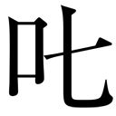
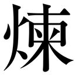

| 雷の季節の終わりに (角川ホラー文庫) | |
| 恒川 光太郎 | |
| (2014) | |
雷の季節の終わりに
恒川光太郎

角川ホラー文庫
本作品の全部または一部を無断で複製、転載、配信、送信したり、ホームページ上に転載することを禁止します。また、本作品の内容を無断で改変、改ざん等を行うことも禁止します。
本作品購入時にご承諾いただいた規約により、有償・無償にかかわらず本作品を第三者に譲渡することはできません。
本作品を示すサムネイルなどのイメージ画像は、再ダウンロード時に予告なく変更される場合があります。
本作品は縦書きでレイアウトされています。
また、ご覧になるリーディングシステムにより、表示の差が認められることがあります。
雷の季節の終わりに
プロローグ 薄闇の彼方
雷の音を聴くと私は薄暗い気持ちになる。雷がここではない遠い土地の薄暗い記憶を呼び覚ますからだ。
その土地の名は穏という。
穏は海辺の漁村を中心とした一帯の名称で、町の人間は海と畑からとれるものを基本として生計をたてていた。
私の知る限り、穏は一般の書物にはその名を記されていないし、地図にも載っていない。
記憶の中のその町──穏には春夏秋冬の他にもう一つの神の季節があった。
穏に住む者たちは、冬と春の間に位置する短いその季節のことを、神季、もしくは雷季と呼んで、特別に春や冬から分けていた。
雷季、その名の通り雷の季節だ。
冬が終わると、海の彼方から雷雲がやってくるのだ。雷雲は二週間ほど穏に留まり、無数の雷を降らせる。
雷季の期間は、穏に住む人間はほとんど家から出ることはない。外では狂ったように風が吹き荒れ、日によっては朝から晩まで、雷鳴が止まない。
遥か遠くに最初の雷が落ちる。
それが雷季の合図だった。
私の古い記憶の中の雷季。
護符を貼った雨戸を閉めた薄暗い部屋で、幼い私は漆喰の壁にもたれて息をひそめ、姉の手を握っていた。
世界に亀裂が生じていくような音がずっと響いている。
女が泣き叫んでいるような、長く尾を引く音が何重にもなって外の道を通り抜けていく。町全体が風を浴びて楽器のように鳴っているのだ。
姉が私の手を握って囁く。
──風わいわいが啼いている。
──風わいわい？
──風わいわいは、雲から降りてきて、そこら中を走って、見つけた人間に取り憑くのだって。
私は、無人の路地を風わいわいが走り抜けていくさまを想像した。風わいわい......風のお化け。
穏には風葬の習慣があり、風の魔物といえば、祖先の霊を連想させた。
遠くに落雷。風の悲鳴。また落雷。
──恐いよ。
──穏のあちこちでは、鬼も歩き回っているんだって。
風わいわいに、鬼。姉はさらに恐いことをいう。
──鬼は人を攫うのよ。
雷季は数多くの怪異が、そこら中で当たり前のように起こる特別な季節なのだ。
──攫われたら、どうなるの？
──大年神の使い鬼。悪い子は遠い地獄に連れていかれる。
私は姉の手を握る。
だからいい子にしていなさい、ということか。
少し間を置いて、姉が囁く。
──時が過ぎ去っていくのがわかるでしょう。
私は頷く。その通り、時は過ぎ去っていくのだ。一秒ごとに過去になっていく。
強風が街路の梢を揺らし、雨戸がガタガタと音をたてる。
──じっと考えるのよ。過ぎ去っていく一年に起こった全てのことを。
姉は続ける。
目を瞑って、ゆっくりと時間をかけて思い出しなさい。今はその為の時間なのだから。
やがて新しい年がくるから。
私はいわれた通りにする。
穏では、雷季に古い世界は浄化され、新しい世界が準備されると考えられていた。暦の上ではともかく、ここでの一年のはじまりは雷の季節が終わってからだ。
穏に住まう者は、土中の種のようにただじっと家に引きこもって、真新しい春の到来を待つ。
ある時、雷は尽きる。
次第に近くに落ちる雷が少なくなる。空に響く太鼓のような音もその間隔が広がっていく。やがて最後の一発がどこか遠い海の上に落ちる。
風の音が変わり、大気が弛緩する。そこに住む誰にも、精霊の宴の終わりがわかる。
雨戸がガタガタと開かれ、新しい年の最初の風が、部屋に舞い込んでくる。
春はそのようにしてはじまる。
第一章 〈賢也〉 穏
１
私を育てたのは神蔵という姓の老夫婦だった。神蔵家の隣の敷地にある瓦屋根の平屋で私は生活した。
朝食と夕食は老夫婦の家で食べた。米食に魚と野菜が中心で、陸の獣肉も時には食卓に並んだ。
血の繫がりのない老夫婦と私は、おおむねうまくやっていた。私は彼らの日常の雑事や畑仕事を手伝い、彼らは私に食事と寝床を世話した。彼らは、時折私を殴り、時折私を甘やかした。
穏の路地は実に魅力的だった。ある場所では石畳の道に樹木の枝葉がトンネルを作っていた。家と家を縫うように通っている道には、そこら中に小さな階段や、建物を潜るトンネルがあった。
角を曲がれば、道を塞いでヤギが昼寝をしていることもあった。馬が散歩しているのに出くわすこともあった。苔むした石積みの壁には明るい緑の蜥蜴が日向ぼっこをしていた。
通りの角には、遠い昔に彫られたのだろう怪物の石像が埋まっていた。そんな石像はあちこちにあった。
道は、雑木林の中や、風葬の森や、花畑や、学校や、権力者の屋敷へと続いている。未だ知ることのない素敵な秘密へも通じているように思えた。
学校は家から二キロ程の距離だった。集落から外れた丘の上にある木造校舎で、春から夏にかけての丘には、黄色や赤の花が咲いた。
全校生徒は二百人ほどで、八年生まであった。八年を卒業すれば、もう大人だった。
時折テストもあったが、受験があるわけでもなく、どこか弛緩した雰囲気が漂っていた。
年少の頃の私は、不思議なほど誰とも親密になれなかった。私はいつも最低の格付けで、知らぬうちに置いてきぼりにされたり、唐突に追い払われたりと、ずいぶん惨めな状況だった。
初夏のある日だった。数人の少年たちの群れに私はいた。
路地の角にある、いかつい顔をした石像の前で、意地悪な少年が思いついたように私に命じた。
「そこで、目を瞑って、二十数えて」
別の坊主の少年がいう。
「鬼ごっこ、まずおまえから鬼。捕まえたらちゃんと鬼を代えるから」
私はいわれた通りにした。
一、二、三......
目を瞑ると子供たちの息遣いと、含み笑いが聞こえる。
──あいつバカだぜ、
黄色い裏声で誰かが囁く。
──ワタシあなたのお姉ちゃんよう、目を開きなさあい。
──バカ、やめろよ。バレるだろ。
頭の上に、奇妙な感触のものを乗せられた。
甲高い笑い声が爆発し、慌てて目を開いて、頭を払う。
猫の糞だった。
「きったねえ！」
見回すと、誰もいなくなっていた。
うんざりしながら、人気のない蟬時雨の道を、とぼとぼと歩いて帰った。
２
あの日、穂高が声をかけてくれなければ、私の状況はさらに悪くなっていたかもしれない。
穂高は透き通るような顔立ちをした少女だった。私は穂高が自分と異なる性であることをまったく意識しなかった。その当時の彼女は、髪もこざっぱりと短く、少女というよりは、完全に少年だった。
放課後の教室で帰り支度をしている私の隣で、穂高はいった。
「今日、俺、浜辺に貝を採りに行くんだ」
それは独り言のように聞こえたので、私は返答しなかった。
穂高は私の表情を窺いつついった。
「ヒマなら、一緒に行くか？」
「一緒に行ってもいいの？」と驚きの思いできき返すと、穂高はにっと笑って、別の少年に声をかけた。
「おい、カレも一緒に行くってよ」
遼雲だった。遼雲は年少の集団の中では一際身体が大きかった。
「おお。あんましゃべったことないけど、よろしくな」
じゃあ、いったん家に帰ってから広場で待ち合わせな、と穂高はあっさりと決めた。
家に帰ると笊と籠とを持って、広場まで走った。嬉しさよりも、結局のところ待ち合わせ場所には誰もこないで、笑いものにされるのではないのか、という警戒の念のほうが強かった。
穂高が広場に姿を現した時には、心底からほっとした。
穂高は私の隣にくると、石垣に背をもたせた。
「あいつらが、遼雲と俺に、おまえのことを無視するようにいってきてさ」
あいつらというのは、私を仲間外れにした連中だった。私は、はっとして続きを待った。
「遼雲と俺で、なんでおまえらのいうこときかないといけないんだよって、喧嘩したんだ」
「いつ？」
「今日の休み時間」
「どうなった？」
穂高は、遼雲が、意地悪な少年の一人を殴り倒したことを教えた。
「あいつらと喧嘩することになったら、おまえ、俺たちの味方しろよ」
「絶対するよ」
私が知らないうちに、いつの間にやら学級内で派閥ができ、戦争状態が勃発していたのだ。彼らからはぐれた私がスカウトされたというわけだった。
やがて遼雲が現れた。
「おお、待たせた」
私たちは、勇ましい気持ちで喧嘩の話をしながら、浜へ行く道を歩いた。
夕刻、どっさりと採れた貝を持って帰ると、神蔵のおばさんは顔をほころばせて喜んだ。
その後のクラス内の戦いがどうなったのか、私はあまり覚えていない。自然に鎮静したように思う。
穂高や遼雲とのつきあいはその後も続いた。そのおかげで、私は以後、学校の同級生に表立って苛められることはなくなった。
３
学校の授業で、穏と世界との奇妙な関わりを知った。
八尋先生は中年の瘦せた女性教師で、当時のクラスの担任だった。
先生は、赤や黄色や水色が雑多に塗られた長方形の布を黒板の前に広げた。これは地図というもので、描かれているのは世界だという。
広大な世界には、無数の国があり、異なる文化風習がある。いわゆる地理の話が語られた。クラスの雰囲気から察するに、それほど皆の関心を引く話題ではなかった。
誰かが......おそらくは飲みこみのはやい利発な子が質問した。
「穏はどこ？」
八尋先生は意味ありげに首を横に振った。
「この地図には、私たちのいる土地は載っていません。なぜならば、この地図を作った人間は、穏の存在を知らないから」
みな不平を漏らした。
「だったら意味ないよ」
「知っている人が作ればいいのに」
「知っている人はいないの？」
「穏のことを知っている人は、いないこともない。でも、地図には載らない。載せないのね」
私たちは静まり返る。なぜ？
「私たちの土地は、この地図にあるような世界から、あえて隠れているのです」
隠れている。不思議な響きだった。
「どうして？」
「とっても複雑な事情があるのだけれど、まあ、簡単には戦争を避けるためにね。戦争というのは、たくさんの人間が、敵と味方に別れて、お互いに殺しあうことです。穏はそうしたことに巻き込まれないようにしているの。わかった？」
八尋先生の声が響く。
「外の世界は、いつも戦争をしている。穏の存在が外に漏れれば、彼らは必ずここを目指し、たくさんの人間が死ぬことになる」
その後、八尋先生は、数回の授業に分けて穏の歴史について説明した。
自分たちの祖先は、数千年前に彼方の土地よりここにやってきた。以来、この土地に根付き、時には飢饉や疫病、災害に苛まれながらも、外の世界とは距離を置いて独自の文化を確立してきた。これが穏のおおまかな歴史だった。
穏はどこかの中央権力に属した地方都市ではなく、自立していた。そうした意味で、穏は小さくとも国だといえるかもしれない。
穏は外の世界から少しずれた空間にあるために、外側からは見えない。古よりそういう土地なのだという。
私たちは穏の外に出てはいけない。訓練を積んでいないものが不用意に穏の領域から足を踏み出すと、あっという間に穏を見失い、戻ってくることができなくなるのだそうだ。
その当時の私は、そうしたことを聞かされても、あまり実感は湧かなかった。
４
墓町のことを知ったのはいつだったろうか。
五年生の頃だったと思う。休み時間に、フジという名の、物知り少年の口から語られたのだ。教室の連中はその少年を囲むような形で、話を聞いていた。
こんな内容だった。
穏には墓町と呼ばれている特殊な地区がある。そこは凄まじく恐ろしい幽霊の町で、踏み込むと碌な目にあわない。
「入ったらどうなるの？」
物知りの少年は、俺にもよくわからないんだけど、と前置きしてから、何年も前にそこに足を踏み入れて発狂した少女の伝説や、同じく迷い込んで、なんとか戻ってはきたが悪い霊に憑かれたために、帰るなり親を殺した少年の話をはじめた。
墓町といっても、穏は風葬の後、遺骨は一箇所にまとめるので個人の墓標は穏にはなく、墓地もなかった。ハカマチという単なる地名だった。
風葬の森も子供たちには充分に陰鬱で恐ろしげな土地だったが、物知り少年フジは、墓町に比べれば風葬の森など目じゃない、と断言した。
墓町は幽霊が出るどころではなく、幽霊の溜まり場だというのだ。
だが、墓町がどこにあるのかまで、フジは知らないようだった。
フジの話を聞いた日の帰り道だった。穂高と遼雲と私の三人で歩いていると、ふいに穂高が、「俺、あの墓町ってところ知っているぜ」といった。
私と遼雲は、ぎょっとして穂高を見た。
「どこにあるの？」
「いわないと駄目？」
穂高は得意気な笑みを浮べる。私たちは、ダメと答える。
「俺、フジが、墓町のこと話しているの聞いてびっくりしたよ。だって、あそこのことは人に喋ったらいけないんだよな。でも、まあ我が友人たちには特別に教えてやろう」
話によれば、学校から私の家の方角に墓町はあるが、そこに通じる道は塞がれているということだった。
遼雲がきく。
「なんで塞がれているの？」
「お化けが穏に入ってくるからだろ」
穂高はそこで、いくつか年の離れた兄から墓町へ至る抜け道を教えてもらったことを打ち明けた。
「行ってみるか？」
穂高の案内で、私たち三人は、私の家の前を通り越して歩いた。やがて石造りの巨大な門に達した。門には巨大な青銅の扉が嵌まっていた。扉の上は丸木が組まれ、豪奢な屋根になっている。
門の両脇からは、民家の屋根よりも高い石の壁がずっと延びていた。
石壁沿いに歩くと、やがて壁は人工のものから、天然のもの──そそりたつ岩肌へと変わる。
岩肌には、目立たないが足場があった。
私たちは、周囲に誰もいないことを確認してから崖を登り始めた。ある程度登ると、鎖もあった。わくわくすると同時に、いけないことをしている後ろめたさがあった。
崖の中腹に洞窟があり、その中に入る。
薄暗い洞窟には、石地蔵が何百も安置されていた。
「おっかねえ」
遼雲が呟く。
洞窟を抜けると、岩場の高台だった。風が私たちの顔に吹きつける。
眼下には古い町並みが広がっていて、遠くには森が見えた。
穂高は、眼下の町を手で示した。
「これが墓町」
遼雲が、おお、と小さく歓声をあげ、再度、おっかねえ、と繰り返した。
墓町は、手短な説明をするなら、打ち捨てられた古い無人の廃墟の区画だった。
ざっと見渡して半数以上の建物の屋根が崩れている。町全体が植物に侵食されていた。瓦屋根からは花が咲き、草木に埋もれた家屋もある。
これは町の死骸だと私は思った。
高台から見れば、墓町は確かに私たちの町と隣接していた。
私たちが沿って歩いてきた高い壁が境となり、生きている町と死んでいる町を見事に分断している。
私たちが立つ岩場から、門の裏側あたりに下りていく階段があったが、穂高も遼雲も下りようとはいい出さなかった。上から覗くだけで充分目的達成だった。
帰り道、「今日岩場から墓町を覗いたことは絶対の秘密にする」という約束をした。
こんな抜け道を知っているのは、きっと穂高以外にはいるまい。私は穂高を尊敬し、三人だけの秘密を持つことの優越感に酔った。
墓町に三人で行ったのは、それが最初で最後だった。
その時は、ただそれだけのイベントだったのだが──時折、墓町のことを夢想するようになった。
夢の中、穏の上空には月が上っている。昼間はみな寝ている墓町の住人が、夜になると崩れた建物や草木の陰から身体を起こす。彼らはみな透明な影のような姿をしている。
そして月明かりの下で、影のような住人が、私たちの住む町のほうに、あの断崖の洞窟を抜けてゆらゆらとさまよい出てくる。
それは悪夢というより、少し哀しい印象の夢だった。
神蔵のおばさんに、一度、墓町について訊ねたことがある。わざと、無知な風を装って「ねえ、ハカマチってなあに？」ときいた。
おばさんは首を横に振ると、呆れ顔でため息をついた。私をじっと見つめ、「危ないことをしてはいけないよ」とるようにいう。
危ないことをするのは愚か者だよ。決まりを守って、みんなを心配させない子供が一番賢いんだ。
「このあいだだって、九条さんのところの子供が、ほれ、浜で水死体で見つかったんだ。危ないことをすると、結局そんなことになるんだよ。おまえも、そのへんをわかって行動しなくてはいけないよ」
私はただハカマチと口に出しただけなのに、おばさんの説教はしばらく続いた。
５
三人で墓町に行った数日後のことだ。私は穏の広場をぶらぶらと歩いていた。その時広場にいたのは私一人だけだった。
広場の反対側から、眩い白い着物の老女と、屈強そうな男が現れた。
老女は私を見ると、目を細めた。
私は老女の射るような視線にぎょっとして足をとめる。老女はまっすぐに近寄ってきた。
「坊や」
きょとんとしている私に老女はいった。
「坊やだよ。何やら憑かれているね」
私が黙っていると老女は続けた。
「声が聞こえたりはしないかい？ いや、あたしの声じゃない。その、あんたにだけしか聞こえない声だよ」
私は首を横に振った。
老女は私を見据える。
全てを見透かすようなその視線に、得体のしれない居心地の悪さを感じた。老女の顔が奇妙に歪む。驚きの表情。
「はあ、これはもしかして......トバの？ いや、まさか」
嫌な雰囲気だった。私の腕に鳥肌が立つ。私は訊き返した。
「憑かれているって何にですか？」
鳥。鳥のようなもの。老女は呟いた。
「風わいわいだね。なに、それは放っておけば、消えてなくなるものかもしれないけどね。それならいいんだが、場合によっては、その憑きものは災いを呼ぶ。だから、もしも悪くなるようなら祓わないといけないんだ」
老女は、少し優しい口調に転じた。
「まだ、自分でもわかってないだろう。この先、たとえば声が聞こえるようになったら、私のところにおいで」
老女は、自分は穏の呪い師で、恐がることは何も無い、と名を名乗った。
「脅かしているようで悪いけどね。あんたのためだよ」
呪い師の老女と付き人が去ると、私は広場の隅のベンチに力なく腰掛けた。
周囲に穂高や遼雲がいなくて良かったと心から思った。
確かに私は何かに憑かれていた。
自覚していたからこそ、そのことは決して人前では口に出すことのない個人的な秘密だった。
私に憑いているもの。
それがやってきたのは三年前の雷季だった。
穂高たちとのつきあいがまだなく、友達が誰一人いなかった頃だ。
その頃にはまだ姉がいた。
私のたった一人の理解者は姉だった。姉が何歳だったのか定かではないが、ずいぶん年上のように感じていた。
私と姉は、薄暗い部屋で雷の音を聴きながら、無為な時間に身を委ねていた。
だが、そんなまったりとした平穏は、轟音と共に打ち破られた。
雨戸が開かれ、風と、強くはない光と、細かい水滴と、埃が一時に部屋に舞い込んでくる。
何かが家にやってきた。
私は慌てて毛布に顔を突っ込み、胎児のように身を縮めた。
争う音も悲鳴もなかった。
あるいはあったのかもしれない。私が毛布をかぶっていたから、聞こえなかっただけなのかもしれない。
しばらくして毛布の中から顔を出すと、扉は開け放たれており、姉は部屋から消えていた。
お姉ちゃん！ 私は姉を呼ぶ。
開け放しの扉の前まで行って、外を覗いた。途端に強烈な雷がどこか近くに落ちた。私は出来うる限りの大声で叫んだ。
風の悲鳴が通り抜けていく。
空が明滅する。
風わいわい......オニ。
雷季の魔物が姉を攫ったのだとしたら、今私が通りに飛び出したところで、もはや為す術はないだろう。
土砂降りの雨が吹き込んでくる。
とりあえず扉を閉めた。閂さえかけなければ姉が戻ってきても自力で開けられる。
魔物が姉を攫ったと決まっているわけでもない。便所かもしれないし、神蔵さんの家に、食べ物でもとりに行ったのかもしれない。そのように思ったが、涙がたくさん出た。
どのぐらいの時が経っただろう。
いつのまにか眠り込み、バサッと袋を丸めたような音で目を覚ました。
薄暗い家の中には気配があった。
お姉ちゃん？ ねえ、どこにいるの？
答えは返ってこない。
私は気配の主を探した。屋内をくまなく見るが、誰もいない。姉が戻ってきたわけではないようだ。
だが、確かに部屋に何かいる。気配の主の視線を、背後や、天井、物陰から感じる。
しばらく私は気配と対峙していた。
いつまでも集中は続かない。やがて意識が朦朧として途切れる。
眠ったのか、気を失ったのか。
その先は薄い闇と、記憶に残らぬ、平坦な時間。
雷季が終わり、神蔵さんが私の家の雨戸を開いた時、私の頰はこけ目は充血して体中に発疹が生じ、かきむしった傷があったそうだ。だがこれは後から聞いた話で、私はその時のことをよくおぼえていない。
姉について誰かに訊ねれば、「わからない」が答えだった。「雷の季節に起こることは、誰にもわかりはしない」
その春から私は一人になったのだ。
姉がいなくなった日、代わりのように部屋に入ってきた何者かは、雷季が終わった時には私の中に入っていた。
私が何かを見れば、それもまた、私の目を通して同じものを見ている。私が何かを味わったり、手に触れたりすれば、やはりそれも同じように私の舌や皮膚を通して、同じ感触を味わっている。私にはそれがわかる。
私の体を車に、私の精神を運転手にたとえるなら、助手席に何者かが座っている、といった状態だった。
それが私に話しかけてくることはなかったし、肉体の主導権を奪うことも、奪おうとすることもなかった。それは植物のようにただ助手席で大人しくじっとしていた。
これの存在は秘密にしておかなければならない。「何かに憑かれてしまった」ことは、私の穏での渡世にとって非常に不利に働くであろうことが、本能的にわかっていた。
呪い師の老女に指摘された時、私は内心、自分の人生が終わったように感じた。これまで自分だけの秘密であったことが、いともたやすく、見知らぬ他人に見抜かれたことに驚いていた。
だが、その後しばらくの間は、何が起こるというわけでもなく、やがて呪い師のことは記憶の底へと押しやられ、名前も住んでいる場所も忘れてしまった。
穂高や遼雲と出会う前、私は単身姉を捜索していた。
穏は複雑で広い。どこか別の家で姉が暮らしている可能性だってあると思ったのだ。
きっと私には知らされていない何かがある。たとえば、姉が穏のどこかで秘密の仕事をしていて、そのおかげで私の前に姿を現すことができない、といったようなことが。
そんなことを考えながら歩いていると、黄昏時に道のずっと先を姉が横切っていくのを見たような気がしたり、どこかよその家から漏れ聞こえた笑い声が、姉のものだったような気がしたりした。
そうした幻のような手がかりは、いつも気にとまった瞬間には消滅してしまう。慌てて曲がり角の先へと走っても、誰もいない。どこの家から聞こえたかと耳を澄ませても、もう何の音もしない。
三年前の私はことあるごとに、もういない姉をどこそこで見かけたと主張し、同級生たちに嘲笑された。私が仲間外れの憂き目にあったのは、そのあたりも理由の一つだったろう。
穂高や遼雲と遊ぶようになってからは、私はもう姉のことを口に出さなかった。彼らの顰蹙を買って縁を切られたくはなかった。
そのようにして私は、私の中で姉から距離を置いた。
６
風の強い秋の日だった。私は穂高の家の畑で、彼女の家族と一緒に朝から収穫を手伝っていた。芋や白菜や人参の畑だ。人参は白い花を咲かせていた。
穂高の家は町外れに位置していて、かなり大きな畑を持っていた。神蔵さんの家の畑の収穫は既に終わっていたので、手の空いていた私が手伝いにきたのだ。
午前中に仕事がひと段落すると、特にすることはなくなってしまった。穂高の兄が現れて、お菓子を食べないかと誘った。
穂高よりもずっと背が高く、大人びた雰囲気の兄だった。ナギヒサという名だった。
ナギヒサの顔の目鼻立ちや、背丈や肩幅や頭蓋の大きさは、私にとっては、成長したらこうなりたい、という理想だった。
私たちは、井戸水で体を拭き、泥を落とすと、穂高の家の縁側に座った。
ナギヒサは私に声をかけた。
「お姉ちゃんがいなくて、大丈夫か」
私は俯いて、うん、大丈夫、と答えた。
穂高が少し心配そうに私を見ていた。
「雷の季節にはよく人が消える」ナギヒサは難しそうな顔をして呟いた。「それはもう仕方がないんだ」
「ナーギ」
ナギヒサの知り合いらしい若い娘たちが数人、庭の垣根に姿を現した。
ナギヒサが娘たちに手を振ると、娘たちは庭に入ってくる。
「穂高がいる！」
娘たちは縁側に座っている穂高を取り囲むと、抱きしめたり、髪をくちゃくちゃにしたりした。穂高は人気者なのだ。
穂高は父親と何やら話した後、私のところに走ってきて、「家で飯を食っていけってよ」といった。
穂高の家の縁側で話していると、私の知らない人々がどこからともなく集まってくる。
人はどんどん増え、最終的には全部で二十人ほどの集まりになった。
にぎやかになった屋敷で、芋をふかしたお菓子や、豆腐や刺身が出される。お酒も少し飲んだ。
「いつもこうなの？」
穂高は首を横に振った。
「今日はナギヒサの誕生日と、親戚の集まり。特別だよ」
「俺もいていいの？」
「余裕」穂高は目を見開いた。「ナギヒサだって、ほら、友達呼んでるだろ。親戚じゃない人もいっぱいいるし」
私は、ふうん、と答えて座敷を眺めた。何組かのグループに分かれて、かなりの賑わいだ。三味線を弾き始めたおじさんまでいる。
私は思った。穂高には、兄がいて、父がいて、母がいる。親戚もいて、仲間たちもいる。陽光のさす暖かい屋敷と畑がある。
私の薄暗く静かな暮らしとはまったく違う。
私は自分の誕生日すら知らない。
穂高は、私が寂しかろうと思って招いてくれたのだろう。ありがたいことだと心の底から思った。私は彼女と、彼女を取り巻くその全てに強烈に憧れた。誰もが豊かで魅力的だった。集まりの中に交じっていれば、その時だけは、私もまたそうした連中の一人であるような気がして嬉しかった。
穂高の親戚が連れてきた、やたらに走り回る幼い子供たちと遊んでいると、ナギヒサの女友達の一人が、私の側に座った。
「あんたのこと知っているよ」
髪の長い陽気な印象の娘だった。年齢はナギヒサと同じぐらい。装身具が多い。耳飾りをつけ、腕輪をつけ、両手の指には、指輪を五つも嵌めている。外からの輸入品に違いなかった。穏の年頃の若者たちにおいて、外の世界の装身具を身につけることは、一種のステイタスだった。
「何を知っているの」私は、彼女の細い腕に嵌まった銀の腕輪の、蝶を模った細工に目を奪われながらきいた。
「えっとねえ、神蔵さんのところで、暮らしているだろ」
「あたり」
「あたしヒナ、何でもわかるの」
「おっ、ヒナに口説かれているのか？」ナギヒサが酒を載せたお盆を持って、通りがかりに冷やかした。
ヒナは、酔っているのか、ふふふ、と笑うと、私の目を覗き込んだ。
「今度、二人で遊びに行こうか」
「いいよ」からかわれていることはわかっていたが、思わずそう答えた。
ヒナは「いいの？ 穂高ちゃんは美人になるよお」と私に囁いた。
私は、ふいに自分の頰が、熱を帯びるのを感じた。
「なるはずないよ」
思わずそういうと、ヒナは鼻で笑って、おや白々しいという顔をした。
「誓ってなるはず」
ヒナは一緒にきた女友達に呼ばれて席を立った。入れ替わりに、穂高が足に小さな男の子をしがみつかせて、ふらふらとやってくる。
「賢也、こ、こいつを、引き剝がしてくれ」
私は穂高の足にしがみついている子供の脇腹をくすぐりながら、離れたテーブルにいるヒナを見た。ヒナは目が合うと遠くから私に笑いかけた。
永遠にこの場にいたかったが、神蔵のおばさんが食事を作っていることを思い出し、帰ることを告げた。
「畑の手伝いのお礼」ということで、穂高の母親から袋いっぱいの野菜を持たされる。
帰り道には、自分が薄いひらひらの紙になってしまったように感じた。風が心地よく、あらゆることが許せるように思えた。
夕刻過ぎに家に帰ると、神蔵のおばさんにどこをほっつき歩いていたのかと怒鳴られた。
正直に穂高の家で食事をしてきたと話し、もらった野菜を渡すと、神蔵のおばさんは、あっさりと怒りを鎮めた。
「そうだったか、あんたは穂高ちゃんとこの畑の手伝いをしに行っていたか」
おばさんは私を椅子に座らせて、穂高の家ではどんな人が集まり、どんなものを食べたのかを詳しく聞きだした。
最後に神蔵のおばさんはいった。
穂高ちゃんといつまでも仲良くしなさいよ、あの家は豊かなんだ。名家だよ。高貴な血も入っているんだよ。あんたの将来に関わってくることだよ。
穏の長い歴史の中には、外の世界の支配階級──つまり外では王族やら皇族やら貴族やらと呼ばれていた人たちが、亡命してきたことが何度かあった。また、建築や農業、芸術などの技術を外から伝えてきた者や、いつぞやの呪い師のような、特殊な能力を持つ者たちもいた。
先祖がなんたらであるという家柄も含めて、なにかを理由に一目おかれる者と、そうでない者がいた。つまり、序列や格差は穏にも存在していた。
だが、少年の私には、そんなことはどうでもいいことだった。
秋が終わり冬になる。
穏ではこの頃に月桃の葉に包んだザン（ジュゴン）の肉を食す。くる年の豊年を祈念する祭りが行われ、貧しいものへの分配が行われる。
冬の終わりに、人々は雷季の引きこもり、長い物忌みの準備をはじめる、町中に櫓が立つ。
櫓に立った番が、海の向こうからくる凄まじい黒雲を見つけると、町中のあちこちで太鼓が鳴る。
風わいわいと雷さまの軍勢のご到着。
空は暗くなり、雷の季節がはじまる。
第二章 〈賢也〉 死者の門
１
ヒナとは何度か、穏の通りでばったりと顔を合わせた。
彼女は私を見かければ声をかけてくれた。自分よりもずっと年上の異性の知り合いができるというのは愉快なものだ。
姉がいれば、きっとヒナと同じぐらいの年齢だったかもしれない。
ヒナは、いつもふざけていたように思う。
いきなり髪の臭いを嗅いで、洗うように忠告したり、腕の飾りを無邪気に見せびらかしたり、周囲を見回して、誰もいないことを確かめてから、くすぐって逃げたり。
ヒナの子供じみた摑みどころのなさには、困惑すると同時に、ずいぶん魅力を感じた。
春のある日に、ヒナが唐突に穏から姿を消したことを私は穂高から聞いた。同じ日に学校では、怪しい者や、見知らぬ者に声をかけられてもついていかぬようにと伝達があった。
ヒナが消えてから二ヶ月ほどが過ぎた初夏の夜明けだった。
早起きをした私は、なんとなく暇を持て余し、まだ薄暗い朝もやの通りに出てみた。
ひっそりとした他所の家の石垣から、桃色や黄色の花が垂れ下がっている。町が目を覚ますまで、もうしばらくある。
私は、見知った迷路をあまり目的もなく、ぺたぺたと歩いた。
ふいに、カツン、カツン、と、何かを鳴らすような音が聞こえはじめ、ぎょっとして足をとめた。
その音は前からこちらに向かってくるようにも、後ろから近寄ってくるようにも思える。
唐突に肩を叩かれる。小さな悲鳴をあげて振り返ると、男が立っていた。
男はぼさぼさの頭に、暗い色の着物を着て、腰には脇差を差し、手には槍を持っていた。全体として、筋骨たくましい武人の印象があった。
男は、こんな夜明けの時刻に、どうして子供がいるのかと不思議そうな顔をしていた。
槍に目を奪われる。柄に龍の装飾が彫られた槍は、私の身の丈よりも大きい。カツン、という音は、この槍が道を叩いていた音なのだと悟った。
私はとりあえず、「おはようございます」と挨拶した。
「おはよう」
「武術の練習ですか」
男は少し思案気な間を置いてから答えた。
「そうではない。俺は闇番だ。それより寝ないでふらふら歩いていてもいいのか」
私は、早起きしたので、ちょっとだけ外に出てみただけで、すぐ帰るつもりであることを告げた。「闇番」が如何なるものなのかは知る由もなかった。
男はじっと訝しげに私を見た後、「こりゃあ風わいわいか」と呟いた。私はその呟きに衝撃を受けた。これで二人目。呪い師以外にもわかるものがいるのだ。
闇番と名乗る男は、それ以上私に興味を示すことはなく、「あまり早起きすると、後で眠くなるぞ」といい残して、歩き去った。
２
明け方に遭遇した暗い着物の男のことは、しばらく頭に引っかかっていた。男が身に纒っていた雰囲気が、明らかに普段の私の周囲にいる人たちとは違っていたからだろうと思う。
闇番とは何だろうか。あの見事な槍。
穏には古くから警察権を任されたグループがいて、獅子野と呼ばれていた（ヒナの失踪事件も獅子野に任されていた）。男は獅子野なのかもしれない、とも考えた。だが、獅子野はお揃いの印半纒を制服として着ていたが、あの男はそれを着ていなかった。
数日後の夕刻、私は再び通りを歩いていく例の男を見かけた。朝見た時と同じように槍を持っている。
少し離れたところから、後をつけた。
男は、迷いのない足取りで、まっすぐに墓町の方へと歩いていく。
やがて、穏と墓町を仕切る門の前まで来ると、男は、大門の横にある通用門の小さな戸に鍵を差し込み、そこを通って門の向こう側に消えた。
私はそこまでを見届けると、引き返した。
夕食を終えてから眠りについたが、夜半に目を覚まして、そっと通りに出た。
満月だった。
月光を浴びて青白く輝いた高い塀の前まで歩くと、壁伝いに進み、岩山の洞窟を目指して登った。
高台から見る夜の町。
穏の命あるものの領域の方には、満月の月明かりが平和的に注ぎ、屋根や街路を照らしている。墓町のほうに目を転じれば、まるで森を見るかのように闇が濃かった。
墓町側の門の前に、青白い提灯が一つ、ぼうっと灯っていた。
門の前には椅子とテーブルが出され、あの男が一人で座っていた。槍は男の手の届くところに立てかけられている。テーブルの上には台帳のようなものが載せられていた。
私は高台からしばらく男を観察してから、そろそろと石段を下りていった。
「それは隠れているつもりなのか」
暗がりからほんの少し近寄っただけで、男は誰にともなくそういった。その視線は相変わらず正面の大通りを見ていたが、言葉が私に向けられているのは確かだった。
私はあきらめて、提灯の前へと足を踏み出した。
男は私に顔を向けた。目の下に隈ができている。
「こんなところに来てはいけない。お父さんにいいつけてやろうか。夜の墓町など、こっぴどくられることだろう」
「ぼくに、お父さんはいないんだ」私は返した。「お母さんもいない」
男は顔をしかめた。沈黙の後、ふと男の視線が、私の頭上をさまよう。男は、そこに何かを認める。
「そうか、このあいだの朝にふらふらとしていた坊主だな」
「そうだよ。おじさんは、ここで何をしているの？」
「見張りだよ。夜にここに入って悪いことをする奴がいないかどうかな。おまえが抜けてきた上の洞窟から下りてくれば、必ず俺の前を通ることになるからな。または墓町から穏に妙な奴が侵入しないか」
「妙な奴？ 墓町には、人が住んでいないでしょう」
「たいがいは、幽霊やら化けものやらだ」
「やっぱり幽霊が出るんだ」
男はため息をついた。
「豪胆な大人でもな、夜には壁の周囲に近寄るのも躊躇うのに......さあ、帰れ」
「ぼく、恐くないさ」
「ほう」
門からまっすぐに続く大通りは暗く、両脇には暗黒の廃屋が並んでいる。
私は提灯から二歩ほど離れて、大通りの方へと踏み出した。恐くないんだ、と男に証明してみせようと思ったのだ。
風が吹き、墓町の梢という梢を揺らした。道の両脇の廃屋から、怪しい視線がいっせいに私に集中したように感じた。
私は背筋に冷たいものをおぼえ、門まで駆け戻った。
壁に椅子が立てかけてあるのを見つけると、それをとって男の傍に座る。
「ちょっと恐かった」
男は低い声で静かにいった。
「当たり前だ。ここの闇は生きている。現在はこの門が穏と外との境界になっている」
私はほっと息をついた。
「闇番ってたいしたもんだね」
男は不思議そうな顔で私を見た。どうやら先日の朝に自分で闇番と名乗ったことを忘れているようだ。
「おじちゃんが自分でいったんだよ。こないだ朝に会った時に、自分は闇番だってさ。それで、闇番ってなんだろうと考えていたわけさ」
男はむっつりとした表情で、私に問いかけた。
「ここに、何をしにきた？」
「なんとなくきただけ」
私は追い返されることを心配しながら、「お化けがきたらおじちゃんが槍でやっつけるんだね」と感心してみせた。「すごすぎる」
男は意外に単純な性格なのか、気を良くしたようで、立てかけてある槍に手を伸ばした。
「その通り。我らが穏に化けものどもを通すわけにはいかんからな」
「でも、もしもすごく強い化けものだったら？」
「俺が負けることはない」
「頼もしいね。なにしろ、その槍がかっこ良くてさ」
いいかけたところで、男が制した。
「静かに」
私は闇番の男から、彼が注視している大通りの方に視線を転じた。
数メートル先に、何かが立っていた。
黒い影としかいいようのないものだ。
影は音も無く近寄ってくる。
私は思わず椅子を引いた。
提灯の光が、髪の長い婦人の姿を浮かび上がらせた。
花柄の服を身にまとっている。穏ではあまり見ないタイプの服だ。裸足だった。さほど年をとってはいないが、特に若くもない。表情には生気がなく、疲れが滲んでいる。
婦人の全身は半透明で、ところどころ向こう側の闇が透けて見える。
人間ではないのだと私は察した。
「あのお」
婦人は、闇番の男と私を、躊躇いがちに交互に見やった。男が促す。
「何でしょう」
「すみません。私は怪しい者ではないのですが」
「はい」闇番は椅子に座ったまま頷いた。左手は槍を握っているが、落ち着いている。場馴れしているのだ。
婦人は、闇番の槍、門、そして私に素早く視線をやってから質問した。
「あの、この門の向こうは、町なのですか？」
「そうです。穏と呼ばれる、人間の住む町です」
「まあ」婦人の顔から暗さが少しとれた。
「知らなかったわ。こんなところに。ずいぶん歩いてきたけれど、なんだかどんどん人里が遠くなっていくような感じで」
「なるほど」
しばらく沈黙があった。やがて婦人は口を開いた。
「スズキケンタロウという人が、前にここにきたことはなかったですか？ それから、スズキミエコ、あるいは旧姓でクラタミエコという人。だいぶまえのことですが」
男はテーブルの上から台帳をとると、ぱらぱらとめくった。そこには無数の名前が記されていた。
「きていないですね。それは死者ですか？」
婦人は笑った。
「もちろんそうですよ。私だって自分がもう生きていないことは承知しているのです。二人は、私の......両親です」
男は目を見開く。
「ご両親のお名前をまだ覚えているとは、珍しいことです。ただ、こういってはなんですが、もう忘れてしまった方がいいかもしれません」
婦人は、そうですか、と俯いた。
大切な名前だから、忘れないように、忘れないようにと、してきました。
でも、正直にいえば、今では顔もおぼえていないし、どんな人だったのかもうまく思い出せないのです。
おぼえているのは、十五年も前に順番に去っていってしまったこと。病気でね。私、自分がこんな状態になってしまってから、いろいろなことを忘れてしまうことに気がついて、呪文のように両親の名前を唱え続けて歩いてきたんですよ。
だって名前を忘れてしまったら、この旅路で偶然に会ってもわからないでしょう？
婦人は人の名前でできている呪文をぶつぶつと呟いた後に、顔を上げ、何人かの縁者であろう名前を出した。
男は台帳をしばらく見ていたが、やがて顔を上げて、お探しの方はこちらには来ておりません残念です、と告げた。
婦人は肩を落としてから、再び男の背後の門に目をやった。
「あの、あなたの後ろの扉を通れば、町があるのですよね」
男は頷いた。私も男の隣に座っていたので頷いた。
「彼らが、向こう側で暮らしている可能性はないのですか」
「ありません。この門より先は、生者の町なのです。死んだ人間は入れませんし、住んでもいません。残念ですが。お気持ちを察します」
婦人は肩を落とす。
「いいんです。すみません。私、勘違いしていました。遠くから提灯と門を見て、ようやく私の目的地に辿り着いたような気になってしまったんです。あなたは閻魔さまか、（わからないですけど）観音さまか何かで、門の向こう側では、死んだ人たちが私を待っているんだと思っていたんです」
「よく死者の方には、そのように勘違いされます」
「でしょうね。でも、どうしてこんなところに生者の町があるのですか？」
「複雑な歴史があるのですよ。残念ながら穏は、入ってもどうということもない、公の世間から遠い昔に切り離されたというだけの、田舎町ですよ。そして私はただの門番です」
闇番の男は台帳を閉じた。
「この道をずっとお戻りなさい。墓町──この廃墟の町のことですが、ここを通り抜けて、まだ戻ってください。丘のふもとのところに四つ角があります。そこを左手に、そう、海の方へずっと歩いてください。肉体無き者だけが歩く、彼方の国への道があるでしょう。何もかも忘れてしまえばいい。私にはわかるが、あなたの人生は、きっと幸福だった。問題は何も残っていない」
婦人の表情が輝く。彼女がここにきた時の辛い湿った表情とは、反対の顔だった。
「もちろん、幸せでしたとも」婦人は笑った。
「ご親切にありがとうございました。そうね。いわれた通りにします。なんだか最後に素敵な門番さんに会えて、よかった」
男はいかめしい顔つきのままだったが、頰の筋肉が微かに引きつったのを私は見逃さなかった。
「ところで、門番さんは、ずっとここでお仕事をなさるのですよね」
「まあ、そうでしょうね」男は気の抜けた声で答えた。
「ぜひお願いしたいことがあるのです。どうかきいていただけますか」
「できることなら」
婦人は何か覚悟を決めたかのようにいった。
「もしも──確率が高くないのはわかっています──この先いつか、私の夫がここにきたのなら伝言を。幸せでした。いずれまた会いましょう、と」
男は婦人とその夫の名をきくと、台帳の白い部分に伝言の文句と共に素早く書き込む。
「戻って四つ角を左でしたね」
婦人は最後に深く頭を下げ、ふわりと踵を返した。提灯の青白い光の下から離れると、その姿は闇に溶けた。
婦人が去った後には気の抜けた空白が残っていた。
男は独りごちた。
「さっぱりしていたな。いずれ完全に成仏するだろう」
私は早速きいた。
「あの人はどこからきたの？」
「ずっと遠くにある別の町だ。おそらくそこで死んだ後、さまよっているうちにここまできたんだろう」
私の頭の中で、別の町という言葉が響いた。ヒナが身につけている装身具の産地。百万の人間が百万の人間を殺し続けているところ。
「よくあんな女の人がくるんだ」
「バカいえ」男は目をむいた。「今の人は特別だ。たいがいは粘着質でな。くどくど、ぐちゃぐちゃ、やれ恨みを晴らしたいとか、どうしても許せないとか、自分の人生の評価はどうだとかなんとか、くだらんことばかり......うんざりだ」
そろそろ帰るよ、と告げ、去り際にきいた。
「ぼくの背後には何が見えるの？」
男は目を細めて、私を見る。
「鳥の化けものだ」
やはり、この男には去年の呪い師と同じものが見えているのだ。
「よくないのかな？」
男は首を捻った。
「よいのか、よくないのかは俺にはわからぬ。仮によくないとしても、既に憑いている以上は、仕方あるまい。そうした憑きものは、なんらかの才能をもたらす時もある。あるいは宿主の成長と共に消えてしまうこともある。何にせよ、おまえの身体はおまえのものだ。あまり気にするな」
私は思った。もちろん、それは憑きものと私の関係がよい方向に動いた場合だ。よくない方向に進む可能性も当然あるのだろう。だが、闇番の〈必ずしも悪ではない〉という見解は救いだった。
「わかった、またくるよ」
私はそう告げると走りだした。
面白いものを見ることができた。少し眠くなってきた。
高台の洞窟を抜け、生者の町に帰還すると人心地つく。墓町から比べればずっと明るい穏の路地を、全速力で駆けた。
ようやく寝床の上に戻ると、安堵からだろう、なんだかやたらに幸福な気持ちになり、くすくすと一人で笑った。
それから先、私は夜に寝つけぬ時には墓町に忍んで行くようになった。
３
闇番の男の名前は、大渡さんといった。
大渡さんは、最初のうちこそ、子供が夜中にこんなところにきてはいけない、と繰り返したが、何度目かにはあきらめたのか、何もいわなくなった。
テーブルの前に姿を現すのは、たいがいは死者だったが、それ以外にも、様々な性質のものが顔を見せた。
大蛇や大蜥蜴が現れる時もあれば、目鼻立ちが奇怪な配置の白装束の行者や、全身が毛に覆われた正体不明の獣が現れる時もあった。
大渡さんは何が現れようと、落ち着いて次のように主張した。
「門の向こうの町には入れぬので、引き返さなければならない」
話が通じぬ相手は、槍をふるって追い払った。
愚痴をこぼす死者は多かった。彼らはやってくると、扉が閉まって通れないことをまず嘆き、その後うろ覚えの身の上話を語るのだ。自分が死んでいるのに、まだ生きている人間がいるのが許せない、と憤慨するものもいた。
死者はみな、暗闇の中を一人ぼっちで歩いてきて、誰かと話をしたがっているように見えた。大渡さんは、適当に相槌を打ちながら、彼らの人生の話を聞いた。
私の知る限りは、死者はみな最後には納得して、安らかな顔で闇の中へと引き返していった。
満月の晩だった。神蔵夫婦が寝静まったのを確認してから、いつものように墓町に足を向けた。
高台から墓町を覗いて、あっと思った。墓町の大通りのあちこちに、篝火が焚かれて闇を照らしていた。
大渡さんは提灯に照らされたテーブルについて、なにやら書類を眺めていたが、私を見ると立ち上がった。
「きたのか。駄目だな。今夜は、商人がくる特別な日で忙しい。門の前に人が集まるのだ」
「商人？ 穏の外から？」
私は篝火に目をやる。
「そうだ」
「見たい」
私は即座にいった。大渡さんは顔をしかめる。
「隠れて見ていてもいい？」
「駄目だ」
大渡さんは、いったんはそう答えたが、腕を組んで、少し考え込んだ。
「大人になればいくらでも見られるが、どうしても今晩見たいか？」
私は、見たいと激しく主張した。大渡さんは、それでは特別だと、通用門の扉を開くと、大門の上に上がる梯子を示した。
通用門には普段は鍵がかかっていたので、そんなものがあるのを知らなかった。
梯子を上がると、石門の上にある瓦屋根の庇の下にでた。大渡さんが下から声をかける。
「決して声を出すな。下に人がいるうちは当然下りてもくるなよ。小便がしたくなっても我慢だからな。商人たちが帰ったら、おまえも速やかに帰るんだぞ」
私は胸をときめかせながら、門の上の特等席で身を屈めた。門は高く落ちれば無事では済まない。
墓町を突っ切る大通りの先が見えた。
遠い崩れた石塀が満月の光に照らされてぼうっと光っている。
その先は黒い森になっている。
ふと思った。あの森のあたりは、もう「穏の外」なのだ。
暗い森の先には何がある？
危険で広大な大地。ずっと進めば別の町があるのだ。胸苦しいような不思議な気持ちになった。
やがて森のあたりに、松明の灯りが見えた。十ほどあり、ゆらゆらと揺れながら近付いてくる。
松明の灯りを見ていると、私は俄かに不安になった。あれは商人なのだとわかっていたが、やってくるのは人殺しばかりしている「穏の外」の人間たちだ。何が起こるかわかったものではない。
ガラガラと大きな音がした。自分の足元の大扉が開いていく。
いつのまにか穏の側にも二、三十人ほどの男が集まっている。後にわかるが、半分はただの野次馬だった。
森からやってきたのは六台の牛車だった。彼らは門の前で、大渡さんとなにやら言葉を交わし、積み荷を降ろしはじめた。
待機していた穏の人間も墓町に入ってきて、外の者と入り交じり、積み降ろしを手伝う。
リズミカルな歌のようなものが響いてくる。
穏と外の者が、同じ歌を歌っているのだ。
歌のリズムにあわせて、次から次へと大きな袋が降ろされていく。ヒナが身に着けていた装飾品も、こうした貿易で手に入れたものなのだろう。
穏の者と外の者は違う。篝火に照らされた服装や、細かい装飾で見分けがつく。だが歌が橋となり両者を結び付けていた。
穏の側から荷台が牽かれてくる。積まれているのは穏で作られる反物や工芸品だった。
穏の側が出す荷は、相手が降ろした荷に比べて圧倒的に少なかった。相手の降ろした積み荷は荷車六つに山と積まれてきたのに、こちらが出すものは荷車一つだけ。
よくもこれで取引がまとまるものだと思うが、きっと「穏の産出物」は、それを受け取る側にとって、ずいぶんな価値があるのだろう。その時の私は、そのことがずいぶん誇りに思えた。
大渡さんは、隊商のリーダーらしき人物となにやら話し込んでいた。
穏の人々は、荷を満載した牛車と共に、門の前から次々に引き上げていく。どこか別の場所で分配が行われるのだろう。
やってきた商人たちも、門より先に入ることはなく、牛車と共にきた道を戻っていった。
（スゴイなあ）
女の声がした。誰かが梯子を上がってきたのかと思い、慌てた。
だが、誰もいない。
（こんな風にして、貿易しているんですね）
年齢不詳の女の声は頭の中に響いていた。
一年も前の、呪い師の言葉を思い出す──自分にしか聞こえぬ声が聞こえることはないかい？
私は、頭の中で、声の主におそるおそる呼びかけてみた。
（君は誰？）
声はぴたりと止んだ。
返答がくるまでに少し間があった。
（さあ、誰でしょう？）
（風わいわい？）私は胸の内でいった。（ぼくに憑いている......風わいわい？）
（はじめまして）
（君がいるのは知っていたよ。いつだったかの雷の季節に......）私はため息をついた。（言葉も話せるんだね）
消えてしまうこともある、と呪い師はいったが、そうはならなかったわけだ。夜の墓町に通ったことが影響しているのかもしれない。
（話せます。話そうと思えば）
（じゃあ、祓ってもらおう）
女の声は慌てた。
（駄目ですよ。そんな、つまらない）
（つまらない？ 気味が悪いよ）
（いいじゃないですか。夜の墓町に通うほうがよっぽど気味が悪いと思いますけど。私が何かするわけではないでしょう。今までだって何もしなかったし、これからだって何もしませんよ。こうして話すのだって四六時中というわけではないし、仲良くやっていきましょうよ）
風わいわいは続ける。
（大丈夫。私は君のところにずっといるわけじゃない。そのうち、いなくなります。わざわざ祓わなくてもね。人間は勝手でね、風わいわいに憑かれているものが悪さをすると、悪さをしたのは風わいわいに憑かれているからだ、と決めつけたがる。繫げてしまうのですね。別に風わいわいに憑かれていなくとも、悪さをする人間などいくらでもいるだろうに。わかります？）
私は答えなかったが、風わいわいのいわんとすることはわかった。
（風わいわい憑きについて碌に知りもしない。ただ、自分たちと同じじゃないと、気にくわない。そんなことに君が心を煩わすことはないのですよ。ああ、そうそう。挨拶代わりに、君がどうも知らなさそうなことで、肝心なことを教えましょう）
不安を感じながらも、何、と促す。
（外に関することに、密かに心が騒ぐのは、君が外からきた人間だからですよ）
眩暈をおぼえた。
（ぼくが外からきた？）
（記憶はありませんか？ 今商人たちが入ってきたのと同じ道を通って君はここにきた）
物心つくまえのことは、もやがかかっていてよくわからなかった。ただそのようにいわれれば、自分の記憶に、穏にあるとは思えない風景の断片が秘められているのは気がついていた。金属でできた骨組みだけの塔がたっている丘や、やはり光沢のある金属がピカピカと光っている乗り物。私はそれらを夢の世界のものと決めつけていた。
（これは確かなことです。私は君の心の一部と繫がっています。私が鳥とすれば、今は、君という泉に空から舞い降りて休んでいる状態なのです。だから、泉の底に何が沈んでいるのか私には見えます。穏には存在しないが、外には存在するあれこれがね。もっとも今では君はこの土地の人間です。ここで成長し、おそらくはこの地で生涯を終える。君の属する場所はここですよ）
ぼんやりと通りに目を転じると、隊商の松明の灯りが森のほうに遠ざかって行くところだった。
（どうしてぼくに憑いているの？）
（さあ、どうしてでしょうね）
風わいわいは、少し思案気な間を置いた。
（君が呼んだからではないですか？）
（ぼくが？）
（そう。雷の季節に）
風わいわいはそこで話を止めた。私は彼女が話し出すのを待ったが、会話は途切れたままだった。
（ねえ）
話しかけるが、返答はない。
風わいわいと私の間のドアは、閉ざされてしまった。
通りにはもう誰もいなくなっていた。
私は眠気をおぼえた。
風わいわいとは、それから時折言葉を交わした。話しかけても返事がない時もあったが、私は特に気にしなかった。
本当に辛くなった時（神蔵のおばさんに怒られた時や、眠れずにいろいろ考えすぎてしまった時には）風わいわいは空を舞う夢を見せてくれた。夢の中で私は雲海を飛行し、一種の神のように、何の障壁もない明るい自由を味わった。そんな夢から覚めると、傷ついた心が不思議なほど癒され、自信や力が戻ってきているのだった。
私はしばらくしてから、昼間に墓町に一人で忍び込み、大通りの先まで歩いてみた。無人の廃墟はひっそりと静まっていた。
まっすぐ歩けば、穏と墓町との境界と同じく、城壁と門があった。
こちらの門には扉は嵌まっていない。蒲鉾形の、古い石積みの門だった。
門の向こうには、森の中へと続く木漏れ日の道が続いている。
外の世界へと続く道。商人たちはこの道を通ってやってきたのだ。そして私もかつてこの向こうからやってきた。そう思うと、少し不思議な気分になった。
この道の先には、夢の中の世界があるのだろうか。
じっと見ていると、アーチの向こう側の道が私を誘惑した。
気になるなら、出て行ってみたら？
木漏れ日の道が魔物のように思え、私は急に恐ろしくなった。誘惑を頭から振り払うと、慌てて踵を返し、穏に向けて走った。
駆けていると、一匹の野犬が廃屋の一つから躍り出てきて牙を剝いた。思わず私は跳躍した。風が起こり、何か妖しい力が私の体を持ち上げる。
私の両足は空を搔いた。
野犬の背を大きく飛び越え、信じがたい思いで着地して振り返ると、野犬は萎縮しきって、建物の中に引き返していく。
風わいわいが、からからと笑った。
第三章 〈賢也〉 幽霊
１
季節はいよいよ夏で、学校も休みになった。
空には積乱雲が現れ、陽射しは夜が明ければすぐに全開。夕刻には土砂降りの雨が地熱を蓄えた大地を冷やした。
穂高から、仙水に行こうと誘いを受けた。
仙水というのは、風葬の森のずっと奥にある泉の名前だ。
そこは天然のプールになっていて、水遊びができるらしい。穂高の兄が連れていってくれるということだった。
当日は五人の遠征になった。私と穂高と遼雲の三人。もう学校は卒業している穂高の兄のナギヒサと、その友人、キミオだ。
私と穂高と遼雲は三人で固まって歩き、年上の二人は前を歩いた。ナギヒサとキミオは私たちとだいぶ年の差があり、先輩というより若い保護者の感覚だった。
風葬の森に入る時には、「風わいわいが出るぞ」と、二人の保護者が私たちを脅かした。
森の道は幅が広く、草木が輝いていた。
「全然恐くないや」と穂高が笑う。
私は黙ってそんな会話を聞きながら、やはり彼らには、化けものが私に憑いていることは知られていないのだな、と安心した。
仙水は実に清冽な泉だった。
水面は日光に反射して輝き、青みがかった透明な水が、岩壺に湛えられている。あちこちで数組の家族が水浴びにはしゃいでいた。
私たちは服を脱いで下着になると水に入った。
泉の水は冷たく、水面から底砂と、銀色の魚が身を翻すのが見えた。
キミオは、極めて頑強な肉体をしていた。完全に大人の体格で、二の腕や胸の筋肉は盛り上がっている。何かあっても彼がいれば安心だった。
キミオは、はしゃぐ私を抱えあげて水に放り投げた。
ナギヒサが岩場の高みから見事な飛び込みを見せる。
水遊びがひと段落つく頃には、私の唇は紫色になっていた。私たちは泉の近くにごろごろと転がっている平たい岩の上に寝そべって身体を乾かした。
水滴のついた冷えきった身体が、陽射しを浴びて熱を取り戻していくのが心地よかった。
誰もが笑っていた。豊かな自然と、適度な運動と、笑顔の仲間。その三つが揃った少年時代の一日は奇跡のようなものだったと、今にして私は思う。
昼飯は泉の近くの木陰の岩場で食べた。私は神蔵のおばさんが作ってくれた笹で包んだ握り飯を弁当にもってきていた。
食事中に、ナギヒサがふとキミオにきいた。
「ヒナの捜索はどうなっている？」
私たち年少の三人は、その時まったく別のことを話していたのだが、年長者同士の話を聞こうと、会話を止めた。
「手がかりはあったか？」
キミオが、どうかな、と首を捻った。
「獅子野の連中は、今でも捜索しているみたいだけど、やっぱり穏の中にはいないらしい。どこかの門から穏の外に出て行ったか、海辺で波に攫われたか」
ナギヒサは舌打ちした。
「外からきた奴らに連れ去られたって線は、どうだったんだ？」
「絶対ないわけじゃないけど、その線は、薄いってよ。ヒナが消えた日は、穏には外からの客人はいなかったって。あの日に穏からいなくなったのはヒナだけだとよ」
ナギヒサとキミオの話し振りからすると、キミオには、獅子野に誰か知り合いがいるようだった。
「誰かに殺されたとしても、穏の奴の可能性が高いだろうってさ」
「それもまた嫌な話だな」
ナギヒサは憂鬱そうにため息をついた。
キミオが思い出したようにいった。
「あ、そうだ、俺、このあいだ、日が暮れてから、変な奴を見たんだよ。なんだか暗い感じの怪しい男でさ、墓町のほうに歩いていくんだ。擦れ違った時、ちょっと恐かったな」
私は、その人は違うよ、と主張したかったが、口を出せなかった。
「違うと思うよ」ナギヒサがいった。「そりゃ、たぶん墓町のほうの門の番かなにかで働いている人だろ。怨霊捌きの達人ときくがな」
ナギヒサは闇番を知っているらしい。
キミオは、ああ、じゃあ、それかもな、と返した。
「ヒナだけど、殺されたとは思いたくないな。どこかで生きているんじゃないか。あいつは他人に恨まれるような奴じゃないし、もしかしたら穏から出て、別の町にいるのかも。輸入品の飾りものとか大好きだったから」
「でも、そうならさ、俺たちはともかく、ユウミやサナたちにだけでも、計画を教えてからでればいいのにな」
キミオは私たちに視線をやると、「おまえらも、最近は本当に、何があるかわからないから、気をつけていろよ」といって、その話題は終わった。
帰りはきた道と別の道を歩いた。
風葬の森を抜けると景色が開けた。
草の生えた緩やかな丘陵が連なっている。遠い丘の頂上に、白い建物がいくつかまとまって建っているのが見て取れた。町の周囲には、建物と同じく白い城壁が張り巡らされている。
私は俄かに興奮した。
「あれ、よその町じゃない？」
「違う違う」キミオが、私に顔を向けた。「町じゃなくて」
「天上家」ナギヒサが後を引き取った。「あそこは、ほれ、天上家が住んでいるところだよ」
遼雲は目を丸くして、「あれが、天上家か、でっけえ」と感嘆の吐息をもらした。
私も、「天上家」という名前だけは、どこかで聞いたことがあった。天上家は穏の最高位の家柄だった。
天上家の一族は誰とも交流を持つことはなく、姿を現すこともない。普通の人間が一生のうちに彼らと会うことはまずないとされていた。まさに天上の存在なのだ。
遼雲が呟く。
「天上家って、本当にいたんだ」
「いるだろ。あそこに御領があるんだから」
「じゃあ、行けるの？」
「死ねばな」
ぽかんと口を開いている遼雲に、キミオが笑って説明した。
「生きている人間は行けない」
これまで何らかの目的をもって、天上家の御領を目指した人たちはたくさんいたが、白い建物まで辿り着いたという者はいない。
まっすぐ目指しても、近寄れば近寄るほど天上家の丘は遠ざかる。いざ目当ての丘のふもとに辿り着いたと思っても、その時には白い城壁と建物は消えてしまう。
ナギヒサがいう。
「風葬の森にある塔で死体を鳥や風にさらすだろ。そうすると、よい魂は、天上家の丘のほうに飛んでいくんだって。死んでから天上家の人に会うんだってよ」
「悪い魂は？」
「悪い魂は、風わいわいになるから天上家には行けない。苦しんで悲鳴をあげながら、雷季になると悪さをしに穏にやってくる」
私たちはしばらく天上家を眺めた後、どこか神々しい気持ちになりながら、帰路についた。
夕方家に戻ると、私は壁にもたれてぼんやりと物思いにふけった。たくさん歩いたせいで足が重い。
（かわいそうに）
ふいに風わいわいの声がした。
私はむっとした。今日は楽しかった。素晴らしい一日だった。かわいそうとは何だ？
（やれやれ、あの人たちによると私は悪い魂ってわけですか。君は魂なんぞによいとか悪いとかがあると思いますか？ ただの町の幻を、ありがたそうに拝んで）
私の中で暗い気持ちが広がっていく。風わいわいは気にする素振りもなく続けた。
（天上家ですって。死んだってそんなとこ行けませんよ。そんなものあそこに無いのだもの。どこか遠い異世界の町が、たまたまあそこに影を落としているだけですよ。いくら無知蒙昧な民といえ、簡単な実験を繰り返せば幻に過ぎぬことが証明できるでしょうに。かわいそうな人たちですね）
（出て行け）
私は冷たくいった。風わいわいは繰り返す。
（いや、だってね。誓ってもいいですけど、あの幻に、そんなお偉い人なんか住んでないです）
「おかしくない。住んでいるよ。出て行け」
私は声に出していった。癇癪をおこしかけていた。
天上家が在ろうが無かろうが、どうでもいい。風わいわいは、私の素敵な一日に泥をぶつけて汚そうとしている。
「おまえなんか、いらない。なんでぼくに憑いているんだ？ さっさといなくなれよ。消えてなくなれよ」
（まあ、ちょっと落ち着いてください。ぶつぶつ独り言をいっていたら、みんな失いますよ）
「迷惑なんだよ。邪魔なんだよ。もう嫌だ。決めた。祓ってもらう」
（何が嫌なんですか？ 私は別にお友達の悪口をいっているわけじゃないですよ。かわいそう、と思っただけです。だいたいあなたは外からきた子供でしょう）
「黙れ、聞きたくない。それだって、おまえが勝手にいっているだけだろ」
（まさか。あなた自身、もうわかっているでしょう？）
私の両目から涙がぽろぽろと零れた。
「消えろ、消えろ」私は完全に癇癪を起こし、風わいわいの言葉を遮ってわめいた。
耳に手をあてて、消えろ消えろ、と呪文を唱えた。消えろ消えろ消えろ。
風わいわいの声はまだなにやら脳内に響いたが、それを全て「消えろ消えろ」でかき消した。
こんな嫌な気分にさせた風わいわいを憎んだ。呪い師に祓ってもらおう。
いつ？ 今すぐだ。
私が耳を塞いだまま、夕暮れの通りに飛び出すと、神蔵のおばさんが立っていた。
「おや、びっくり。もうすぐ夕食だよ。今日は穂高ちゃんたちと遊びに行ったんだろ？」
おばさんは私の顔を見ると、どうしたんだ？ ときいた。何かあったのかい、ひどい顔をしているじゃないか。
急激に冷めた。
「ううん、全然」無理に笑顔を作ろうとしたが、頰が引きつるだけだった。
「ご飯は何？ 手伝う？」
それから数日間、私は去年出会った呪い師の老女の名前や、その住んでいる場所を思い出そうとしたが、記憶はあやふやで、うまく思い出せなかった。他人にきくこともできたろうが、私に風わいわいが憑いていることを、皆に知られてしまう危険を思えば、下手なことはできない。
風わいわいはずっと沈黙していた。症状のでない病気の治療に行くのが面倒なのと同じで、ぐずぐずしている間に時は流れていった。
２
夏の日は続く。
私は穂高と一緒に、学校の近くの花咲き乱れる野原を歩いていた。
私は話の区切りに、穂高にいった。
「俺、穏を出ようと思っているんだ」
「へえ、じゃあ、みんなで、お弁当を持って出て行ってみるか？」
穂高は笑みを浮べた。
本気だとは思っていないから冗談が返ってくる。だが、穂高がそう返す時に一瞬遅れたことや、笑みに微かな硬さがあることを、私は見逃さなかった。
私は穂高の顔をじっと見つめた。
楽観的で陽気な輝きの宿った瞳。彼女は少女とも少年ともつかない、「穂高」としかいいようのない、不思議な魅力を放ちはじめている。
「なあ、穂高、俺さ」
何だ？ と、穂高が私の顔を覗きこむ。私は思わず目を逸らした。
「俺、外からきた子供なんだって。知っていたか？」
「ああ？ いいや？ ああ、ああ」穂高は困惑気に目を泳がせた。穂高は噓をつくのが下手だ。彼女は早々にあきらめ、「まあ、聞いたことはあったけどさ」と呟いた。
「そうか、穂高は知っていたか」
「ああ、まあ」
「誰に聞いた？」
穂高は黙って私を岩場の陰に連れていった。声を潜める。
「兄貴から。でも、絶対、おまえにはいうなっていわれていた。おまえ自身、もう外の記憶なんかないだろうからってさ。そのことを知っているのは穏にはほとんどいない。遼雲だって知らないはず。まあ、俺が知っていることなら教えるけど」
私は穂高からきいたとはいわないと約束して、さっそく質問する。
「何で俺はここにいるの？」
「商人に連れてこられたって」
夜の墓町で見た牛車のキャラバンを即座に思い出した。穂高は、私が「商人」というものを知らないと思ったのだろう。わざわざ説明してくれる。
「商人ってのはさ、まあ、俺も見たことはないんだけど───穏の外のいろんなものを、穏で作られる反物とかと交換するために、時々くるんだって。とにかく、その人たちと一緒にきたらしい」
「じゃあ、俺、商人の子供なのかな？」
「違う。賢也が道で倒れていたのを、商人たちが拾ったんだってさ。その時は穏の偉い人たちの間でいろいろ話がでたのだけれど、結局、神蔵夫妻が子供を欲しがっていることもあって引き取った。外からきた子供だってみんなに話すと、他の子供に苛められるだろうから、それは絶対の秘密だって。俺が知っているのはそれだけ」
私はため息をついた。穂高は、心配そうに私の表情を窺ってから、陽気にいった。
「でも、まあ、気にすんなよ、そんなこと。今では完全に、穏の人間なんだしさ。おまえから口に出さなきゃ、俺だって忘れていたし」
「そうかな」
「そうだよ。でも、こうやって話してしまうと、俺もいろいろ思うんだけど、ここにくる前は、どこか他所の町にいたわけだろ。その頃のこととか何か覚えていないの？」
「わからん。何も覚えていない」
少なくとも、言葉にして穂高に説明できるほどには覚えていない。穂高は、つまんねえの、と肩を落とす。
「学校の先生もいっていたけど、今穏に住んでいる連中だって、もとを辿ればほとんどみんな外からきた人なんだしな。一緒一緒」
一緒ではないことを私は知っている。彼らには親兄弟がいて、社会的な根のようなものがある。私にはその根はない。一緒ではないからこそ、秘密にされたのではないか。
でも、少しすっきりした。穂高は、私の出自を知った上で一緒に遊んでくれているのだ。
穂高は私を揺さぶった。
「穏を出るってそれでかよ。そんなの、冗談だよな？」
「あれ、俺、そんなこといったっけ？」
私はとぼけてみせた。穂高は顔をしかめた。
「いっただろ。出たらたぶん死ぬぜ。大人だって危ないのに。穏の外は、人喰いの獣もいるって。仮にうまいところ外にある別の町まで行けたとしても、そこがいいところだとは思わないな。絶対穏のほうがいいところだぜ」
「だろうな」
私も本気でそう思った。
外の世界は碌なところではない、と繰り返し聞いてきた。下界という呼び方すらされていた。天上家は階段の上の世界だが、一般の穏の外の町は、階段の下の世界。
穏は完全に閉ざされているわけではない。少数ではあるが、下界から穏に正式な手続きを踏んでやってくる人たちもいる。下界には二度と戻らぬことを誓い、穏の門を潜り、余生を過ごしにやってくる老人たち。たいがいは下界の特権階級だという。彼らはなぜわざわざ、この秘密の土地で暮らそうとするのか？ ここが、元いた土地より素敵な場所だからに決まっているではないか。
「穏には俺もいるしさ」穂高がそういったので、私はあまり意識せずに、そうだよな、おまえもいるしな、と答えた。
次の瞬間、穂高が私の頰に唇を押し付けた。
私は驚いて身を硬くした。唐突に心中で何かがはじけて燃えるような、自分でもわけのわからない状態になる。耳がほてる。
穂高は、さっと私から離れると、私が攻撃してくることを予測したのだろう、悪戯っぽい笑顔で空手の構えのようなものをとった。
私は、混乱状態から立ち直れないまま、穂高を見た。
穂高は、あれ、ふざけただけだけど、変なことしちゃったかな、と気抜けした顔で構えを崩す。
「何すんだバカ、ぶっ殺すぞ」私は反応が遅れたことを恥じるように、大声で叫んだ。
「わかったわかった」
穂高は笑った。そして、澄んだ瞳で再び私を見ると、話題を変えるように、
「大人になったらさあ」
と、いった。
その後は続かない。きっと穂高は自分でも何をいうか考えずに口に出したのだろう。よくあることだ。穂高はごまかすように、とんとん、と横飛びにステップを踏むと、岩陰から飛び出した。
私も追って飛び出す。
強烈な夏の太陽光が眩しくて、一瞬目を細める。
大人になったら？
私はこのままで何の問題もない。
その日、私の胸の中の特別な場所に居座った穂高は、以後消えることはなかった。
３
数日後の晩。風が止まり、寝苦しい熱帯夜になった。私は家を抜け出し、墓町へと足を向けた。商人が穏にきた夜以来だった。
門の前に提灯が灯り、いつものように大渡さんが座っている。
「おお」大渡さんは苦笑する。「まったく飽きもせずに奇特な奴だな。あるいは風わいわいの影響かもしれんな。いかにも魔物の好みそうなところだろうよ」
「違うよ」私はいった。「ぼくは、今日、風わいわいを祓ってもらえる人が住んでいる場所を、大渡さんに教えてもらおうと思ってきたんだよ」
大渡さんは目を丸くした。
「なるほど。祓うとすれば、雲見の姥か、確か、東の方にも狐落としの婦人が住んでいたな。だが、よいのだな、それで」
「だって、いいことないさ」
「まあな。普通に生きるには、少しばかりな。よし、今から四日後にしよう。俺が信頼できる術者のところに連れていってやろう」
私が、本当に？ と驚くと、大渡さんは、構わんよ。そのほうがよかろう、とあっさりといった。
祓ってしまうことに躊躇いもあったが、長い目で見れば後悔はしないだろうと思った。
その後、私は、友人と泉へ行ったことや、帰りに天上家を見たことを大渡さんに話した。
私は、穏の人間の死後についてきいた。
「死んだら魂は、天上家の丘に行くんだって。そうなの？」あえて「よい魂は」とはいわなかった。
大渡さんは、面白そうに、口の端に笑みを浮べた。
「どうかな。天上家に向かったとして、そこにも俺のような門番がいて、ここには入れないよ、といわれるのかもしれんぞ」
確かに、それはありえる。風わいわいが同じことをいえば反発するが、大渡さんがいうなら納得できる。
「天上家の町の先には、さらに町があるのかもしれん。天上家の奴らもまた、いつかあそこに行くんだといっている場所があるのかもしれない。次の町からも、またもう一つ先の町が遠めに見えていて、延々と、そんな風に続いているのかもしれないぞ」
「じゃあ、ずっとずっと先には何がある？」
「世界は丸いから、ここに戻ってくるんじゃないか。いや、実のところ知らんな」
「死者の道案内をしているのに？」
「道案内ではない。ここは行き止まりですから戻ってくださいというだけだ」
大通りに気配が生じた。大渡さんは槍に手を伸ばし、私は笑みを引っ込めながら通りに目をやる。
闇の通りを歩いてくるのは、黒い髪の若い女だった。女の首に長い紐のようなものがついていて、それはずっと闇の奥へと続いている。
ここでの幽霊の出現は、もう慣れてしまっていた。大渡さんがいる限りは恐れることは何もない。
だが、歩いてくる女の影を見ているうちに、私の全身の毛が自然と逆立った。
これまでとは何か違う。
凍える気配に、闇が緊張している。
輪郭を持った殺意。憎悪。怨恨。
やがて女は、灯りの下に出た。
私は、あっと声をあげた。
大渡さんが困惑気に私を見る。
「知り合いか？」
私は思わず立ち上がりかけたが、大渡さんの槍に制された。
「坊主。下がっていたほうがいい。これは危険すぎる」
女の青白い額に、縮れた髪が貼りついている。首や、両腕や、指に金属の装身具をやたらにつけている。
「だって、ヒナ姉ちゃんだ」
大渡さんは槍を構えたまま呟いた。
「なんと......穏の者か。ヒナという名は回覧板にあったな。確か檜森家の次女......春のはじめに行方不明になった娘か」
４
青い提灯のまえに歩み出たヒナは、私と闇番を交互に見た。私に笑いかける。
「なんでこんなところにいるわけ？」
「ちょっとね」私はいった。「長いこと、どこに行っていたの？」
「ちょっとね。こっちも秘密だよ。まあ、いいや。明日になったら話してあげる。みんなが本当に驚く話があるのよ。ああ、疲れた。じゃあ、通っていいかな」
ヒナは扉の横の通用門を顎で示した。
大渡さんは首を横に振り、槍を構えながら立ち上がった。ヒナは眉をひそめて大渡さんを凝視している。
「残念だが、死者は通れぬ」
ヒナはふん、と鼻を鳴らした。
「なんなの、このおじさん？ あたしは穏の人間なんだけど」それから薄ら笑いを浮かべて私に目をやると、ねえ？ と声をかけ同意を求めた。
私は身動きできずにヒナを眺めていた。
ヒナの唇は紅く、顔色は青く、目は鋭く妖しい光を放っている。これまでの幽霊と同じく、生きているもの特有の質感がない。
「檜森家のヒナだな。よくここにきた。家族と獅子野に連絡をしておこう」
ヒナは、苛立った声で遮った。
「なんで入れないのよ。その門の向こう側は、私の町で、私の家族が住んでいて、私が暮らしていたところなんだよ。通れないわけがないでしょう？ 何考えているわけ？ おじさんさあ、私は獅子野のほうにも顔がきくのよ、別に伝言しなくても自分でいうわよ。おじさんの仕事は、鼠みたいにちょろちょろやってくる欲深い下界の人間や、絶縁者を、穏に入れないようにすることでしょ？」
大渡さんは首を横に振った。いつも通りの厳しい表情に、変化はなかった。
「申し訳ないが古よりの決まりだ。穏の者であっても、死者は、穏には入れぬのだよ」
ヒナは黙って闇番を睨みつけた。消え入りそうなほど透明になりかけ、次の瞬間には、振り子のように、一気に実体が濃くなる。風に揺らぐ炎のようだ。
ほとんど唐突にヒナはテーブルを蹴り上げた。ガタン、と大きな音をたててテーブルが一メートル近く浮き上がるのを、大渡さんが槍で叩いて抑えた。
テーブルを蹴り上げる死者を見るのは初めてだった。
「下がっていろ」大渡さんが素早く私にいった。私は椅子を引いて、門のほうへ後退する。
ヒナが殴りかかってくるのを、大渡さんが槍で払う。槍の打撃を受けたヒナの左肩から先が、黒い砂粒のようになって吹き飛んだ。「畜生！」
ヒナは獣のごとく歯を剝きだしてわめいた。私の知っているヒナではなかった。ヒナの形をとっている別の存在にも思える。
消し飛んだ彼女の左肩は、みるまに再生した。
大渡さんはヒナに穂先を向ける。
「ますます町に入れるわけにはいかん。それよりも話を聞こう。なにが起こったというのだ。見たところ、あんたは、殺されたのではないのか？」
ヒナは、しばしの間、大渡さんを睨みつけていたが、戦闘に見込みがないとあきらめたのか、肩を落とした。
「その通りよ」
「誰にだ？」
ヒナは一瞬、私のほうを見た。大渡さんが「坊主、ちょっと向こうに行って」といいかけたところで、ヒナは首を横に振った。
「いや、行かないでいいよ別に。あたしはこのおじさん、あんまり信用できないから。なるべく、たくさんの人に知らせたいし。ああ、これはみんなの前でいいたかったのに」
ヒナの目つきが鋭くなる。
「ナギヒサよ」
噓だと私は思った。ナギヒサにヒナを殺す理由などどこにあるのか。仙水でナギヒサが、ヒナのことを心配していたのも記憶に新しい。
「あいつ、とんでもない喰わせものよ。この私がどんな風に殺されたか話してあげる」
ヒナは語り出した。
ナギヒサがね、二人で墓町に行こうとあたしを誘ったのよ。その昔、下界からやってきた没落貴族が、墓町に隠したままにしている宝物があって、おおまかな場所を耳にしたから探しに行こうという話だった。
みんなには秘密で、ね。
まあ、結局のところ、そんな宝物なんてナギヒサの口からでまかせ。見つかりゃしなかったけどさ。
あいつはあたしと二人になると、急に、気もそぞろ、という感じになってさ。しかもだんだん不機嫌になってきた。ナギヒサは明らかに、没落貴族の財宝なんて探していなかった。探すふりはしていたけどね。じゃあ、何をしているのか？ 私にはわからなかった。
不機嫌って伝染するのよね。それであたしも不機嫌になってきた。
疲れた、つまらない、喉が渇いた、もう帰ろう。
そうしたら、突然殴られた。
信じられる？
いきなり殴ったのよ。あのナギヒサが。あいつは、ヒナは生意気で自分勝手すぎる、と主張し始めた。
そりゃあ、私は生意気で、自分勝手かもしれないけれど、そんなことナギヒサは元からわかっているはずなんだからさ。気に喰わないなら誘わなきゃいいんだし。
私はその時に気がついたんだ。いや、こいつは、「これをやるために、あたしを人気のない墓町に誘い込んだんだな」と。
奴はどんよりと妙な目をしていたよ。
私は、ふてくされながら、唐突に、朱理さんという女の子のことを思い出していた。
私たちがまだ十四歳ぐらいの時で、安徳家系の女の子が行方不明になったことがあったのよ。その娘が朱理さん。
朱理さんは、飛びぬけてかわいらしい子だったよ。朱理と呼ぶ子は誰もいない。大人ですら、さんをつけていた。千五百年も前に穏に流れてきた、古くてとびきり由緒ある家のお嬢さん。
朱理さんとナギヒサは学校では、お互いに無関心という風だったね。全然会話もしないしさ。
でも、私は一回、二人が農道を並んで歩いているところを見たことがあるんだ。
あれ？ と思ったよ。学校ではほとんど会話すらしないお二人が、おやおや、とね。でもまあ、私にはどうでもいいことであるしさ。噂にするのも品がない。
朱理さんが消えて騒ぎになった時、私はナギヒサなら何か知っているんじゃないか、と思って、少し遠まわしにきいたんだ。
──朱理さん、どうしたんだろう？ 悩みでもあったのかな。
そうしたら、ナギヒサは平然と、あまり興味ないなという風に答えた。
──どうかね。俺、あの娘とは一度も話したことないから、わからないよ。
私が、そんなことないでしょう、といおうかどうしようか迷っていると、ナギヒサがじっと私の顔を見ているのに気がついた。
様子を窺うような、結局のところは同級生など誰一人信じていないのだな、と思わせるような、暗くて沈んだ眼差し。
私はふいに怖くなった。
──だったよね。私も仲良くなかったし。本当に謎だよね。
そういって話を終わらせたのだけれど、あの時のぞっとするようなナギヒサの様子はずっと引っかかっていたんだ。
殴られて腹が立ったあたしは、思わずいってみた。
──ずっとまえに消えた朱理さんってさ、あんたが殺したんでしょ？
たぶん図星だったんだろう。あいつの顔色は石みたいになった。
本当はね、適当にいっただけなのよ。
でも、次の瞬間、あいつの手は私の首にかかっていた。
私は死ぬことになった。
墓町なんかに行くんじゃなかった。呼んでも、叫んでも、誰も来なかった。
あたしは墓町の廃屋に放り込まれてね。
長い時間、ずっと暗いところにいたのよ。体中に蛆が湧いて、小虫に肌を食い千切られて。今、墓町にあるのはひどい屍骸だから、見たら絶対に気分悪くなるよ。
話しているうちにヒナは泣き始めた。
彼女は涙をこぼしながら、理不尽な己の人生について訴え続けた。ナギヒサのことを思い出すたびに、怒りの炎に油が注がれるようだった。
だがその激情も、大渡さんと話しているうちに次第に鎮まっていき、最後の方は沈黙が多くなった。
空が白み始める頃、ヒナは提灯の前から退いた。
「ナギヒサを捕まえて罰して、お願い」
ヒナは夏の夜明けの墓町の風景に、溶けるように消えた。
私は大渡さんにきいた。
「ナギヒサさんはどうなるの？」
「難しいところだな。そのナギヒサという青年が、あの女の子を本当に殺したというなら、穏の裁判にかけられる。死罪が妥当だろうな」
私は繰り返した。
「ナギヒサさんが......死罪になる」
大渡さんは、疲れた表情で頷く。
「当然だ。ただ、死者の言葉というのは厄介でな。ただそれだけでは、証拠にもならないし、捕まえる理由にすらならないのだよ。
亡霊がこちらの望む時に現れ、証言してくれるならばいいが、そううまくはいかない。今夜は現れたが、もう二度と現れぬかもしれない。そうすると、亡霊がこう告げたから、だけでは、とても事件にはならない」
確かに、〈亡霊がいったから、あいつが犯人〉が通るなら、気に喰わない奴は、誰でも殺人犯に仕立て上げられよう。
「だが、どうかな。今回は隣におまえもいた。なあ坊主」
大渡さんは私の肩に手を置いた。
「坊主、もしも、俺が檜森家の次女の亡霊がした話について、語ることがあれば、おまえは、自分も隣にいて同様の話をきいた、と証言ができるか？」
私はきょとんとした。頭の中が空白になり、言葉がでない。
〈ヒナを殺したのはナギヒサです〉大渡さんが、獅子野や、その他、野次馬の前でそう語り、私がその隣で気をつけの姿勢で立っていう。〈そうです、ぼくも横で聞きました。ヒナを殺したのはナギヒサさんです〉そんな映像が脳裏に浮かぶ。
まさか。嫌だ。そんなことはしたくない。噓でも、今できると答えてしまえば、確実にそうさせられる気がする。
私は小さく答えた。
「できない。ナギヒサさんは......ぼくの友達の兄貴なんだよ」
「坊主、一つ訊きたいのだが、おまえは今回の件、どうしたいのだ？」
私は、答えられない。ただ、証言だけはしたくない。
大渡さんは少し柔らかくいった。
「すまない。これは、おまえがどうしたいかではなく、俺がどうすべきかという問題だな。慎重に考えねばならない。あの少女の弁によれば、おそらく彼女の死体は墓町にあるのだろうし......。
まず、俺が死体を見つけよう。なるべく早いうちにな。獅子野に報告するのはそれからだ。それで事件を立ち上げてから、亡霊がナギヒサの名を出したことを告げる。おまえが嫌なら......別に傍で、証言することもない。確かに、友人の兄弟なら嫌な役割だろう」
大渡さんは独り言のように呟いた。
「獅子野は時には怠慢なこともあるが、穏の法を千年に亘って維持してきた集団だ。慣れているし、うまくやる」
私は重苦しい気分で黙っていた。
「さて、もう朝だ」
大渡さんは立ち上がると、テーブルを持ち、壁に立てかけた。帰り支度だ。
「おまえは、よくよく気をつけないと危ないぞ。自分の立場をわかっているな。今夜ここにきたこと、見たこと、聞いたことを決して誰にも口外するな。おまえはここにいなかった。何も知らない。いいな。ナギヒサとやらと顔を合わせても、そしらぬふりをしておれよ」
「でもさ、ヒナ姉ちゃんの幽霊が噓をいっていて、ナギヒサさんじゃないかもしれない」
大渡さんはぼんやりと、疲れた目で私を見た。どこか近くの屋根で、早朝の鳥がほうほうと鳴いた。
「実はな、この仕事を長くやっていると、今日みたいなことは、ごくたまにあるんだ。たいがいは死者から何を聞いても、俺はそれを人には漏らさん。己の胸の内にだけしまっておく。それが闇番の掟でもある。死者の無責任な発言を一つ一つ信じて騒いでいたら、生きている者の世界が死者に操られることになりかねん。そんな橋渡しはごめんだ。まあ、俺が面倒なことが嫌なだけかもしれん。
だが、ナギヒサという子の名前はな、実のところ、今日初めて耳にしたわけではないのだよ。つまりかつてここにきた他の死者もその名前を出したことがあるというわけだ。それ故、捨て置けぬものがある。まあ、いい。おまえはとにかく......今のうちは、本当に慎重にな。早まったことをするんじゃないぞ」
第四章 〈賢也〉 暴力
１
墓町から家に戻ると、寝床に身を横たえた。
学校はまだ夏休みだった。
墓町とは反対方向の浜辺の近くで、小さな祭りが催され、その手伝いがあるのだそうで、神蔵夫妻は午前中から外出した。
一度、遼雲と穂高が一緒に祭りを見に行こうと家の前に呼びにきたが、すごく行きたいけど、気分が悪い、と断って眠る。
目を覚ますと、窓から強い午後の光が差し込んでいた。
昼を少し回ったところか。どこか遠くで太鼓の音が聞こえる。
私は再び墓町へと足を向けた。
洞窟を抜けて、岩場の階段を下りていく。
大渡さんが朝に片付けたままテーブルが壁に立てかけられている。大渡さんはまだ眠っているのだろう。
静かだった。
風と、陽光、道の脇に揺れる白い花。
私は通りに目を凝らし、耳を澄ませる。
ほんの一瞬、何か透明な、紐のような幻が、通りをのたくって消えた。
あれは──ヒナの亡霊の首にかかっていた縄かもしれない。
私は廃墟の大通りに足を踏み出した。
廃屋の多くは雑草に覆われ、時々、バッタが飛び出してくる。半分崩れた石塀の傍らに、亀裂の生じた壺が転がっている。
私は墓町の歴史を正確に知らない。その昔穏で伝染病が流行し、病気の人の生活圏と、そうでないものの生活圏を壁で隔てたのだという話をきいたことがある。もちろん墓町側が伝染病の人の領域だ。最後の一人が死んで忌まわしい廃墟の町と化したという話。
二匹の蝶が、螺旋に舞いながら路地の方に消えていく。
そういえば、ヒナのブレスレットの一つには蝶のレリーフが彫られていた。
ブレスレットの蝶と、路地に消えた蝶が重なる。
誘われるままに、路地へと足を向ける。
叢で陶器のようなものを踏んだ。
見れば人の頭蓋骨だった。
ヒナではない。長い年月そこにあったのだろう。白く乾いている。しゃれこうべは、草の中から覗いて見えるだけでも五つか六つあり、別の部位の骨と一緒に無造作に転がっていた。
ごめんなさい、通りますよ、と心の中で声をかけて、パキパキと骨を踏みながら先に進む。
私はヒナが好きだ。ヒナを殺したのがナギヒサ以外の誰かなら、全力でヒナの亡霊を応援しただろう。
だが、吊るし上げられるのがナギヒサである以上は、残念だがヒナの味方はできない。
私はこの世の正義など知らない。ナギヒサを守りたかった。死者よりも生者の味方をしたかった。ナギヒサは、私を仙水へと連れていってくれたではないか。何より彼は穂高の兄なのだ。穂高は穏での私の生における数少ない拠り所だ。
大渡さんはいった。まずヒナの死体を見つけ出し、獅子野に報告する、と。
墓町にて、私がヒナの死体を大渡さんよりも早く見つけ、そして、それをうまく処分してしまえばどうだろうか。
口の堅い大渡さんのことだ。死体が見つからない以上は、そこから先には進まないはずだ。うまくやれば、ナギヒサは少なくとも今回のヒナの件では、捕まらない。
そして私はこれを一生の秘密としよう。
そんなことを考えながら瓦礫の散らばる道を歩いていた。
二股の分かれ道。右側で鈴の鳴るような、微かな金属音が聞こえる。
ああ、こっちだ。
ヒナが導いている。
まともな精神状態ではなかったと思う。
思考は淀み、廃墟の中に現れる何かのサインのようなものに、ただ心を奪われて足を進めていた。
冷静に考えれば、広い墓町のどこかに放置されている女の死体を探し出すのは、私一人では困難なことに違いない。
だが、その時の私は、ヒナは八割がた見つかるのではないか、と予感していた。路地を曲がるごとに、足を進めるごとに、核心の地点に近付いていくように感じていた。
目的地から延びている見えない糸を、手繰りながら歩いている気分だった。
その予感の通り、しばらく歩いた後にヒナの骸を発見した。
ヒナは赤い屋根瓦の廃屋の中にいた。
私は入り口のところから、覗き込んで遺体を見つけ、すぐに目を逸らした。
ひどい状態だった。
あらかじめそうと知っていなければ、私はそれがヒナだとは思わなかったかもしれない。
部屋には何もない──床板すらない。壁や天井の隙間から光の筋が差している。
そんなところに、衣服のない裸の骸が放り出されていた。
死体はところどころ骨が見えている。髪は半分以上抜け落ち、鼻と耳が削がれていた。眼球も失われている。
首には縄がかけられ、縄の端は地面に放り出されていた。
かつて彼女がつけていた腕や指の装飾はことごとく外されていた。顔を傷つけていることに加え、衣服や装飾品がないことは、身元をわかりにくくするための隠蔽工作だろう。あるいは、憎悪の為せる業か。
私はといえば、圧迫され、激しい動悸に息をするのがやっとだった。
ナギヒサを助けるために、自分一人でヒナの死体を処分しておいてやろうなどという考えは、瞬時に消し飛んだ。私の頭の中は、少しでも早くおぞましい廃屋から離れることで一杯になった。
廃屋を離れてとぼとぼと歩くと、広場のような場所に抜け出た。
私はそこであっと息をとめた。
数メートル先に青年が立っている。
こざっぱりとした清潔な雰囲気に、背が高く、バランスのとれた体軀。
ナギヒサだった。
ナギヒサもすぐに私に気がつき、啞然とした表情を浮かべた。
２
「何してるんだよ」
ナギヒサは不思議そうに私にきいた。
逃げようか、と思うが、足が竦んで動かない。
ナギヒサは陽気に口笛を吹いた。
「よお、何してんだよ、おまえ、こんなところで」
緊迫した状況の中で、女の声が鋭く脳裏に響いた。
（逃げなさい）
風わいわいだ。
仙水の日の喧嘩以来。近くに人がいるところで話しかけてくるのは初めてだった。
私の足は動かない。
私の全身は震えていただろうし、顔は恐怖に引きつり、ナギヒサに向けた目は妖魔でも見るかのように見開かれていたことだろう。
だが、迂闊なことに、私は自分がナギヒサからどのように見えるかという点に、まるで意識がいっていなかった。
うまくごまかせるのではないか？ 一人で遊んでいたといい張ればいい。ヒナの死体を見つけたことさえいわなければいいのだ。
それに私は穂高の属する側につくと決めている。つまりナギヒサは味方のはずだ。あるいはナギヒサには今、全てを話し、「急いでヒナの死体を墓町から移すべきだ」と、忠告したほうがいいのだろうか。
そうすれば、彼は私に感謝を......。
（バカな。私にはわかる。あいつはあなたを殺しますよ）
「でも、どっから入ったんだ？」
ナギヒサが近付く。一歩。
両目と耳と鼻を失い変わり果てたヒナの姿が脳裏をよぎる。
（逃げなさいって！ 何をしているんですか！）
「おまえ、今日は穂高たちと、祭りを見に行ったんじゃないのか」
ナギヒサがさらにもう一歩近付く。その足の踏み出し方は、何気ない台詞とは裏腹に、怯えた草食動物に忍び寄る肉食獣のものだ。陽気な口調はやはり白々しく、暴力の予感がする。
私はようやく彼に背を向けると、走りはじめた。
土を蹴る音が迫ってくる。
あっと思った瞬間には、跳ね飛ばされて瓦礫の上を転がった。砂埃が舞う。
素早く背中から引き起こされ、両腕を押さえられた。
「何で、逃げるんだよ」
「やめて」
「何か隠しているな？ 誰にもいわないからいってみろよ。一人か？」
「遼雲ときている」
「じゃあ、呼んでみろよ」
私は遼雲を呼んだ。当然のごとく、返事はない。「おかしいな、一緒にきたのに」私は咳き込みながら呟いた。
「きっと逃げたんだ。今頃、穏に戻って走っているよ」
これは効果的なはずだ。
「遼雲は、なんで逃げるんだ？」
確かに、と私は思った。泉に連れて行ってくれた穂高の優しい兄貴から、遼雲はどうして逃げるんだ？
ナギヒサは思い出したように付け加えた。
「ああ、そう、遼雲っていやあ、さっき穂高と一緒に祭りに行くのを見たけどな」
ナギヒサは私の左手首を背後から捻りながら、ねっとりとした声で囁いた。
「なあ、本当のことをいえよ。おまえ、ここで一人で何をしていたんだ？ なんで俺から逃げるんだ？」
「探検です。別に逃げては」
「何か見つかったか？」
「ううん」私は首を激しく横に振った。
「ああ、そう」
ナギヒサは唐突に手を離した。
私は痛めつけられた左手首を押さえて、周囲を見回す。ナギヒサは眼前に立ちはだかり、背後は壁だった。
「ナギヒサさんこそ、ここで何をしているの？」
ナギヒサは答えなかった。私は素早く、「そういえば、向こうに変な蜥蜴がいたよ、見に行かない？」などと適当なことを付け加え、場の緊張を解こうと試みたが、通じなかった。
気まずい沈黙が流れる。
ナギヒサは唐突に、まったく意想外の台詞を吐いた。
「おまえさあ、自分が外からきたって知っているわけ？」
私は少しうろたえた。「え、まあ」などと曖昧に答える。悪意あっての台詞なのだと気がつくまでに少し時間がかかった。
ナギヒサは嘲りの笑みを浮かべながら続けた。
「その上おまえ、なんか、変な化けものが憑いているんだって？ まあ、俺には見えないけど、このあいだ、見える知り合いが教えてくれてさ」
私が憑かれていることを知っているのか。私はこれには恥ずかしさを感じてうな垂れた。穂高も知っているのだろうか。
「どうしようもねえよなあ、ほんとにおまえ。下界の出で、化けものにまで憑かれて、どうすんだよ。この先、穏でどうやって生きていくわけ？」
私は呆然とナギヒサを見た。これがあのナギヒサなのだろうか。分別のある優しい好青年の面影はどこにもなく、幼児的ないじめっ子そのものの目を光らせている。
「おい、汚い視線を向けるんじゃないよっ」
すかさず襟首を摑まれ、地面に転がされた。不思議と痛みはあまりなかった。ナギヒサは私を蹴りつける。
おまえ、みんなに迷惑かけているんだぜ。神蔵さんだっておまえの世話でどれだけ手を焼いているか。
なあ、わかってんのか？
墓町は入っちゃいけないところと知っているだろう？ 誰から抜け穴を聞いたか知らないけれどさ。
どうしてルールが守れないんだ？
そんなに死にたいのか？
だいたいおまえ、雷の季節に墓町がどういうところになるか知っているか？
処刑場だよ。
雷の季節にはな、頭がおかしくなっちまった奴とか、みんなが迷惑している奴を、ここに連れてきて殺すんだよ。
鬼衆というのがいてな。普段は穏で普通に暮らしている大人らしいけど、雷の季節には面をかぶって蓑を羽織って、
鬼になる。
他所の家の扉を蹴破り──家族も了承済みだ。鬼衆に依頼をするのはたいがい家族なんだから。そうして厄介者を縛り上げて、ここまで連れてきて、殺して捨てるんだ。それでみんなで口を揃えていうわけ。
〈雷季の鬼の仕業じゃ、仕方のないことよ〉とな。
次の雷の季節は、おまえだろ。
化けものが憑いている上に、下界の余所者、お祭りの日に、一人で墓町をうろついているようなガキだぜ。碌な成長をしないだろうことは、誰にもわかるってもんだ。
それがおまえの運命なんだよ。
おまえの場合、わざわざ今こなくたって、次の雷季には連れてこられる場所なんだからさあ。今年はおまえの人生、最後の一年ってわけだし、他所で楽しんだらどうなんだよ。
鬼衆。
雷季の墓町では、密かに処刑が行われている──そんな話をこれまでに聞いたことはなかったが、ありえることだと思った。穏には私の知らぬことなど、星の数ほどあるのだ。
私はふいに悟った。
私の姉は雷の季節に消えた。
だとすれば、
姉は、墓町で鬼衆に殺されたのだ。
下界からきた余所者の子供は、二人もいらないと誰かが判断したのか。他の事情があったのか。
やがてナギヒサは、楽しめ、楽しめ、と私を蹴る足にリズムをつけた。ごめんなさい、もうここには来ませんと泣いたが、通じなかった。解放する気などないのだろう。心底では軽蔑していた子供が、自らの凶状の現場付近をうろつき、あろうことか自分を見て逃げ出したことが気に喰わないのだ。
ナギヒサは容赦なく蹴り続ける。
「なんでおまえみたいなみすぼらしい奴が俺の妹とつきあっているんだ？ あいつはまだガキだからなんにもわかっていないが、下界からきた薄汚れたガキが、俺の家族とまともにつきあえるとでも思っているのか？」
ヒナを殺したナギヒサが、私を今、殺さぬ道理はない。
おそらく、私は今日ここで死ぬのだ。
言葉にならない強い感情の昂ぶりが、私の中の私でない部分、風わいわいの領分に注ぎ込まれていく。
私は風わいわいが内にいることを、いつになく強烈に感じた。
彼女は私の目を通して、じっとナギヒサを見ている。
「死体を見たぞ。ヒナ姉ちゃんはおまえが殺したんだ」
ついに私は口に出した。ナギヒサは蹴るのをやめる。
「人殺しじゃないか」
ナギヒサの表情に一瞬、動揺の片鱗が浮かんだが、すぐに消え、代わりに品のない笑いが浮かんだ。
「そうだよ。だからどうした？ 俺はいいんだよ。おまえと違って特別なんだから」
「いいふらしてやる」
「化けもの憑きの下界の人間の言葉など、誰が信じる？ だいたいこれから死ぬのにどうやって？」
ナギヒサは、私に手を伸ばした。
砂埃と共に、風が舞い上がった。
ナギヒサは舌打ちをして、目を細める。
私は、路上に落ちていた石を拾い上げて握り締めると、無我夢中で、目の前に迫るナギヒサの手を打った。
ナギヒサが呻き声を発して、手を引っ込める。
私は横滑りに壁際から脱した。
僅かな間、私たちは睨み合った。
彼は私の様子を窺いながら、懐から刃物を取り出した。魚を捌いたり、縄を切ったりするのに使う、刃渡り十センチほどの代物だ。
「もうあきらめろよ。生きていたって、しょうがないんだからさあ」
ナギヒサが距離を詰めようと、一歩踏み出したところで、風わいわいが猛烈な威嚇の声をあげた。
激怒した獰猛な猛獣の咆哮が、空気を震わす。
あろうことか、その声は私の喉から出たのだ。
巨大な鳥が羽ばたくような風が、私の足元から起こる。今や、風わいわいが内にいるのではなく、私が風わいわいの内にいるようだ。
ナギヒサは顔色を変えて飛び退く。
同時に突風が、彼の身体を薙ぎ払い、彼はバランスを崩した。
ナギヒサが無我夢中といった風に、振り回した刃物は、私の手にした石に当たり、火花を散らして宙に舞った。
己の生死を分ける瞬間だった。
私は咄嗟にナギヒサがとり落とした小刀を中空で摑む。手にしたとたんに、その刀が自分の肉体に同化したように感じた。これぞ鳥の私が欲しかったもの。爪。嘴。
ナギヒサが刃物を取り戻そうと動く。
刃物を持った私の手が、反射的にその動きを追う。
敵と認めたものが攻撃の間合いに入った時の、興奮状態の獣のように、意思とは半ば無関係に手が標的に向かう。
刃が肉にめりこむ感触が腕に伝わる。
私はその感触に我に返り、刃物から手を離した。
ナギヒサの脇腹からナイフの柄が突き出ている。
悲鳴はなかった。
私は叫び声をあげて走りだした。
廃墟の路地へ飛び込み、蜘蛛の巣と藪をかきわけて、でたらめに走った。
私は崩れかけた建物の一つに飛び込み、そこに身を潜めた。
興奮状態が終わると、改めて自分のしたことを考えて震えた。人を刺したことなどあるはずもなく、知識も少ない私には、自分がナギヒサに与えた打撃がどの程度のものか、今一つわからなかった。
風わいわいが囁いた。
（いいんですよ、これで。ざまあみろです）
（死んだかな）
（どうでしょうね。死んだ方がいいですね。本当はとどめを刺すまでやった方が、良かったかもしれない）
（あいつは......）
何かいおうと思ったが、考えがうまく纒まらなかった。私は憤慨し、怯え、嘆き、混乱していた。ナギヒサに蹴られた場所は痣になり、ぼやけた痛みを感じた。
風わいわいに抱いていた疎ましさはもう消えていた。
彼女は私を助けてくれた。私の命を守ることに、彼女自身の都合もあるのかもしれぬが、私は、彼女は味方だと認めた。
（こないだはごめんよ）
（そんなことは、もう気にしないで）
眠くなってきた。何度かうとうとと浅い眠りに落ちたが、その度に、刃物を手にした血塗れのナギヒサがにたにた笑って、私の背後に立つ夢で、目を覚ます。
ナギヒサはどうなっただろう。私はこれからどうなるのだろう。穏に戻らぬ限り答えのわからぬことを、何度も繰り返し考える。
かつてフジがいった、「墓町に足を踏み入れると碌なことにならない」というのは、本当だった。ヒナ、私、ナギヒサ、墓町に足を踏み入れた誰にも特大の不幸が起こったではないか。
やがて私は腰をあげた。
廃屋の外に出た時には、もう暗くなっていた。
３
遠くに青白い提灯が見える。
テーブルの後ろには、大渡さんがじっと通りを見据えて座っている。
「きたか、そちら側に座れ」と、大渡さんはいつも私が座っている椅子を片手で摑むと、テーブル越しに差し出した。
私は席についた。大渡さんは竹筒を取り出し、私に水と握り飯を与えた。人心地ついたところで、大渡さんはいった。
「かなりまずいことになっている。わかるか？」
私は頷いた。
「本日、何事が起こったのか話してみよ」
私は、今日起こったことを、ありのままに話した。大渡さんは曇った表情で聞いていた。
私が話し終わると、大渡さんは、ため息をついた。
「ナギヒサはな、血塗れで腹を押さえながら、穏に戻ってきた。すぐに人に囲まれ、担架に乗せられて家に運ばれた。医師も呼ばれてな。ナギヒサはずっと意識があり、手当てを受けながら事情を話した。それはちょうど今おまえが話したことを、部分的にうまく入れ替えたような話だ。あやつが語るには、ヒナの失踪の手がかりを求めて、墓町を歩いていたら、なぜかおまえがいて、襲いかかってきたそうだ」
「そんな」私は息を吞んだ。「そうじゃない」
「わかっとる。奴はやはり喰わせもんよ。奴がいうには、おまえは普段とは形相が一変していて、ひどく凶暴で、獣のように咆えたとな。身も心も完全に、風わいわいに乗っ取られてしまっていたそうだ。
そして、ヒナは墓町でおまえに殺されたのではないか、ということも主張しているよ。この機会に、己の罪を着せようという魂胆だな。
今、町はおまえが戻ってくるのを待っている。夜まで隠れていて正解だった。獅子野の者が先ほどまでここにいたのだ。俺はおまえが現れたら、保護して連れてくるように命じられている」
私は途方にくれながら質問した。
「じゃあ、ナギヒサは生きている？」自分の声がずいぶん間抜けに聞こえる。
「数刻まえまでは生きていた。一応の手当ては終わっているだろうが、先のことはわからんな」
「穂高は？」
「穂高というのはナギヒサの妹か。蒼白な顔で兄の傍についておったよ」
他にも訊きたいことはたくさんあった。だが、感情が沈み込んでうまく言葉が出てこない。
「あやまらないと」
私の鼻頭は熱くなった。
「誰にだ？ あやまって済むような、単純なことではない。ことは複雑だ」
大渡さんは一息ついてから断言した。
「穏はナギヒサの味方だ」
大渡さんの目には、穏という閉ざされた共同体に向けられた冷えた怒りが宿っていた。
「おまえが戻ればどのようになるかわかる。まずたくさんの質問を受けるだろう。噓はつけない。何度も同じことを、別の問い方で聞いてくる。筋が通らねば、痛い目にあわされる。俺は、ヒナの幽霊の話をするが、仮にそれでヒナ殺しの汚名からは逃れても──ナギヒサを刺した以上、最終的にはどう転んでも、おまえは死刑だ。仮に良心的な裁きが行われ、おまえにたいした罰がなかったとしても」
大渡さんはそこでいい淀んだ。
なかったとしても......？
私は大渡さんが語るのを躊躇ったことを、代わりに口に出す。
「雷の季節に、鬼衆がぼくを始末する」
「何だと？」
「ナギヒサがいっていた。本当なんだね」
化けものに憑かれて一人で墓町をうろついている下界からきた少年が、名のある家の長男を刺した。
どのような事情がそこにあろうと、私はもう穏で生きていくには不合格なのだ。
大渡さんは啞然とした後に頷いた。
「まあ、そうだな。だが、良くしてそれだ。悪くすれば、おまえの語ることは全て言い逃れにとられ、ヒナ殺しの罪もきせられた上に、即刻、拷問の果てに死罪だろう」
大渡さんはじっと私を見据えた。
「俺はさっきまでずっと考えていた。おまえの未来の可能性はどこにあるのかとな。繰り返すが、この先、おまえは穏では生きてゆけぬ。よくて次の雷季まで。おまえの未来は穏にはない。それならば、だ。穏から出て行くより他はない」
「穏から、出る」私は繰り返した。アーチの向こう側の木漏れ日の道が脳裏によぎる。
「墓町の端まで行き、門から外に出てずっと進め。どれほど遠いかわからぬが、いずれは他所の町がある。そこを目指せ。野垂れ死ぬ可能性は高いが、穏に戻るよりはましだ。今がたった一度の機会だ」
私は、わかった、と答える。
大渡さんは、よし、と頷き、テーブルの下から鞘に納まった小刀と、革袋を取り出した。
「準備をしてきた。水と、僅かだが食料が入っている。水は途中で水場があれば補給し、食料は少しずつ食べろ。なくなれば虫や草木で飢えを凌げ」
私は礼をいって旅の装備を受け取った。
大渡さんは、よく聞けよ、と前置きして話を続けた。
いったん墓町の門から外に出たら、引き返すことはもう考えるな。覚悟を決めて、ただずっと歩け。
明日になっておまえが戻ってこなければ、獅子野が墓町を捜索する。その後には、おそらく追っ手が出るだろう。
穏の者はあまり遠くに行くことを好まぬ。穏の外は、無法の荒野だ。大人でも充分危険なところだし、逃亡した少年一人のために、我が身の安全を脅かす目に遭いながら、どこまでも執拗に追跡していくことは、たぶんないだろう。
完全に、逃げ延びれば──たとえば、下界まで到達できれば、ひとまずはおまえの勝ちだ。
いいか。ここからが、肝心なことだ。
もしも、追っ手に追いつかれたら、躊躇うことなく殺せ。筋も理由もいらぬ。手段も選ぶな。情けも無用。
追っ手は、おまえを殺す気でくる。
生かして捕らえようと企んでいるかもしれぬが、結局のところ、穏まで連行されればおまえは死罪。殺されることに変わりはない。
殺しにくるということは、殺されても構わぬというのが道理だ。それを忘れるな。
おまえが生き延び、どこか別の地で成長をすることを俺は祈る。そのように祈っている人間が、たった一人としてもここにいることを忘れるな。
さあ、行け。
二度と会うことはないだろう。
風わいわいがついているなら、穏の外はおまえの領分だ。
私は、歩きはじめた。
何度も振り返った。提灯の青白い灯りが遠ざかっていく。
やがて私は走りだした。
墓町の闇が私を見ている。
不思議に今はもう墓町の闇は恐くない。今までは帰る場所があったから、帰れなくなることが恐かったのだと気がつく。
外界へと続く墓町の門を走り抜けた時、明らかに大気の具合が変わった。
気温と湿度が門を境に下がった。
穏よりも乾いて、涼しい。
土を蹴る音の響き具合も変わった。穏は長く響いたが、こちらは短く響かない。
門を出て少し進んでから振り返ったが、もう背後には暗い木々しか見えなかった。
とても木々の向こうに町があるようには思えない。一度出たら、容易には戻れぬ幻術の効果かもしれない。
すっと全てが軽くなった。
私の心にあった、ナギヒサ、穂高、遼雲、神蔵夫妻、大渡さん、学校の先生、穏の風景や文化、それらをいっしょくたにした全てが私の中から離れて、距離をとったのだ。
当たり前のように身の周りにあった全ては、今や背後の暗闇の中に置き去りにされた。
前方は木々のトンネルになっている。
一歩、一歩、かつて私を入れていた器が遠ざかっていく。
今私にあるのは、体重のない風わいわいだけ。
あるいは、私は明日には殺されてしまうのかもしれないが、今は死よりも生を考えよう。
少しでも遠くへ。
第五章 〈ナギヒサ〉 座敷地獄
１
傷を負った青年は目を覚ました。
部屋の片隅では行灯が柔らかい光を座敷に投げかけている。枕元には水の入った陶器が置かれている。
これ以上血を失わぬように、一切動くなと医者にいわれたのを思い出す。なにしろ刃物の突き出た腹を押さえながら、洞窟を潜り、岩場を下りて、穏に戻ったのだから、ずいぶんたくさんの血を失ったことだろう。
眠る前には、飲んだ薬の副作用か、何十もの百足が皮膚の下に入り込んで這っているようなむず痒さに悶えていた。腹部は、灼熱の石を飲み込んだように熱かった。
今は何の感覚もない。
まさか、あの怪我が治ってしまったわけではないだろうとナギヒサは思う。痛みはたまたま波のように引いているだけで、確実にまた戻ってくるに違いない。
部屋には自分以外に誰もいない。
ここはどこだろう。自分の家の座敷だが、なぜか、別の場所のような気もする。床に伏すと見慣れた部屋も印象が変わるものだ。
あの穂高の友達の動きは、一瞬、人間のものとも思えなかった。
感情にまかせて手を出すのではなかった。
生かして逃した以上、心穏やかではない。だが、何を語ろうとしょせん奴は下界の孤児だ。それに、やられたのは俺、やったのは奴なのだから。
行灯と反対側の部屋の隅には、闇がある。
最初にその闇に姿を現したのは、薄暗い童子だった。
坊主頭で小太りの男の子。闇の中から、白けた目でナギヒサを見ている。
暗い場所にある衣文掛けやら、何かの影が、人間に見えてしまうことはよくある。そんな時は近くに寄って、見間違いの正体を見極めてしまえばいいのだが、今は身動きができない。
ナギヒサは闇に佇む子供に目を細める。
童子の名はキュウちゃん。
十一歳の時の同級生だった。
２
キュウちゃんは、二世代前に、外──つまり、俗にいう下界からやってきた家の子だ。いつも鼻水をたらしながら、もごもごと毒づいていた。
キュウちゃんは、運動ができるわけではなく、勉強ができるわけでもなく、気のきいた特技もない子供で、友達も少なかった。
ある日ナギヒサは、学校からの帰り道にキュウちゃんが五歳ほどの男の子を苛めて泣かせているところに出くわした。
男の子は塀の隅に追いやられ、真っ赤な顔をしわくちゃにして泣いている。
キュウちゃんはナギヒサを見つけると、媚びた視線を向けた。
「ア、遊ぼうぜ。こいついたぶると、すげえ、面白い。おまえにも、やらせてやるよ」
すげえ、面白い、の部分が妙に甲高い。
ナギヒサは呆然とキュウちゃんを見た。
同年代に友達のいない彼が、遥かに年少の子供たちを苛めているという噂は、何度か聞いたことがある。
「やめてやれよ、可哀相だろ」
キュウちゃんの顔が、薄暗く曇った。
「だ、だって、こいつ生意気なんだぜ。ナギヒサは、こいつが生意気だって知らねえから。お、俺、こいつがウンコ食うまで許さないんだ。おもしれえだろ。ウンコ食うかどうか見ようぜ」
やれやれとナギヒサは思った。路上には馬糞があり、幼子は泣いている。
「くだらねえ。じゃあな」
「ああ？ じゃあ、どっかいけよ」
キュウちゃんは、立ち去りかけたナギヒサの背中に、ケヘ、と奇妙な笑い声をかけた。
「まあ、おまえが俺より年下だったら、ウンコ食うのはおまえだったんだけどな」
ナギヒサは足を止める。
何だ、そのわけのわからない〈もしもの世界〉は。
ナギヒサは身を翻すと、キュウちゃんの顔面を無言で殴りつけた。
キュウちゃんは、尻餅をつく。瞬間、猛烈な抗議の視線を向けるが、ナギヒサが攻撃を続行する姿勢でいるのを見ると、あたふたと態度を豹変させた。
ごめん、噓、ごめん、噓、ごめん、噓。
ナギヒサは、泣いている幼子にどこかに行くように命じると、キュウちゃんを見下ろした。
キュウちゃんは涙を零しながらナギヒサに縋りついた。
ナギヒサ君は強いなあ。格好がいいなあ。
「おまえもう、こういうことすんなよ」
ナギヒサは鋭くキュウちゃんの手を振り払った。
その日から、ナギヒサはキュウちゃんの視線を感じるようになった。何かおかしなことがあって、教室でみんなが笑い、ナギヒサも笑っている時、ふと横を見ると、キュウちゃんが冷え切った軽蔑の眼差しで自分をじっと見ている。そういうことが何度かあった。それは明らかに意図的で過剰な視線だった。
授業が終わってからナギヒサはキュウちゃんの席に行く。
「見るなよ」
キュウちゃんは唇を尖らせる。
「ごめんごめん、エラいナギヒサ君が、どのぐらいエラいのか、普段からよく見ておこうと思って」
「エラい？」
「自分で自分のこと、ぼくよりもエラいと思っているんだろ？ 同じ学年なのに。ただの子供なのに。変なの。変なの。変なのお」
ああ、おかしい、とキュウちゃんは、ケヘケヘ笑う。
「エラいとは別に思ってないけど、誰がどうみても、おまえは気色悪いだけのゴミだぜ。普通以下の奴に興味なんざないけど、文句があるんなら、決闘でもするか？」
キュウちゃんは上目遣いになり、もういいよ、ようくわかったから、と吐き捨てるように呟くと、目を逸らして机に顔を伏した。
キュウちゃんは、下界からきた家の子なのだと、改めて強調して思う。下界はひどい場所なのだと学校で教わっている。ひどい場所にひどい人間が大勢いて、お互いに殺しあったり、奪いあったりしているのだという。きっとキュウちゃんの陰湿な性質は下界の人間の特性なのだろう。
元を辿れば、ナギヒサの家を含めた穏のほとんどの住民が下界の出だと知ってはいたが、「知っている」と「思う、感じる」はまた別の話。
それから三日後の夜に、ナギヒサの家の蔵で火が出た。
家中のものが総出で水を持って走り、火を消した。幸いにも蔵の壁が少し燃えただけで済んだ。出火部分は通りに面している外壁で、木切れの細かい炭がかたまっていた。
蔵の壁の一箇所に大量の木切れが集まって夜のうちに発火するなど、自然に起こることとは思えない。放火に間違いなかった。
火事騒ぎの翌日、キュウちゃんは、相変わらずの軽蔑混じりに観察するような視線をナギヒサに送っていた。ナギヒサはひとまずキュウちゃんを無視すると、同級の仲間にキュウちゃんの情報を求めた。
聞き込みの結果、何人かが、「昨日の夕方、ナギヒサの家の近くでキュウちゃんを見た」と証言した。
「今日、ちょっと帰りに遊ぼうぜ」
ナギヒサは帰り際にキュウちゃんを誘った。
キュウちゃんは少し驚いて口ごもっていたが、半ば強引に承諾させた。
海に向かう崖の上を二人で歩く。
キュウちゃんは途中でヤドカリを見つけると、ちょっと待って、とナギヒサを呼び止め、丹念に踏み殺した。
ナギヒサはそんなキュウちゃんの様子を眺めながら、直截に核心を切り出した。
「おまえ、俺んちの蔵に放火した？」
キュウちゃんは、ん？ と目を瞬いた。
「昨日の夜、俺んちの近くでおまえを見たっていっている人がいるんだけど」
キュウちゃんの顔が凍りつく。ああ、やはりこいつだな、とナギヒサは確信する。
「お、俺じゃないよ」
「へえ、そう」
キュウちゃんは青白く凍りついた表情のまま、くるりと背を向けて、「俺、帰るよ」と、いった。
ナギヒサは素早くキュウちゃんの肩を摑む。キュウちゃんはその手を振り払ってもごもごと何か呟く。ナギヒサはよく聞こえないと顔を寄せる。
キュウちゃんは、ふっと笑みを浮べて耳元で囁いた。
「ぜ、全部燃えちゃえば良かったのに。おまえの家なんか」
ナギヒサは顔を離した。
何だと？
「なんで燃えないんだろ。死ねばいいのに。こ、今度はきっと全部燃えるぜ」
怒りよりも先に、自分とは完全に異質な人間に対する驚愕があった。
なぜ開き直れるのだ？
放火など重罪。開き直って済むことではない。だがさすがは下界人。己が何をしたらどうなる、ということがまったくわかっていないのだ。愚かだが、それは、愚か故に、この先どんなことでもしでかすということだ。
それにしても、なぜこんな危険な野郎が、のうのうと、この穏を歩いているんだ？
キュウちゃんは、ナギヒサの顔に怖れが浮かんだのを見逃さなかった。勝ったとばかりに頰を緩ませる。
「自分ばかりが、エラいと思い込んでいる奴はねえ、こうなる、こうなる。ああ、そういえばナギヒサ君には、小さい妹がいるんだっけ」
ケヘ、と笑う。
気がつけば、馬乗りになって、血塗れのキュウちゃんの頭を何度も岩に打ちつけていた。
動かなくなった彼をしばらく眺めたあと、崖から落とした。
まだ生きていたかもしれない。だが、殺した方が後の面倒がない。生かしておけば、次は放火では済まない。後ろから刺されるかもしれないし、妹を手にかけるかもしれない。
キュウちゃんの死体は波が攫い、数日後に腐乱死体で浜に打ち上げられた。損傷は激しく、遺体は親族に確認されたあと、風葬の森に運ばれた。
完全に事故として処理され、ナギヒサに嫌疑がかかることはなかった。
その年の雷の季節に、ナギヒサは、こっそりと一人外にでて、家の裏の高台に登った。
高台からは、町並みが見下ろせる。
穏の空を覆う厚い暗雲には、黄金色や赤銅色がのぞいている。この季節以外では見ることのできない、特殊な雲だ。
強風が吹き荒れていたが、雷は鳴り休んでいる。鳴りはじめれば家まで駆け戻ればいい。
古い世界は浄化され、新しい世界がはじまる。さようならキュウちゃん。キュウちゃんはもはや去年の存在となり、この先どんどん自分とは隔たっていく。
罪悪感はないこともなかったが、安堵のほうが強い。
月日が経てば、誰もがキュウちゃんの存在など忘れるだろう。
その時だった。
ナギヒサは自分が見下ろしている町の通りに、奇妙な動くものを発見した。
鬼の一群。
ナギヒサは硬直した。雷の季節に穏をうろつくものの怪は、話の中にこそよく登場したが、それらは心霊の類、自分には視えぬものだとばかり思っていた。
鬼は五人いた。
どれも、赤や青や黄色のけばけばしい顔色で、凄まじい形相をしている。五人とも羽を鏤めた蓑をきている。遠くともわかる、実に禍々しい異様な存在感があった。
化けものの中央にはイトばあさんが縄で繫がれていた。
イトばあさんは、奇行で有名な、初老の狂女だった。広場近くの四辻に座り込み、白髪交じりの髪を振り乱して泣き喚いたり、乱れた姿で歌を歌いながら町を練り歩き、時々発作的に、誰彼構わず小石を投げつけたりしていた。
イトばあさんは観念しているのかまったく無抵抗に、化けものたちに連れられていく。やがて集団は角を曲がり、ナギヒサの位置からは見えなくなった。
覗き見の少年を警告するように雷鳴が轟いた。
上空の雲は不吉に放電している。
ナギヒサは家まで走った。外に出たことを知られれば、父親にこっぴどく怒られるに違いない。なぜなら、雷の季節は、神鳴りの季節であり、神成りの季節だから。子供の知らない秘密が穏にはあるのだから。
布団に潜り込んでガタガタと震える。悪い子は雷の季節に、鬼衆に連れて行かれる。まさか本当だったとは。あの化けものたちは全てを知っていて、今にも自分の家の扉を叩くに違いない。同級生を殺して海に捨てたのだから当然だ。
そしてイトばあさんと同じようにどこかに攫われるのだ。たぶん雷雲の中にある地獄に。
何日かすると、雷季は終わった。
結局のところ、鬼衆はナギヒサの家にやってこなかった。
自分の罪は見逃された。ナギヒサは胸を撫で下ろす。きっと穏の化けものたちの間で審議され、生かすことに決められたのだ。
結果がわかってしまえば、でもそれも当然だよな、と思えてくる。
自分が殺さなくとも、キュウちゃんは今年鬼衆に攫われる運命だったのではないか？ そうだとも、イトばあさんと同じように連れ去られたに決まっている。
放火など、穏そのものに危機をもたらしかねない大罪ではないか。
穏の平穏を維持する化けものたちが雷季にする仕事を、前もって一つ減らしてやっただけのことだ。
３
部屋がさきほどよりも暗くなった。行灯の油がもうないのかもしれない。
部屋の片隅を見ると、キュウちゃんは姿を消している。青年は眠るために目を瞑ろうとするが、眠れない。瞼が閉じないのだ。なぜ閉じないのかはわからない。ことによればもう眠っていて、夢の中なのだろうか。
静まり返った座敷は揺れている。
船のようだ。ゆらり、ゆらり、障子の升目は大きくなったり小さくなったり。天井もやけに近くにあるかと思えば、ぐんぐんと遠ざかっていったり。
寝床の足元に誰かが立っている。
青白い気配の主は、十四歳のままで時の止まった少女であることがわかる。
朱理だ。
朱理は穏の東の外れから学校に通っていた。天上家を望む丘から近い、千五百年もの歴史を持つ家柄の子であり、一際可憐な美少女だった。
朱理は幼少期には、家庭の教育方針により学校には在籍せずに、家庭教師をつけられていた。そのせいか彼女には、一種独特の、無垢な上品さがあった。
ナギヒサにとって朱理は大きな謎だった。
考えれば考えるほど不可思議で、あの娘は天上の世界から、人の姿をとってやってきた女の子ではないだろうかと、半ば本気で夢想した。
ある日、ナギヒサは学校帰りの朱理の後をつけた。
朱理は農道を通り、人気のない林道に姿を消した。
ナギヒサも林道に入るが、風にそよぐ木漏れ日の道には朱理の姿はない。
「何しているの？ ナギヒサさん」
おそるおそる振り向くと、朱理がにっこりと笑って立っていた。
樹木に隠れて、背後にまわられたのだ。
「いや、別に」ナギヒサは口ごもった。
「方向が同じなら一緒に行きましょうか」
ナギヒサは、朱理と並んでぎこちなく歩いた。雨が降り出し、二人は、林の中の東屋に避難した。
誘ったのは朱理からだった。そこで二人は関係を持った。
ナギヒサと朱理は、相変わらず学校で口をきくことはなかったが、放課後や、真夜中に示し合わせて、町外れの馬小屋や砂浜で、密かな逢い引きを繰り返した。
朱理は関係を公にされることを極端に恐れていたし、ナギヒサもまた慎重だった。
ナギヒサはキュウちゃんを殺したことや、雷季に化けものを見たことを、何度目かの逢い引きで打ち明けた。そんなことをいえば嫌われるのではないかという不安よりも、他の誰でもない朱理ならわかってくれるという期待のほうが大きかった。
キュウちゃんはとっくに死んでいるのに、ふとした時に、視線を感じるのだ。あの、離れたところから、粗探しをして嘲ってやろうと構えているいやらしい目。
朱理は話を聞くと、動じることもなく、大丈夫、何の問題もないと励ました。
彼女の憂いのある優しい肯定は、ナギヒサを癒した。数年間、胸中にあった毒のようなものが綺麗に流れ去る。
打ち明けてよかったと心から思う。
「そういう子供は、早いうちに消えたほうがいいわ」朱理は断言した。「秘密を教えてくれた代わりに、私の方も、極秘のことを教えてあげる。雷の季節は実はね......」
朱理は、雷の季節にナギヒサが見た化けものの一人は、自分の親戚なのだと告白した。
「名前はいえないけれどね。雷鬼講というのがあって、二年おきぐらいに順番が回ってくるのよ。もう、うんざりする仕事だって」
ナギヒサは呆然とする。
「鬼衆は、人間なんだ」
「そりゃあ、そうよ。お面や、蓑で扮装しているの」
ナギヒサはしつこく確認した。
「本当に化けものじゃないの？」
朱理はくすくす笑った。
「町の大人よ。人によっては、年をとって死ぬまでそのことを知らないままらしいけどね。でも誰にもいっちゃだめよ」
朱理は何でも知っている。ナギヒサは感動した。やはり自分たちとは違う。
朱理は思い出したように、あ、でも、といった。
「あ、でも怖い話もある。昔の鬼衆には化けものみたいな人もいたんだって。ナギヒサさんはトバムネキって知っている？」
ナギヒサは首を横に振った。穏には、数百の怪談があり、名付けられた妖怪も無数にいる。確かそうした類の怪しい話に、そんな名前を聞いたような気もするが、よくは知らない。
「少し前の鬼衆に、伝説的な人がいたのよ。天上家の血をひいているって自分でいっていて、不思議な力があったって。その人の名前がトバムネキ。殺しても死なないとか、神出鬼没で影がないとか、雷季以外にも殺しまくっているけれど、絶対に捕まらないとか、噂はいろいろ。もうお化けと一緒よね」
「今でもいるの？」
「まさか。昔の人よ。追放されたとか、なんとか。この町では時々人の力を超越した人が出現するというから、その人もそういう種類の人なんでしょうね」
朱理は、逢う度に、死にたいと漏らすようになった。
「死にたい。いつか私を殺してくれる？」
「そんな、どうして？」
ナギヒサはうろたえる。朱理がそういう度に、何度でも律儀にうろたえ、心を込めて説得する。
「どうでもいいのよ。だって何もやることがないんだもの。未来に価値がなくて、ゆっくりと腐っていくだけのような気がする」
本気でいっているのか、それとも単に死ぬという言葉に自己陶酔しているだけなのか、自分の反応を見るための台詞なのか、ナギヒサにはわからなかった。
ある日を境に、朱理は素っ気なくなった。学校にもこなくなった。
話によれば、学校における集団生活も体験したので、再び家庭教師につかせるという家の教育方針らしい。
ナギヒサは偶然にでも朱理に会うことを思い、彼女が住む東の地区をぶらぶらとさまよい歩いた。彼女の家の敷地は塀が張り巡らされ、中には入れなかった。籠の中の鳥のような朱理は明らかに不幸だと思った。そして彼女に会えない自分もまた不幸だ。心も体も彼女を求めていた。
ある日、遠めに朱理を発見した時に、全てを悟った。
朱理はナギヒサの知らぬ男と一緒にいた。自分よりも身体が大きく、いくらか年上の青年だった。
彼女には上に二人、年の離れた兄弟がいると聞いていたが、きっと兄弟ではない。直感でわかる。
あれは彼女の新しい男なのだ。
ナギヒサは悟られぬように慎重に後をつけた。
朱理も年上の男も、後をつけるナギヒサには気がつくことなく、かつてナギヒサと使ったこともある、お馴染みの東屋に入っていった。
少し間を置いてから、東屋を覗きにいった。そこでは予想通りのことが行われていた。絡み合い、息も荒い二人は、ナギヒサに気がつく様子もない。
忍び足で踵を返した。
そうか、もう自分のお役目は終わったのか。
内心では永遠に続かぬことなどわかっていたつもりだが、こんな風に終わるものだったのか。
終わってしまえば、妙に冷たい気持ちになった。
こんな女にキュウちゃんを殺したことなど話すのではなかった。
何一つ信用できない。何かのきっかけで、あの男に話すかもしれない。「これは極秘のことだけれど、あのナギヒサは実はね......」そんな風に。そして、朱理は親戚に鬼衆もいるのだ。鬼衆に話が伝わったらどうなる？
ナギヒサは、僅かな間にしろ恋に狂ったことを深く後悔した。これでは朱理が死ぬまで、一生安心できないではないか。
そういえば、朱理は死にたいのではなかったか？ 殺してくれ、といっていた。新しい男にも同じことをいっているのだろうか。彼女は老いてゆくまで無数の男に、同じことをいい続けるのではないか？
だが、殺してくれと自分に頼んだのだから、彼女が老いるということはない。
秋の真夜中の馬小屋のそばで、待ち伏せたナギヒサが突き出した刃物のまえに、朱理は泣いて命乞いをしたが、ナギヒサは聞き入れなかった。
謝ったり、はぐらかしたりする朱理の姿を見て、ナギヒサは心の底から失望した。冷めた微笑を浮かべて、やっと殺してくれるの？ ありがとう、といってくれると期待していたのに。そうだったら、どれほど素敵だっただろう。残念ながら神秘は演技だった。
きっと人の振る舞いは何もかも演技なのだ。それが許せぬ自分は子供なのだろうか。
「もう遅いよ。一度いったことは責任をもたなくちゃ、ね？」
朱理はその晩刺殺され、林の中にある古い納屋の縁の下に放置された。
その年の雷季は生きた心地がしなかった。
家中の扉に魔除けの札を貼ったが、そんなものに効果があるとは思えない。今回はキュウちゃんの時とは違う。自分が殺したのは下界人の放火魔ではない。天上家により近い血筋のお嬢様を殺したのだ。
鬼衆がただの扮装した人間だとしても、朱理の語ったトバムネキとやらのような、超自然的な力の持ち主がいないとも限らない。穏で起きることの何もかもを見透かしている存在がどこかにいるような気がする。
だが結局のところ、鬼衆は現れなかった。
春になってから、ナギヒサは思った。
どうやら再び自分は助かったらしい。
笑みが漏れる。陽光溢れて、野に花咲く春にこれほど心躍らせたことはない。
なぜ自分が生きているのか考えてもわからない。どんな事情があったにせよ、事実は一つ、生きているのだ。
許されているということだ。認められているということだ。そうでないなら、結局は雷の季節の鬼衆など、お祭りでお化けの扮装をして踊る連中と、たいして変わらぬものではないか。
４
揺れはひどくなっている。
時々、回転する。天井が地面に、地面が天井に。
朱理は足元から枕元に移動して、じっと自分を見下ろしている。キュウちゃんもぱたぱたと部屋のどこかにいる。
ナギヒサの全身から汗が滲みでた。
今まで、こいつらのことを、勝利の記憶として思い返したことは何度もあるが、こいつらの幽霊に悩まされたことはない。そもそも霊など視ないのだ。
どうして今になって......。
ふと思いつく。
もしかして、俺のほうが彼らの領域へと近付いてしまっているからか？
どうやっても瞼は閉じられないし、身体は麻痺して動かない。腹に至っては感覚がない。
ナギヒサは誰かを呼ぼうと心に決めた。なんとか半身を起こす。上半身を動かすことができてほっとする。大丈夫、まだ生きている。
「おおい」
家族を順番に呼んでいくが、襖は開かれない。
あきらめた頃に、さっと襖が開かれた。
ヒナだった。
眼球はなく、鼻と耳は削がれている。
ヒナの背後、襖の向こうには暗黒が口を開け、薄ら寒い風が吹きこんでくる。
ヒナとは幼き頃から、家ぐるみで仲良くしてきた。
そのせいか、ヒナは遠慮というものを知らなかった。いつもナギヒサに対して見下ろす位置に立ちたがり、お節介きわまりない幼稚な説教をした。
ヒナは時折、キュウちゃんや、朱理のことを話題にした。もはや、誰もが忘れているような二人のことを、彼女はなぜか、周期的にみんなに思い出させるのだ。そして、その話題を出す時には、彼女が横目で自分の表情の変化を窺っていることにナギヒサは気がついていた。
ナギヒサは思う。おそらく彼女は何も知りはしないのだろう。ただ、断片的な情報を繫ぎ合わせて、なんらかの曖昧な推理をして、自分のことを疑ってはいる。できることなら、尻尾を摑みたいと思っている。
正義感からではない。彼女は弱みを握りたいのだ。アクセサリーを欲しがるのと同じような気持ちで、いざという時には、あなたを破滅に追いやれるのよ、という切り札が欲しいのだ。
だが教えてやるわけにはいかない。口の軽い彼女に教えれば破滅はすぐだ。
自分の道は前に開けて、光が差している。
できるだけやりたくなかった。
もうそうしたことは、朱理で終わりにしたかった。
かまをかけてくればはぐらかし、愛想良く相手の話を聞き、時には偽りの悩みを打ち明けて心を開いたふりを装い、彼女を懐柔しようとした。だが彼女はやはり遠慮というものを学んではくれなかった。
衝動だけで殺せた少年時代と違い、分別のついた今となっては、殺すのに慎重になる。ヒナとは恋愛を抜きにしてうんと仲良くなる必要がある。みんなに印象付けておく必要がある。ヒナが穏から消えた時、誰も自分を疑いはしないようにだ。
落ちていた縄を首につけて引きずり、廃屋に放り込んだ。できるだけ残虐に殺した跡をつけなくては。ヒナの死体が骨と化す前に見つかった時、ナギヒサにはこんなことはできないと誰もが思うようにやらなくては。
したくてしたのではない。必要だからしたのだ。しなくてはならないからしたのだ。
ナギヒサはヒナの亡霊に声をかけた。
なあ、ヒナ。だって、こんなの仕方ないよな？ 俺にだって我慢の限界があるんだよ。
一瞬のうちにヒナの亡霊は消えた。襖は閉まったままだ。暗黒などない。
開いたように見えたのは錯覚。全ては錯覚。
なぜ厄介な奴が次から次へと、現れるのだろう。自分は一体何と戦っているのだ？ きりがないではないか。
最後の刺客は、下界からきた、風わいわいに憑かれているという少年。泉に行った時は、無垢な顔を見せてはいたが、やはり演技だった。こそこそと墓町をうろつきやがって。下界人には本当に碌な奴がいない。
うまくいくはずだ。風わいわいに憑かれた下界のガキに全てを押し付けて、収まるはず。俺は以後、一人も殺さない。それで大丈夫。
部屋はどんどん暗くなる。とっくに灯りは消えているが、なお闇が濃くなるとはどういうことだろう。
相変わらず瞼は閉じようとしても閉じないが、この暗さでは閉じているのと同じだ。
自分の肉体が呼吸をしている感覚はない。空気を吸えないし吐けない。苦しくはなかった。息をするとはどういうことだったのか、よくわからなくなってきている。
気が遠くなるほどの時間が暗闇で流れる。
ごめんなさい、私が悪うございましたと一言口にすれば、さっと暗闇が晴れ、呼吸が戻るような気もするが、声がでない。
何かが自分の身体の上に乗っかって、腹の傷口を開いて、ぺちゃぺちゃと内臓を食べている。何かは、ケヘ、と笑う。
ナギヒサの脳裏で、言葉がばらばらと舞った。〈エライナギヒサ君は〉〈セキニンを〉〈サツジンなど重罪ではないか、どうしてヒラキナオレルノダ〉〈トバムネキ〉〈オマエガヒナヲ〉
ケヘ。
こんなのは錯覚だといい聞かせる。
何かは少しずつ身体を毟っていく。肉も骨も細かく分断され、消失していく。
ナギヒサはじっと己の骨がかじられていく音に耳を傾ける。痛みはなく、ただ己の形が失われていく感覚だけがある。
ドロドロと空が鳴っている。
夏の夜の遠雷か。それとも闇にいるうちに時は流れ、季節が変わったか。
ああ、きっと今は雷の季節だ。
ドロドロという音は次第に近付いてくる。
やってくるのは仮装した大人たちなどではない。雷雲に乗った本物の鬼衆だ。
どこに連れて行かれるのかはわからない。
きっと天上家の敷地ではないだろうな。
５
穂高はナギヒサが息を引き取った夜に、枕元にいた。両親は長男の様子を見るために、ひっきりなしに座敷に入り、穂高に寝るように勧めたが、穂高はきかなかった。
兄は、時々眼を見開き、何かわけのわからないことを叫んだ。穂高はそんな兄に声をかけて応じたが、会話にはならなかった。兄はまるで化けものを見るように穂高を見た。兄が見ているものは、今ここにいる自分ではないのだ。兄は目を開いたまま夢の中にいた。深夜に血に染まった包帯を一度変え、少ししたところで、穂高は兄の呼吸が止まっていることに気がついた。
兄をそっと揺さぶる。
両親は疲れて眠っている。
どこかで鶏が鳴いた。夜明けが近い。穂高は静かに引き戸を開くと、庭に出た。
井戸水で顔を洗う。
みんなで仙水に行ったのは、ついこの間のことだ。こんなことは到底在り得ざることだ。一体、何が起こっているのだろう。
賢也は、きっと戻ってこないだろう。あいつは墓町の門から下界へ向かっているのだ。
だが理解できない。
大丈夫。大人たちが追跡する。たいして遠くまで行けぬうちに、賢也は捕まって、引き摺られて戻ってくるに違いない。それから......きっと処刑される。
少年の死を想像すると、穂高の胸にいっそう暗い影が差した。
あるいは、捕まらずに、逃げ延びる可能性だってある。
穂高はじっと考えた。だが、考えはうまくまとまらなかった。
第六章 〈茜〉 風の鳥
１
「あなたの母親はドブ猫なのよ」
沙智子が佐竹茜にそういったのは、茜が九歳の時だった。ドブ猫とは、沙智子の創造した生き物で、ドブネズミがいればドブ猫だっているだろう、という発想らしい。
「ドブ猫は下水道で暮らして、毎日、人を妬んで、憎んでいるの。みんなに病気をふりまくのだけれど、自分だけは病気にならないの」
沙智子は引きつった作り笑いを浮かべてそういう。彼女が意地悪い気持ちになっている時は、いつもこの歪んだ表情になる。
茜はドブ猫など知らなかったが、数ヶ月前に唐突に家庭に入ってきたこの女が、消えてしまった実母を侮辱しているということはわかった。
「ドブ猫ぉ？ 違うよ」
父親は仕事に出かけていていない。柱時計がカチカチと時を刻む、薄暗い部屋には二人だけだった。
「ドブ猫なのよ」
沙智子は不愉快そうに繰り返す。
「ドブ猫になっちゃだめよ。茜ちゃん。私はね、天女なの。ドブ猫にひどい目に遭わされていたお父さんを救ってあげたのよ」
茜はふいに背筋に寒いものを感じた。
実母が決して帰還することはないと知ったのは十歳も半ばを過ぎた頃で、やはり父親が仕事に出ている冬の午後に、沙智子が狂気じみた笑顔でいったのだ。
「ドブ猫ちゃんはね、車に轢かれて死んじゃったのよお」
噓だ、という茜の動揺が面白いのか、沙智子はさらに嬉しそうに続けた。
「男の人と二人で、デートの最中だったそうよ。ぐちゃぐちゃだったって。かわいそうにねえ」
仕事から帰ってきた父親が一人になるのを見計らって、茜は実母のことをきいた。果たして、私の本物のお母さんは車に轢かれて死んでしまったのかどうか。
父親は、眉をひそめる。
「それは沙智子がいったのかい」
茜は頷く。
「あたしのお母さんは、ドブ猫だとかいっていた」
「まったく」父親はなぜだか笑おうとしたが、失敗し、唐突にぼろぼろと涙を流したので、茜はそれが本当なのだと知った。
激昂した父親は、沙智子を自分の部屋に呼びつけると怒鳴った。「子供に、なんということをいうんだ」沙智子は目を泳がせて、憤然と叫び返した。
「何なの、この子！ 曲者だわ。あたしはそんなこといっていない！ だいたい本当のことじゃないの！ あなたからもはっきりいったらどうなの？ それともあんな女に未練があるの？ あの女が欲深いのも、交通事故も全部本当でしょう？」
「沙智子！」
夜半まで夫婦のいい争いは続き、茜は子供部屋に閉じこもって泣いた。
あの子は、とんでもない噓つきだ、とか、あの女の子供らしく性格が腐っている、などと沙智子がわめく声がドア越しにきこえる。
翌日に、沙智子は学校から帰ってきた茜を呼びつけると、神妙な口調で、ごめんなさい、といった。
「ごめんなさいね、本当に。これからは仲良くしましょう。ほら、シュークリームよ」
沙智子は何か、奇怪なペットを見るような眼差しを茜に向けている。茜は内心でため息をついた。
昨日はあんなにも父親と大喧嘩したのに、離婚はしないのだ。この女はこの先もずっと家にいるのだ。
これからは仲良く、か。
それから先、何度となく茜は思う。我が父親は、沙智子に何を求めて一緒にいるのだろう。沙智子もまた、自分の父親に何を求めて一緒にいるのだろう。
沙智子が継母であることは関係ない。実の肉親であっても殺しあう家族の例は古よりいくらでもあるし、その逆に、生物学的な血縁などなくとも、強い愛で結束した家族の例も無数にあるはずだ。
やってきたのが沙智子でなければ良かったのだ。沙智子でなければきっとうまくやれた。
佐竹家は、富裕層というほどでもなかったが、当面の生活にゆとりがあるほどには豊かだった。祖父の代からの一戸建ての家を受け継いでいたし、父親は銀行員だった。
茜は時にはピアノを習い、時には英会話を習った。沙智子の言葉では「茜ちゃん、習ったじゃなくて、習わせてもらったでしょう？」なのだが、習い事はみな、沙智子の強制的な采配によるもので、茜が望んだわけではなかった。
茜は望まずしてピアノ教室や英会話に通い、同じように望まずしてレッスンを止めた。
実母が死んでから先は、沙智子はドブ猫という言葉を使わなくなった。だがそれは、使う対象がこの世にいなくなっただけのことだ。
２
伊藤詩織が茜の通う小学校に転校してきたのは、六年生の春だ。細身で、顔が小さく、潑剌とした子だった。茜はすぐに、詩織と仲良くなった。
だが詩織は二学期の最初から学校にこなくなった。特に苛められたわけでもなく、なぜ学校にこないのか茜にはさっぱりわからなかった。詩織は、茜の見る限り、物怖じしない陽性の性格で、環境適応力のある子だったのだ。
茜は一度、詩織の様子を家まで見に行った。雑木林の中に立つ洋館だった。玄関でしばらく待たされた後、詩織の母親に、「ごめんね、わざわざ来てもらって、でも誰とも会いたくないんだって」と追い返された。
一年を経て、市立図書館のまえで、茜は詩織と偶然に再会した。
お互いに中学一年生になっていた。
「あれっ」伊藤詩織は、茜を見ると、満面に笑みを浮かべた。「おぼえているー」
お互いの近況を話す。詩織は茜とは学区違いで別の中学校にあがっていた。
「まえに、家まで行ったんだよ。心配して」
「ああ、ああ」詩織は他人事のように眉をひそめる。「ああ、あの時ね、ありがとう」
「なんで学校こなかったわけー」
「あん時はさ、いろいろあったのよ。精神的打撃が。いやいや、精神的事故がさ。今は大丈夫。学校行っているよー」
一年間の空白はまるでなかったかのように親密さが戻ってきた。
「今日ヒマ？ よかったら、家くる？」と詩織は誘った。
雑木林の洋館は静まっていた。思えば詩織の家の前まではきたことがあるが、中に上がるのは初めてだ。
詩織の部屋は廊下の突き当たりだった。部屋に入ると、絵の具の匂いが充満していた。詩織は窓を開く。部屋の片隅にイーゼル。床には新聞紙がひかれ、壁には無数のカンバスがたてかけてある。
森の絵、建物の絵、人間の絵。なんだかよくわからない絵。果物の絵。茜は目を見開く。
「なになに、画家にでもなったの？」
詩織は、えへへ、と笑う。
「ちょっとねー」
壁には額に入れた絵がかかっている。
奇妙な翼を広げた鳥らしき生き物が、青っぽい草原を飛んでいる絵だった。現実の鳥ではない。翼が四枚もある怪物じみた生物だ。
左下に Shiori とサインが入っている。
「これ、全部、詩織が描いたの？」
「まあね、あたしゲージュツ目ざめちゃって」と詩織は笑い、「冷蔵庫から食べ物持ってくるよ」と部屋を出た。
茜は詩織が部屋を出ている間に、改めて無数の絵を眺めた。
明らかに十三歳のレベルではない。十三歳のレベルというのがどういうものかは知らないが、技術にしろセンスにしろ、一枚の絵に使われていると予測される情熱の量にしろ、自分を標準とした円の外から大きく飛び出している作品ばかりだった。
茜がその時詩織に抱いた感情は、混じりけのない尊敬であると同時に、混じりけのないうらやましさでもあった。
詩織は紅茶と、タコスロールを持って戻ってくる。
「ねえ、ちょっと見たけど、凄いじゃない。なんかプロみたいなんですけど」
「小六の、引きこもっている時に描いたんだけどさ......描きたくなって」
「どうして？」
「変な話なのよね。いや、前から絵を描くのは好きだったんだけど、ほい座布団」
詩織は座布団を茜に放り投げ、茜はそれを受け取る。
絵の話は、いったんは流れた。茜と詩織はお互いの中学校の話や、詩織が行かなかった間に小学校で起こったことなどを、とりとめもなく話した。
なんとなく打ち解けた話の流れで、茜は壁にかけられた絵の中のお化け鳥についてきいた。
「あれは、現実の鳥じゃないよね」
「あれは風霊鳥」
風の霊の鳥。
「私が名付けました」
ほんの少し部屋の空気が変わったように茜は感じた。詩織は照れくさそうに話を逸らした。
「あ、ねえ音楽どんなの好き？」
「あの絵の話をしてよ。なんだって、フーレーチョー。どんな鳥なの」
詩織は躊躇いつついった。
「風霊鳥は、空棲生物なんだ」
クウセイ？ 茜が訊くと、詩織は説明する。陸に棲む生き物は陸棲で、水中に棲む生き物は水棲。
風霊鳥は空に棲むから空棲。
詩織の声は小さい。
「でも、普通の鳥はみんな陸棲。空を飛べるけれど、塒は地上。空に棲んでいるわけじゃないからね」
空棲生物は、一生を空で暮らすんだ。人間には──少なくとも普通の人間には、知覚できない領域に存在している。だから、生きていても死んでいても影も形も残さない。実在の生物としては、人類の記録に残らない。
空には何もないように見えるけれど、いろいろなものが生きているんだ。
「風霊鳥は、空で眠るの？」
「空で眠る。空で生活する」
茜は詩織の目を覗きこむ。素敵な空想で面白いね、などと場を流す台詞は吐かない。少しでも茶化すようなことがあれば、ただちにこの話は終了し、以後二度と風霊鳥の話が出ることはないだろう。
「神さまのようなものだ」
「うん、まあそうかな。人間からすれば、風霊鳥を、一種の神さまみたいに捉えることはあるかも。でも、風霊鳥からすれば、自分が人間の神さまだとは思っていないよ。野生動物ね......知的野生動物」
「頭がいいんだ？」
「その通り。人間よりもずっと寿命が長くて、いろんなことを知っている......ってかこんな話、面白い？ なんか、あたし変な奴じゃないかな」
間を置いてから詩織はぽつりといった。
「実在するんだ」
「え、こういう鳥を見たの？」
詩織は一度頷き、考えこみ、それから首を横に振った。
「見たことはない。でもね、あたし、精神的事故にあってさ」
「何なの、それ」
「まあ、怪談みたいな話になるんだけどさ」詩織は紅茶を飲みながら、ぽつぽつと六年生の二学期から学校に行かなくなった原因となる話をした。
小学校六年生の夏休みに、家族で九州に行ったのよ。
あたし、母親と、一緒に山を登っていたんだ。父親は熊本の方で何か用事があるとかで、その日は一緒じゃなかった。
山といっても、あたりは高原地帯。ずっと草地だった。
ばさり。
何か鳥の羽ばたくような音が近くで聞こえたのね。
空を見上げたけど、何もいない。雨をいっぱい含んだような夏の濃い白い雲が、真夏の太陽を隠しかけている。
今の音は何だろう、と、思った瞬間、唐突にたくさんの映像が頭の中に溢れたのよ。
見たこともない白亜の塔や、いかにも歴史の古そうな外国の都市。上空から見た珊瑚礁の島や、雲海と星空。切り立った断崖。そして高原を歩くあたし自身の姿。
記憶が二重になっていて、まるで、つい先ほどまで、あたしは空を飛んでいたみたい。
それから力を感じた。
あたしは一瞬にして、なんだかものすごく強くなったような、どんなことでもできるような気がした。
そこで何がしたいのか考えると、絵を描きたいということに気がついた。
あたしの母親、やたらに絵が好きでさ。趣味で自分でも描くんだけど、そのせいであたしもいろいろちっちゃい頃から、教わっていてね。
大量の色と形が胸のうちで待っていて、何をどうしたらいいのかは、すっきりくっきりわかっている、という不思議な状態だった。
少し離れたところに母親が立っているのが見える。
あたしは母親のほうに歩いた。
ああ、お母さん、絵が描きたい。もう帰って絵を描こう。あたし、今なら、凄い絵が描けるよ。
でも、母親のもとまで歩けなかった。足がもつれ、ぐらりと世界が揺れてあたりは暗くなった。母親の声が耳に入る。
──詩織！
気が付いたら闇の中。あたしの体は運ばれている。
思い切って目を開こうとするが、瞼は重い。
暗闇の中で、母親が旅館の人たちと会話している声が切れ切れに聞こえていた。
──どうしたの？ 日射病？
──立ちくらみしたみたいで。
──すぐに、ふもとの病院に。
エンジン音。車の臭い。救急車ではないと思う。タクシーなのか、旅館の車なのか、母親が運転するレンタカーか。
自分の記憶とは別の、馴染みのないイメージが断片的に現れては消えた。空とか、丘とか、海とか、雲の谷間を旋回しながら、海蛇ならぬ空蛇を捕まえているところとか。
何があたしに起こったんだろう。
あたしはその時、思ったんだ。
透明な不思議な鳥がいるんだって。
空で生活し、空のものを食べ、ごく稀に地上に降りる鳥。
その鳥があたしの心に舞い降りてきた。
でも、うまくいっていないみたい。混じりあわなかった。くっつかなかった。
鳥はまだあたしのところにいる。
何とかしないと、飛び立ってしまうけれど、まだ望みはある。あたしの脳内にあるものを綺麗に整理して、舞い降りてきたもののスペースを空けてやり、しかるべきバランスをとれれば、うまくいくようにも思えた。
あたしが運ばれたところは、大きな座敷のようなところだった。
相変わらず暗闇だったから、もちろんそこが座敷だと確信はもてない。エアコンの音がしていなくて、空気の通りが良く、畳の青い匂いに、線香の匂いが混じりあっているところだった。
おかしいな、病院じゃないよ、と思った。
誰か──老婆のような声の主が、母親と思われる声の主と、離れたところでぼそぼそと話していたけれど、内容は、ほとんどわからなかった。
九州の山奥の方言なのか、聞きなれない単語がいくつか聞こえた。
オンとか、ワイワイバライとか。
センノオオアラシントキニ、ワイワイノムレトオリシギタジャッケ......ゲカイノワイハオントハ......ワルサバシヨルマエニ......ワイワイバライバ......オトサンゾ......。
香の匂いが強くなり、お経みたいなものが聞こえはじめる。
やがて、すごく遠くで、太鼓の音のようなものがした。ドオン、ドオンとね。遠いところから巨人が山を跨いで歩いてくるような音が、徐々に近付いてくる。
ドオン、ドオン。
お経だか呪文だかは、その音とは別の周波数のところで、唱えられ続けている。
凄く不思議な気持ちだった。ドオンドオンの世界と、お経がブツブツの世界が頭の中で重なりあっている。
呪文が止む。
一発、何か竹の板のようなもので、頰を張られた。痛いというよりも、何かぱっと明るい衝撃がつま先まで届いた。全身から汗が噴き出てくる。
風が起こって、
もう一発。
バサバサという鳥の羽ばたく音。
あたしは完全に意識を失ったんだ。
──よかった目が覚めて、病院から戻るところよ、と母親はいった。
あたしはタクシーの後部座席で目を開いた。
──きっと疲れちゃったのね。慣れない旅行で。大丈夫よ。部屋で休んで、明日の飛行機で帰りましょうね。
あたしは思わずぼろぼろと涙をこぼした。
あれが行ってしまったのがわかった。
あれがあたしと共にいれば、あらゆる困難に立ち向かえたのに。
みすぼらしく、空っぽな自分がそこにいたよ。
母親に、奇妙な座敷に寝かされたことをきいてみたけど、そんなところには行っていない。それは夢だといわれた。
日射病で倒れて、変な夢を見たんだって。あたしは病院で、きちんと眼を覚まして、点滴を受けて、薬を飲んでからタクシーで眠り込んでしまったんだって。
家に戻って絵を描いたよ。
空に棲む生物。あたしに僅かな間、滞在して何処かへと飛び去った姿なき存在。
本当に没頭したよ。風霊鳥はいなくなってしまったけれど、まだその力は百分の一ぐらい残っていたんだ。
あるいはうまく描ければあの時感じた力を取り戻せるんじゃないか。でも無理だったね。やがてそうした気持ちは、せめて忘れたくはない、という思いに変わっていった。
何度も、何枚も描いたよ。夏休みが終わって学校がはじまったけど、もう行けなかった。
誰か知らない人が来て、天才かもしれないといっていた。
でもね、そうじゃないことはわかっていた。鳥が残したものはどんどん失われていってね。下手になっていくのが自分でわかるのよ。
壁の絵を描き終える頃には、もう何もかもが枯れてしまった。
伊藤詩織の話を聞き終わった時、外はもう薄暗くなっていた。
「変な話だよね。信じないでしょう」
「何を？」
「風霊鳥がいるってこと」
「信じるよ」
伊藤詩織が病的な噓つきで、作り話をしている可能性はあったし、この話の根幹が本当だとしても、細部を飾っていないとは限らない。結局のところ「日射病で倒れた時変な夢を見た」というただそれだけの解釈もできる話だ。それでも茜は信じた。
彼女は実際に学校を休んでいたし、ここにある種の超越に達したように見える絵が何枚もあるのだから。
「でも、それってよかったんだよ」
「よかったのかな？」
「祓ってもらったんでしょ。私は絶対にそれでよかったんだと思う。でも、そんなの祓ってくれる人ってすごいよね。何か技術があるのかな。その竹の板のようなものってのに怨霊退散みたいな力があるとか」
「どうかな」伊藤詩織はどこか安らいだ顔で、他人事のようにいった。「思うに、心霊的なものだから、本当は板じゃなくて、精神力みたいなものをばしっとぶつけたんじゃないかな。きっと、それで驚いて飛んでいっちゃったんだよ」
帰り際に茜は詩織にいった。
「ねえ、また遊ぼう。学校違うけど」
「遊ぼう遊ぼう、学校違う人のほうが楽しいし」
帰り道、茜は少し落ち込む。私は、ピアノを習い、英会話教室に行き、水泳教室に行き、学校生活を適当にやりくりしてきた。でも私にはただ不満しかない。
では、何がしたいのかといわれれば、習いごとなんて何もしたくない。ただごろごろとテレビを見たい。詩織の情熱と比べると、少し苦しい。
詩織の語る風霊鳥は、ずっと茜の頭の中に残った。それでよかったんだよ、と茜はいったが、それは学校にまた通えるようになってよかった、という意味だ。究極的なところで、よかったのか悪かったのか、知れたことではない。
時折、空の高いところを、何か目に見えないものが飛んでいるような気がする。
風霊鳥だと茜は思う。
風霊鳥よ、降りて来い。
私のところに降りて来い。
３
沙智子と茜の仲は相変わらず芳しくない。
廊下で擦れ違い様に沙智子はいう。
「家庭教師をつけたのだから、頑張って成績をあげてＤ高校に行かなければ駄目よ」
「うん」
「家にお金はないのに、無理して行かせるのだからね」
Ｄ高校に無理に行かせるのは、ただ単に、そこに寮があるからだ。茜が家にいないほうがいい、というのは沙智子の強い希望であり、また茜もその点に関しては意見が一致していた。はやくこの家から出たい。沙智子と離れたい。
「その代わり、大人になったら、一生懸命働いて、その分のお金を返さないと駄目よ」
茜は暗い気持ちになる。もちろん沙智子は本気でいっている。
沙智子は茜が中学生になった頃、借用書ノートというものを見せた。
「茜ちゃんも中学生になったんだから、大人だもん。こういうのも見ておかないとね」
そのノートには、制服代やら、ピアノ講習代やらが、細々と記されている。
「いくらかかったか、キチンとつけてあるからね。こういうのは子供が大人になったら親に返すのが礼儀だから。あたしに返してね」
「お父さんのお金じゃない」
茜がぼそりというと、沙智子は顔を歪ませ、猛烈な勢いでまくしたてた。
「なに？ お父さんのお金だから返さなくていいといいたいの？ なにを甘えたこといってんだ？ お父さんのお金じゃなくてこの家のお金でしょう？ 家に返せといっているんだよ。まあ、この際だからはっきりいうけどね、あんたの母親がしでかしてきたことを、娘のあんたが償わなくちゃならないのは当然なところを、寛大にも見逃してやって、育ててやっているわけだ。お金をかけて、大事に大事に育ててあげているわけだ。でも感謝もしない。よそ様からものをもらったらお返しをする、その当然のことも、私はしません、というの？」
「そうじゃないけど」
興味もないことをやらされては、借金だけが増えていくのか。そうして、大人になれば稼いだお金がみんな沙智子に吸い上げられていく。
そもそも死んだ母親が沙智子に対して何を〈しでかしてきた〉のやら茜は知らない。寛大な沙智子様は、〈オマエはドブ猫の娘だけれど、虐待をしないでやっているのだからありがたく思え〉といっているのだ。確かに児童相談所に駆け込んで、青痣を見せるような暴力は今のところはない。だが、虐待にもいろいろ種類があるのではないだろうか？
お金がないとはいうが、沙智子はブランドもののバッグやら靴やらを買っている。
真夜中の食卓で、両親が自分について話しているのが時折耳に入る。沙智子は茜が我が儘をいって困ると泣いている。
「これでも一生懸命やっているのよ。あの子の性根はおかしいわ、携帯電話が欲しいなんていうのよ。信じられない」
連れ子の性格が歪んでいて、仕方がないわ。それが沙智子のいつもの主張だ。
茜は部屋の鍵をかけると、学習机の鍵付きの引き出しからノートを取り出す。沙智子が〈借用書ノート〉を持っているのと同様、実は茜もノートを持っている。
ひとしきり筆を走らせると、頰杖をついて風霊鳥のことを考えた。
もしも、透明な渡り鳥が私の心に降りてきたら......。
私だったら、繫ぎ止められるだろうか？
きっとできる。
伊藤詩織にできなかったことが、自分にはできると根拠もなく思う。詩織の脳内には多くのものが散らかりすぎていたのだ。あの子はそれを捨てられなかった。詩織は女の子として理想的な部分もあるが、風霊鳥向きではなかった。
私は違う。私はその気になれば、全てを捨てられる。確かなものなど何もない。
風霊鳥が翼を休めるには充分なスペースがある。素早く子供の異変に気がつき、お祓いに連れていってしまう賢い母親だっていない。
風霊鳥よ、降りて来い。
黄色く色付いた夕暮れの雲に茜は念じる。
私の泉に降りて来い。
私なら大丈夫。
この身体を貸してやってもいいから。
遥か太古から繰り返して行われてきた祈禱のように、茜は密やかに祈る。
４
伊藤詩織とは、また遊ぼうといって別れたが、しばらく会う機会はなかった。
二人が再会したのは中学二年生の春だった。
唐突に、茜の家に電話がかかってきたのだ。試写会の券が当たったから、良かったら一緒に行こう、という詩織からの誘いだった。
ギャングが抗争する内容のハリウッド映画を詩織と二人で観に行き、映画の後には、詩織の家に寄った。
詩織の部屋は、芸術家のアトリエではなくなっていた。絵は全て消え、かつてのアトリエ状態を思わせるのは壁の下のほうに飛び散った絵の具の汚れぐらいだ。
「鳥の絵は？」
「ああ、あれだけ居間のほうに飾って、あとは捨てちゃった」
「もったいない！」
「いいの、いいの」
茜が、沙智子の借用書ノートのことを話すと、詩織は「ナニそれありえない」と笑った。
「そうだよね、おかしいよね」茜は、詩織の同意を得て安心する。
沙智子のことは、同じ中学校の同級生にはとても話せない。おそらくは詩織が別の中学校だからこうして話せるのだと思う。いいふらされてネタにされる危険がないから。
「茜、その変てこな人さあ、もうこの際、訴えたら。裁判やったら茜が勝つよ」
そんなレベルの低いくだらない裁判を起こすつもりもなかった。
「ああ、もう殺してやりたい！」
「やばいやばい」詩織は笑う。ふと笑顔を引っ込め、「殺すといえばまえに恐い話きいてさ」と怪談めいた話をはじめた。
「あたしの親戚のおじさんの知り合い、昔山奥の村に住んでいたんだって。その村には、殺し屋がいたってよ。毎年冬、神社に、殺して欲しい人と、どうして殺したいのかを書いた紙をお賽銭と一緒にお賽銭箱にいれると、冬が終わって春になるまでに、お賽銭箱に入れられた名前の人が死ぬんだって」
「何それ。手紙出すと死ぬって？ ナニ県の話？」
「ナニ県か知らない。もちろん神さまが殺すとかではなくてさ。神主がその紙を別の人に渡して、別の人が紙を読んで、殺すかどうか判断するんだって。訴えが正当だと判断されたら、その紙が殺し屋に回る。殺し屋や、判断する人が誰かは、村人は誰も知らないって」
「噓。詩織、絶対、都市伝説」
「あたしじゃなくて親戚のおじさんがいってたんだってばあ」
詩織は、話題を変えて、そうそう茜の中学校には、かっこいい男子いる？ ときく。
詩織の家から帰る途中だった。
公園の脇の銀杏並木で、茜は不思議な女の人を見た。
奇妙なスカーフを巻いている人だった。
元の色が何色かわからないが、スカーフが夕陽を浴びて桃色に光っている。
茜の目は輝くその布に釘付けになった。
布の中に、何か文様のようなものが浮かんで見える。唐草。蔦草。
何だろうあの布は。懐かしいような切ないような。どこであんなの売っているんだろう。
綺麗。
春風が並木道を吹きぬける。
布が風になびく。
女の人の年の頃は二十歳から三十歳ぐらいの間だ。面持ちにどこか悲壮な厳しさが浮かんでいた。
女の人は、おや、というふうに茜に視線を向けた。茜は恥ずかしくなり、目を逸らして歩き去った。
数歩進んでから気になってふり返ると、夕暮れの銀杏並木の通りには誰もいなくなっていた。
５
秋の土曜日だった。茜はクラスメートの男の子と二人で公園を散歩した。
彼の名前は杉沢清太。
杉沢清太は、中肉中背の男の子で、二週間前の放課後に、茜を呼び止めて「つきあってほしい」と告げた。
茜は了承した。これが彼との初のデートになる。
植物園を歩いた後に、出店で買った焼き鳥を、ベンチに腰掛けて食べる。
「ふられると思ったから勇気を出していってよかったよ」
杉沢清太は、そういってはにかんだ。彼は、茜の見ていないテレビドラマの粗筋や、サッカーの話をした。とりたてて面白い話でもなかったが、茜は黙って聞く。
なんにせよ恋人（もしくは恋人らしきもの）と意識して、異性と二人きりで外を歩くのは初めてだ。茜にとっては、胸ときめく貴重な体験だった。
夕方には、パン屋の前で手を振って別れた。
自室にこもってベッドに足を投げ出し、ぼんやりと物思いにふける。
沙智子が勢いよく扉を開いた。
「勉強は？ なんで勉強していない？」
ノックぐらいしろよと思うが、沙智子の目は怒気を孕んでいる。茜は少し怯んだ。
「あ、と、で」
沙智子はつかつかとベッドに寄ると、猛烈な勢いで茜の頰を張った。
茜はベッドからずり落ちる。目覚まし時計が同時に落ちて、音をたてた。沙智子は床に落ちた茜を見下ろし仁王立ちになった。
「あんた男と一緒に外を歩いていただろう。よくその年で、そういうことをできるよな？ 恥ずかしくないの？ 恥ずかしくないの？ あんた、そんな身分じゃないだろう。恥ずかしくないの？」
沙智子との罵り合いは、もう百回以上はあったが、直接的な暴力は初めてだった。
「い、痛い。関係ないでしょ」
九歳の時にこの女が我が家に闖入してきて以来、母親と思ったことは一度もない。だいたい杉沢清太のことなど、沙智子には何の関係もないことだ。オトコじゃなくて、同級生。同級生と散歩して、門限に帰ってきて何が悪い。
「クソババア。児童相談所に電話して、この家から追い払ってやる」
いい放って顔を上げた。沙智子はスリッパをはいた足で、茜の鼻っ柱を蹴りつける。茜は吹き飛び、コンクリートの壁に後頭部を打ちつけた。
鼻の奥にぬるぬるとした熱いものが溢れる。
一切の手加減はない。
見上げる沙智子の形相は明らかに鬼女のものだ。何かがおかしい。薄暗い部屋には妖気のようなものが漂っている。
沙智子がぼそりといった。
「ノートを見たんだよ」
ノート？
沙智子は押し殺した声で繰り返した。
「ノートを見たんだよ。あんたがひどいことをたくさん書いたノート」
思わず茜は笑った。鼻から血が出ていても、おかしさの方が強い。
小学生の頃から日記をつけていた。学習机の鍵付きの引き出しにそれを仕舞っていた。
最初は、日々学校で起こったことを書き綴り、それに沙智子に関連する恨み言やら日々の愚痴が加わった内容だった。
だが、ある時ふと気がついたのだ。
もしかしたら沙智子はこのノートを見るのではないか、と。ことによれば既に見ているのではないか。
学習机の鍵のかかった引き出しなど、大人が本気で開けようと思ったら開けられるはずだ。スペアの鍵だってあるだろう。沙智子は決して茜のプライバシーなど尊重する人間ではない。六年生の時にシンガポールに転校した友達から手紙がきた時も、封筒は破られた状態で渡された。
もしも、沙智子が自分の日記を盗み見ているとしたら。
吐き気をおぼえた。それは茜にとって、ぞっとするほど屈辱的で、耐え難いこと、決して許せぬことだった。
いったんその可能性に思い当たると、疑いは、一気に確信に変わる。
茜は、古い日記を捨て、記述の方針を変えた。
日記は日記でなくなり、憎悪の毒物となった。プライベートの記述は減り、書いたとしても全て噓。沙智子がそれを見れば、ぐったりと救いのない気持ちになるように、すぐさまにでもここから出て行きたくなるように、一つ一つ呪いをこめて、彼女を中傷し、辛辣に批判し、軽蔑し、沙智子が物笑いのたねになるような文章を綴ったのだ。
「ノートって何のこと」
茜はとぼけながら沙智子の顔を見て、笑いを引っ込めた。
もの凄まじい顔だ。ひどく醜い顔だ。狂気に歪んだ顔だ......。
もしかしたら、自分は考えを誤っていたのかもしれない。今の今まで、大きな勘違いをしていたのかもしれない。
勝手に見たところで、見た方が悪い。
成熟した大人なら、子供の表立っての反抗には対応しても、日記帳に悪口を書かれたことなど、胸の奥にしまって黙殺すべきことであるはずだ。それで暴力をふるうなど一種のルール違反ではないのか？
違うらしい。
沙智子の表情は違うと語っている。そもそも沙智子が成熟した大人だった例しはない。自分が王様なのだからルールなど存在しないと思い込んでいるのだ。
大人のくせに。茜は思う。日記に〈ドブ豚〉と書かれたのがそんなに悔しいか？ ああ、悔しがれ。願わくば、老いて死ぬその時まで悔しがれ。家を出たら即バイトしてパソコンを買って、ブログで公開してやる。出だしの文は秀逸だったろ？
〈父が飼っているドブ豚ちゃんは、気高い母親の、美しき娘である私への嫉妬心で、毎日私の部屋をブヒブヒ嗅ぎまわらねば気がすまないのでしょう。仕方ありません。無能で哀れな寄生生物の習性です〉
「あんた死になさい」
沙智子は茜に迫って馬乗りになる。
沙智子の目は据わり、表情が突っ張っている。憎悪というよりもむしろ、吹っ切れた放心がある。
九歳の時から、茜は心の底では沙智子の殺意に勘付いていた。母親をドブ猫よばわりされたその時から、自分はいつの日かこの女に殺されるのではないか、と予感していたのだ。
「もう、あんた死になさい。あんた死になさい。死になさい。あんたの夕食を作るのはイヤ。あんたを育てるのはイヤ。あんたにお金をかけるのはイヤ。あんたと一緒に暮らすのはイヤ。ガマンできない。死になさい」
沙智子の両手は、振り払おうとした茜の手を搔い潜って、茜の首に触れる。死になさいの呪文は繰り返されている。
ふざけるなよ、茜は思う。死になさいで死ぬとでも思っているのか？
首に触れた腕を夢中で振り払うと、覆いかぶさってくる沙智子の胸と腹を、全力で蹴り飛ばした。
茜は机の上から財布をとると、無我夢中で階段を駆け下りた。
靴を履いて外に飛び出すと、自転車に飛び乗る。
宵の住宅街に、ペダルを漕ぎ出す。
どこに行こう？
頭の中で、沙智子の〈あんた死になさい〉がネオンのように明滅する。
どこでもいい。どこだって家よりはマシに違いない。
第七章 〈賢也〉 草原
１
夜明け近くに森を抜け出た。
景色が開かれ、大きな岩の散らばるなだらかな丘陵がどこまでも続いている。
自分が一人でこんなところにいることが、とても不思議に思えた。
やがて日は昇り、容赦のない夏の太陽光が大地をあぶりはじめる。
進んでいくうちに、道は草の中に消えた。
風わいわいは、時折（あの木を右）とか、（とにかくこのままずっとまっすぐ）などと進むべき方向を私に教えた。これまでの日常が消滅してしまうと、風わいわいの存在感は増した。彼女の言葉だけが道しるべだった。
白や黄色の花が咲く野原。ゴツゴツとした背丈よりも高い岩。夏の日差しに黒々とした影を持つ樹木の茂み。跨げる程度の幅の小川。
人家はどこにも見えない。
これが穏の外か、と思うと、ちょっとした興奮もあった。
私は高台に立つたびに、背後を振り向き、追跡者がいないかどうかを確認した。
大渡さんの話では、本日墓町が捜索されるのだ。それから追っ手が選出される。できるだけ距離を稼がなくてはならない。
繰り返し交互に前に出される二本の足を見ていると、一種、忘我の陶酔に入りかける。
なんとも地道で、単調な作業。
（あとどのぐらい？）
（まだまだ。そんなこと考えないほうがいいですよ。ずっとずっと先です）
（だいたいでいうと）
（だいたいではいえません。徒歩ならば、二日とか三日で辿り着く距離ではないです）
途中、岩陰で仮眠をとると、再び夕暮れから夜を歩いた。
悲観的な考えに囚われそうになると、風わいわいが私を励ました。
（私がいる限りは、簡単には死なせませんよ）
２
翌日の午後に、私は木陰でまどろんでいた。
竹筒の水を飲もうとしたが、水はもうなかった。大渡さんからもらった食料も既に食べつくしていた。
蹄の音が聞こえ、慌てて腰をあげる。荷物を残さぬように、あたふたとかき集めた。
遠くの高台に、馬に乗った男を確認する。編み笠を被っている。一人だ。
向こうもまた、私を見ていた。
とりあえず、すぐ近くの木陰に身を潜めるが、もはや遅いことはわかっていた。
（落ち着いて。いつかどこかで追っ手に出会うとすれば、体力の全てを失い、倒れてしまった時でなくて良かったのですよ）
私は闇番の小刀を鞘から抜いた。
（生きるか、死ぬかだから。殺す時は、躊躇わずにね）
私のいる木陰から少し離れたところで、編み笠の男は馬から下りた。
「こんにちは」
男は、やや強い語気でそういった。私が木陰から身体をだすと、男は編み笠をずらして顔を見せた。青年といっていい年頃だ。
穏の追っ手であることは獅子野の印半纒を身に着けているのでわかる。
「見つかって良かった。賢也君だね」
編み笠の男は一歩草を踏む。
「すごいな。君みたいな小さな子供が、一人でこんなところまで歩いてくるとはね。わかっているかもしれんが、俺は、穏から君を連れにきたものだ。タクマという。穏では、君がどこかに隠れているのではないかと、昨日は墓町やらそこら中を捜索したんだ」
私は一歩後退した。小刀は鞘から抜いて構えている。
小振りだが私にはちょうどいい大きさだ。厚みのある刀身には確かな重量がある。ナギヒサの時にそうだったように、腕の先から刀に溶け込んで繫がっているような一体感があった。
編み笠の男は顔をしかめた。
「さあ、そんなものは、仕舞って」
「近寄らないでください」
タクマと名乗る編み笠の男は、太い腕を組んで、私を眺め回した。
「見たところ誰かが君に力を貸したようだ。そこにある水筒はともかく、その袋や、刀、君のものじゃないだろう。誰からもらったんだい？」
私は首を横に振った。それを答えるわけにはいかない。
「まあ、今、君から聞かなくてもいいかな」
タクマは呟いた。
「見くびらないで。刃物を奪おうとお兄さんが飛び掛かってくれば、ぼくの手は勝手に動いて、お兄さんのこと殺してしまうと思う」
「はて、一緒に帰るつもりはない？」
私は頷く。
参ったな、とタクマは、肩を竦めた。
「いや、だってさ、この先は......何もないよ。猛獣も出るし。そうでなくとも、食べるものもなければ飢えて死んじゃうよ。ひとまず穏に戻ろう。な？ それからいろいろと何が起こったのか、話してくれないと」
私はじっと精神を集中した。
遅かれ早かれ、殺し合いになる。その時どう動くか。
「まず第一に、なぜ逃げる？ 君は、ナギヒサを殺したことになっているけど、本当かい？」
私はうろたえた。
「殺した？ 死んだの？」
タクマは冷たい目で、死んだよ、と答える。
ふいに私は、タクマがナギヒサの友人のキミオに似ていることに気がつく。太い眉や、額の形。キミオの兄弟か、親戚だろうか。かつて穂高の家に遊びにいった時に、座敷で宴会をしていた誰かかもしれない。
そんなことはどうでもいい。相手が何者であろうと今の状況が変わるわけではない。
「君がやったんだね？」
タクマは私の目を見据えた。私は頷く。ずいぶん素直だな、とタクマは微笑んだ。
「じゃあ、これまでに他にも、殺してしまった人はいるかな？」
他にも？ すぐに私は察した。墓町を捜索したなら、きっとヒナの死体が見つかったのだ。
「だけどヒナを殺したのは、ナギヒサだ」
タクマの微笑は引っ込む。
「まあ、もちろん、君だっていい分があるだろ。まずは一回、戻ろう。ここで立ち話をしても仕方がないよ」
「絶対に戻らない。野垂れ死んでもいい。もう放っておいて」
タクマの表情に怒りが浮かぶ。
「そうはいかないよ。それは許せないな。償わないといけないだろ。穏の人は、外からやってきた君に、食事を与え、寝床を与え、学校に行かせて、大事に育てたんだよ。どんな理由にしろ、君がナギヒサを殺していい道理はないよな。文句があるなら、いくらでも方法はあったはずだ。獅子野を舐めない方がいい。ぼくにも、ここで君を見逃す理由はないよ」
馬は一頭。生かして連れて帰ろうというならば、私が大人しく後ろに乗るのが一番いい。そのために懐柔させるならば、罠に満ちた甘言も、道徳心に訴える説諭もあるだろう。
私は黙って刀身をタクマに向け、柄を握り直した。それが答えだった。
空気が俄かに緊張した。
タクマは、穏やかな顔を豹変させると一喝した。
「刀を捨てろ。捨てるなら水をやる。子供だと思って黙っていたが、俺に刃を向けるということは、今すぐ死ぬ覚悟あってのことか？」
「死ぬ覚悟あってのことだ」私も負けじと返した。「刀を抜け。連れて帰るなら死体を持って帰れ」
「何だと」
タクマは、腰に下げた長刀の柄に手をやった。
彼が刀を抜くより前に、私はまっすぐに飛び込み、彼の右手を突いた。
タクマは叫び声をあげて飛び退く。
私は、再び、自分が何か別種の生き物になったような忘我の感覚に支配される。
風が自分の身体にまとわりつく。
タクマは左手で刀を抜くが、私が間合いを詰めて小刀を突き出してくるのに合わせられない。
二、三度、刃が合わさり、タクマの刀は地面に落ちた。
私は素早く彼の刀を奪い取ると、自分の背後に放り投げた。
「わかった」とタクマが左手のひらを私に向けた。降参。
勝負はついた。
彼は既に腰が引けていた。生死の覚悟がないのは彼のほうだったのだ。
タクマは出血した右手を左手で押さえ、私を睨みながら苦笑した。
「ずいぶん強いな。風わいわいに取り憑かれているという話は本当だな。ある意味では惜しいよ。しかるべき訓練を受ければ、いずれ鬼衆にでもなれたかもしれん」
タクマは、傍にいる馬に目を向けると鞍の袋を顎で示した。
「もういい。今はおまえの勝ちだ。袋に水と食料があるよ。戦利品に奪って逃げろ。おまえの覚悟はわかったが、穏を侮るなよ」
タクマは顔中に汗の粒を浮かべている。思えば彼も損な役回りだ。右手の傷は浅くはないはずだった。
私は馬に駆け寄った。
その時の私の中に、馬を奪ってこの場から去るという発想はなかった。馬に乗ったことなど一度もなかったし、乗り方も知らない。不慣れなことをして、タクマの側で隙をさらすよりは、すぐにこの場を離れたかった。
私はタクマの動きに注意しながら、鞍にかけた麻袋を奪い取って走った。
タクマが背後に見えなくなってもなお、立ち止まらずに小走りに進んだ。
一時間ほどしてから、奪い取った袋より、たぷたぷと水音のする水筒を取り出すと、風わいわいが素早く忠告した。
（その水からは、変な匂いがする。毒。飲まないほうがいいです。全部捨てて）
私は失望しながら水を捨てた。
何が、戦利品に奪って逃げろ、だ。
私は木々の間を抜け、水溜まりのような小川をようやく見つけると、顔を洗い、喉を潤した。
タクマから奪った袋には、干して乾燥した肉も入っている。風わいわいに安全を確かめてから口に含んだ。
タクマの台詞を思い出す。
──いずれ鬼衆にでもなれたかもしれん。
そんなものにはなりたくなかった。
夜までは、極めて慎重に動いた。小川から離れ、四方に気をめぐらしながら、見つかりやすい場所を歩くことを避けた。馬の蹄が土を蹴る音を何度か聞いたが、姿は見えなかった。
３
それから二日ほどは追跡者の気配はなく、私は順調に野を進んだ。昼夜の区別なく、少し眠り、進み、少し眠る、という短いサイクルで行動した。
時折、太古の文明の跡なのか、崩れた石垣が茂みの中に現れた。
タクマと遭遇した翌日に、私は兎を見つけた。耳の先が黒い茶色の生き物が、後ろ足で立ち上がり、髭を動かして空気の臭いを嗅いでいる。
兎は真っ黒な瞳で私を見る。私と兎はしばし見つめあった。
穏やかで平和的ともいえる間があったが、ほとんど衝動的に私は跳ね、両手に兎を収める。
風わいわいが、わっとはしゃぐ。
私は兎の毛を撫でた。兎はじっと大人しくしている。
乾いた岩場を見つけると、そこで兎の首を絞めて、その生命を奪った。闇番の小刀で腹を開き、内臓を捨てた。血を抜き皮を剝ぎ、肉を切り取る。
火が欲しいが、火を熾すことのできるものがない。
私は生肉を少しばかり齧った。くちゃくちゃと弾力がある。何百回も嚙み、味が全て失せてから飲み込む。胃袋が喜ぶ。
目に付いた芭蕉に似た大きな葉をむしり、細かく分けた肉を何重にもして包むと、タクマから奪った袋に詰め込んだ。
行く手に逃げ水を見ながら歩く。穏にも真夏には逃げ水は出現したから、私はそれが幻であることを知っている。
時折、唐突に灼熱の怒りが心中にたぎる。
鉄の巨人になって、穏の門を蹴破って、気取った村人をみな殺しにしていくことを妄想する。
だが、大渡さんや、神蔵の老夫妻や、穂高や遼雲のことが脳裏に現れると、私は憎しみの理由も、自分自身もよくわからなくなる。
４
草原に家が一軒建っていた。
三階建てで、屋根からは煙突が突き出ている。窓には分厚そうなカーテンがかかり、壁には瓦が使われている。
穏で見かける建築様式ではなかった。清潔で手入れの行き届いた印象があり、見たところ廃屋ではない。
私はぼんやりと家を眺める。家と自分との距離が今一つわからない。すぐ近くにある小さなものなのか、はるか遠くにある大きなものなのかが判然としない。
不思議な魔法じみた家だった。
私が歩いて行くと、家は私が歩いた距離と同じだけ遠ざかった。逃げ水と同じだ。
私はさらに歩く。家は遠ざかる。
（行けないのかな）
思った瞬間、家は消えていた。
家の在った場所には、草がざわざわとっている。
私はしばらく呆然と立ち尽くしていたが、やがてじっと立っていても、同じ場所にもう一度家が出現することはないようだと悟ると、また歩き出した。
（幻）
風わいわいが面白そうにいう。
（幻は幻だから、気をとられないでくださいよ）
目指す町はまだ、と私がきくと、風わいわいは、まだまだずっと先ですと答えた。
三階建ての家は最初の幻だった。
そこから先、私はあちこちで同様の幻を見た。幻は草原世界においては自然現象で、あまり意味があるように思えなかった。
たとえば青空を背景にした送電鉄塔。三本の煙突のある工場。
これらもまた遠くに見え、僅かな間に消える。
その時の私にはそれが送電鉄塔であることや、工場であることはわからなかった。ただそれらは、微かな懐かしさを感じるが、正体まではわからぬ不思議なものだった。
私は天上家のことを思い出す。巨大な建築物が現れて、数分後に消えるこの大地を歩いていると、天上家が幻であるというかつて風わいわいが語った考えも、否定できなくなってくる。
小雨がぱらつきはじめると幻は消えた。
私は崖が抉れて庇になっている部分を見つけるとそこに身を置いて雨宿りをした。
どこか遠くで、得体のしれぬ獣の咆える声と、馬が土を蹴る音が耳に入る。私は膝を抱えてじっと耳を澄ませる。
野生馬という可能性もあったし（何頭か見かけていた）、追っ手が再度私を探している可能性もあった。
もしも追っ手でない他の何者かなら、助けを乞いたいところだが、姿を見せるのは分の悪い賭けだった。
雨宿りの間にひどく嫌な夢を見た。
さきほどの幻の家に家族が住んでいて、私がそれを皆殺しにするという夢だ。
夢の中で私は強大で残忍な魔人だった。そして、その家に住んでいる家族はみな、おどおどとした顔のないのっぺらぼうだった。
父親らしきのっぺらぼう。母親らしきのっぺらぼう。娘らしきのっぺらぼう。息子らしきのっぺらぼう。
私は最初、その家を奪って自分のものにするという目的で家に入った。そこには外にはない安楽と豊かさがあり、なんとしても奪わねばならなかった。だが、最初の目的はすぐに忘れ、家に入ってからは圧倒的な力を弱者にひけらかす快楽に心が一杯になった。
弱々しいのっぺらぼうたちは、私の力を前に怯え狂っていた。最初の目的はもはや殺さずとも達成できたが、逃してはいけないと思った。今はよくとも、逃せば、そのことが後から大きな災いとなるような気がしたのだ。
私は丁寧に一人ずつ殺した。全てが済み、ようやく落ち着こうとソファに腰を下ろすと、家がふっと消え、白昼夢から目を覚ました。
雨が草を濡らしている。
悪夢が強烈すぎて、思考が麻痺している。
風わいわいが興奮して、羽を逆立たせて震えているのがわかる。
雨音の下で、私と風わいわいの興奮は少しずつ冷却されていく。
もしかして同じ夢を見たのだろうか。あれは私の本能が希求した幻影なのか、それとも風わいわいの所有する記憶なのか。
風わいわいにそれを問いかけようとは思わなかった。
雨が止んで雲間から太陽が顔を出すと、草露を集めながらそろそろと歩いた。
草原が煙るように輝いている。
遠くに小高い丘があり、頂上に石造りの建物が見えた。
数分のうちに消える幻とは違い、その建物はいつまでも視界にあった。進むほどに大きくなる。現実にあるのだ。
あそこで休もう、と決めた。空き家にちがいあるまい。
丘を登りきると、改めて建物を眺めた。円柱状の塔のついた崩れかけた廃墟だった。
馬がいないか探す。追っ手がここに潜んでいるなら、きっと周囲のどこかに馬を繫いでいるはずだ。
だが、馬小屋にも、どこにも馬はいない。建物から人の気配もしない。
私は警戒心を緩めると、朽ちた扉を開き、円柱状の建物の中に足を踏み入れた。
息を吞んだ。
どうして、と思う。
私と同じ年頃の子供が一人、壁に背をもたせて石の床に座っている。
革袋に入った荷物が横に置いてあり、地面には火を焚いた跡もある。
ほんの一瞬、死体かと思ったが、子供は埃で汚れた顔を私に向けた。
よく見知った顔だった。
「穂高」
私はかつての親友に声をかけた。
穂高は床に座って足を投げ出したまま言葉を発さずに、じっと私を見つめている。私は、その眼差しに冷えた非難を認めた。
なぜ、穂高がここにいるのだ？
何にせよ、風わいわいに導かれて夜のうちから旅を続けてきた自分より早く、徒歩でここに穂高一人が到着するはずはない。穂高は馬できた。当然、大人と一緒に。
私は薄ら寒さをおぼえた。
罠だと思ったのだ。
草原では数少ない人工建築物が、何かの目印のように丘の上に建っている。さ迷い歩く私が休息を求めてそこに足を向けることなど、簡単に予想できる。馬は警戒されないように、ずっと遠くに隠したのだ。
気がついても、もはや遅い。振り返れば背後には暗い大きな影が自分を押さえつけようと......。
「バカ、誰もいねえよ」
穂高は私の動揺に冷たくいった。
確かに誰もいない。建物の中は相変わらず静まりかえっている。
私はじっと黙って立ち竦んだ。
穂高は沈んだ声でいった。
「座ったらどうだ？」
５
私は穂高から少し離れたところに腰を下ろした。
穂高はぽつぽつと、自分がこの建物にいることの経緯を物語った。
穂高が語るには、彼女は、私がナギヒサを刺して逃走した二日後の夜明けに、私を追って単身穏をでたのだという。
だが、ある程度進んだところで、後発の獅子野の大人たち二人に、捕まってしまった。
彼らは私を連れ戻す任を帯びた一行だった。穂高はこっぴどくられたが、開き直って彼らとの同行を強く希望した。獅子野は同行を許可した。いざという時には、穂高が私を説得する材料になりえると踏んだのだろう。
獅子野は私が遭遇したタクマという名の若者と、ツガさんと呼ばれる年輩の男だった。穂高はツガさんの馬に同乗した。
二人の獅子野はあまり緊張していなかった。相手は無手（彼らは、私が闇番の刀を持っていることを想定していなかった）の子供一人に対して、鍛えた大人二人なのだ。
ツガさんはベテランだったが、新米のタクマはあまり穏の外での経験がなかった。逃亡した少年の探索は、タクマの穏の外での訓練をかねていた。
出発した日の午後に一行は進行をとめた。
木陰で休んでいる私を発見したからだ。
穏から馬上のタクマに出会うまでの二晩にわたる私の決死の──何十時間にもわたるその徒歩での道程は、馬に乗った追っ手からすれば半日以下の距離でしかなかったと知らされると、疲れをおぼえた。
穂高とツガさんは離れた場所で待ち、タクマが一人で説得に向かうことになった。
三人で私の前に現れたなら、また違った展開になったかもしれないが、少年一人を連れてくるぐらいは、経験の為に一人でやってみろと、ツガさんがタクマに命じたのだ。
そこから先は、私の知る通り。
身体が麻痺する薬を入れた水筒を私が奪っていくのを見て取ったタクマは、仲間たちのところに戻ると状況を報告し、傷の手当てをした。
「俺たちはしばらくしてから、水を飲んだおまえがどこかに倒れていないか探したんだ。だが、いなかった。気がついて飲まなかったんだろ？」
私は頷く。
「結局のところ見つからないまま、この高台まで辿り着いた。おまえが下界に向かっているならここを通るはずだから、ここを拠点にして待つことにしたんだ」
「では今、大人たちは？」
穂高は沈痛な表情で黙った。一瞬、心ここに在らずといった魂の抜けた表情になり、間を置いてから呟いた。
「死んじまったよ」
「まさか、なんでだよ」
穂高の肩が震えた。
「今日の昼少し前に、この近くで変な獣にやられたんだ」
穂高は膝の間に顔を埋めて呟いた。
「外に死体がある。たぶん獣も近くにいる」
第八章 〈賢也〉 獣
１
半信半疑だったが、死体はすぐに見つかった。廃屋の裏側から二百メートルほど丘を下ったところに、中年の男が顔を歪め、腹を食い破られて死んでいた。
穂高のいう獅子野の一人ツガさんだろう。夥しい血で草が濡れていた。
あちこちに、引き千切られた肉片が転がっている。蠅もたかりはじめている。
ツガさんの死体から少し離れたところには、タクマが左手で刀を抜いて倒れていた。首に抉ったような傷がある。右脚は食い千切られたのか、膝から消失し、残った左脚は奇妙な方向に捩れていた。
薄目を開いているが光は無い。瞼に蠅が止まっている。
私は死体から目を逸らした。
（気をつけて。見ている）
風わいわいが警告した。
（何が、どこから）
風わいわいは、少し先の木立の茂みに、凶行の主が潜んでいることを告げた。
私は木立を注視する。うなじの毛が逆立つような異様な気配が漂っている。
間をおかず、獣が躍り出てきた。
体色は白。体のラインは虎。顔面は野鼠か、蝙蝠を思わせる。尖った耳が立っている。
馬よりは小さいが巨大な体軀だった。
白い獣が、血で染まった口を舌なめずりすると、鋭い牙が見えた。幻の漂う草原の大型肉食獣。
獣は、黒い小さな目で私を捉え、小首を傾げている。
私の全身から冷たい汗が噴出した。武器を持った大人二人を、無残に殺した奴だ。向かってくればただで済むはずもない。
（焦って逃げては駄目。刺激する）
（だって、あんなの、無理だ）
（ゆっくりと距離をとって）
風わいわいは私の喉を使って咆えた。大気が震える。獣はさっと身体を低くして身構える。
獣は対抗するつもりか、威嚇の声を返した。
私は獣と睨みあいながら、じりじりと後退して距離を広げた。
ある程度離れると、獣は、ぷいと体の向きを変え、のろのろと森に戻った。
（何だあれ）
風わいわいが身体を伸ばすのを私は感じた。
息遣い、影、臭い、音、熱。風わいわいは獣が引っ込んだ森から情報を拾い上げた。
（どうやらあれ一匹だけですね。森の中で馬を食べていますよ）
途中で、馬の鞍につけていたのであろう、革ベルトの千切れた袋──獅子野の荷物の一部を拾う。
丘の上の廃屋に戻った。
穂高は先ほどと同じ位置に、両膝を立てて座り、放心している。
「これおまえらの」
穂高の側に拾ってきた袋を置いた。
穂高は反応しない。黙って穂高とは反対側の壁の隅に座り、自分を取り巻く状況について考える。穂高からすれば、ずいぶんきつい状況だが、私の立場からすれば思わぬ僥倖か。
今、獣は馬を食べている。
奴の腹が満たされている今が機会だ。今のうちに、獣との間にしかるべき距離を置かねばならない。
穂高を盗み見る。相変わらずひどく落ち込んでいる。
「穂高」私は声をかけた。「ここを離れよう」
穂高は顔を上げた。
「穏に帰るのか？」
私は首を横に振った。
「いや、俺は、別の町を目指すよ」
「じゃあ、勝手に行けよ。追っ手は全滅。おまえ嬉しいだろ」
「ああ、そうするよ」
私は答える。だが、仮に自分が一人で出発して、穂高のほうも、反対方向の穏に向かってそれぞれ歩き始めたとすれば......。
風わいわいが私の思考に口を出した。
（それが良策ですね。二手に分かれていれば、あの獣が数刻後に腹を減らして、どちらかを追跡しても、片方は助かることになります。君があの獣と対峙する可能性は半減。それにどちらを追うかといえば......よほど愚かな獣でなければ、私が憑いている怪しげな君より、あの娘を追跡するでしょう）
たぶん、そうなる。
それはつまり、自分が一人でここを立ち去れば、穂高は死ぬ、ということだ。
仮にあの獣が穂高を追跡しなくても、馬もなしで少女が一人でここから穏まで戻るのは無理がある。風わいわいのガイドがなければ私だって無理だ。
（早いところ行きましょう。今及び、この先危険があることは、君だって同じですよ。この娘がどういうつもりでここにきたにせよ、穏を出た時点で、こうなる可能性は当然の覚悟でなくては。同情する必要はないと思いますよ）
そうだろうかと私は思う。もしも私があの時、ナギヒサを刺さなければ、あるいは穏から逃げなければ、穂高はここにはいないだろう。あるいはタクマの説得に応じていれば、誰も死ななかったのではないか？
穂高はしばらくじっと黙って突っ伏していたが、やがて顔を上げ、私が草原から拾ってきた袋の中身を漁りはじめた。隅に座っている私に声をかける。
「なんだ賢也、行かないのか？」
私は少し安心する。魂を失ったまま、永久にここに座り続けているわけではなさそうだ。
「うん、まあ。少し休んでから行く」
「おまえはナギヒサを殺した」
「ナギヒサはヒナを殺したんだ。それで俺に襲いかかってきた」
穂高はじっと黙る。
「信じない。化けもの憑きのいうことなんか」
「信じなくてもいい。どうせ化けもの憑きだ」
私はそこで言葉を切り、きいた。
「穂高は、俺を殺そうと、穏を出たのか」
穂高は私を睨みつける。私も睨み返す。
「いいさ。穂高。俺と決闘しよう」
仇討ちの決闘。決闘という言葉を耳にしても、穂高の表情に変化はない。
「俺はどうあっても、穏に戻るつもりはない。だから、決闘しよう。でも今じゃない。時を決めて正々堂々とだ。今は二人であの獣から逃げよう。獣は馬を食べているみたいだから、今のところは襲ってこない。どこか、もっと安全なところに移動してから決着をつけたらいい」
私は熱を込めて説得した。
穂高は困惑気に私を見るが、最後には無言で立ち上がった。
私たちは荷物をまとめると外に出た。まだ日は高かった。
死体のあった場所にはもう何もない。しとめた獲物を盗られることを警戒した獣が、木々の茂みに引き摺りこんだのだろう。
獣の潜む林を大きく迂回して、私たちは歩きはじめた。それなりに緊張した。自分たちが本当に今なら襲われないという確証はないのだ。
丘を下ってしばらくしてから、穂高がいう。
「どこに向かう気だ」
「下界」
「穏に帰りたい」
私は一瞬だけ、この際、二人で穏に戻ったらどうだろうか、と思った。風わいわいが羅針盤となって方向を示してくれれば、ここまできたのと同じだけの時間を歩けば、穏に彼女を送り届けることができるのではないか。風わいわいは反対するだろうが。
私は歩みを止める。
「でも、おまえ穏を見つけられるか」
問題はそこにある。一度出たら容易には戻れぬ幻術。穏を見つける能力は、死んだ獅子野が持っていたに違いなかった。
穂高は陰鬱な表情で考え込み、弱々しい声でいった。
「わかったよ。残念だけど、一人じゃ帰れない。今は、おまえについていこう」
「どこか途中で、穏に向かう商人たちに会うかもしれない」
私は励ました。
「そうしたら、穂高はその人たちと一緒に行けばいい」
やがて広々とした川が現れた。
川を越えれば下界に一つ近付く。ある種の境界のようにも感じる。
魚影を探したが見つからない。流木が散らかった浅瀬を見つけて、水面に顔を出している石を飛びながら渡る。川原にはところどころに獣の骨が散らばっていた。
「食料はどのぐらいある？」
川を越えてから私は穂高に問いかけた。
「ほとんどないよ」穂高は答えてからため息をついた。「俺たち、あの獣にやられて二人揃って死ぬのかな」
「死なない」
私は素早く断言した。
「どんどん歩こう」
穂高が泣き始めた。
穂高は顔をくしゃくしゃにして、嗚咽しながら歩いた。
遠い丘に観覧車が現れ、消える。
２
日が暮れる前に、私たちは瓦礫の散らばる泉の前に辿り着いた。湧き出す岩清水を飲み、木陰で休んだ。
本来なら、私は休憩を挟みながらもひたすら歩き続けるつもりだったが、追っ手が全滅している現在、それほど急ぐ必要はないと判断した。また、一日歩き続けてあの獣ともそれなりの距離をとれた。川を挟んだことも効果がありそうだ。
穂高の荷物には発火具があった。油を染み込ませた綿と、芯。穏で日常的に使われている道具だ。
私たちは木切れを集めると火を熾こして、焚き火を囲み、兎の肉の残りを炙り、分け合って食べた。彼女との仲が回復したわけではなく、食料の代わりに火を使わせてやるという取引めいたものがあった。
食事が終わると私たちは、少し離れてそれぞれ草地に身を横たえた。
夜半過ぎに私は目を開いた。
微かな衣擦れの音がきこえたのだ。
薄目でみると数メートル先に影が立っている。
穂高だった。
獅子野の荷物にあった小刀を手にしているが、鞘はまだつけたままだ。
穂高は、星空を背にして私のほうを向き、彫像のように動かない。
私は寝たふりをしながら、様子を窺った。穂高の胸中を思うが、彼女が何を決断するのかまではわからない。
ここで仇を殺して、穏を求めて一人草原をさまよう選択も充分ありえるだろう。穏に生還できる確率は低いが、一縷の望みもないというわけでもない。
もしも穂高が自分を殺そうとするなら......。
自分は彼女と殺し合いができるのか？
彼女と戦い、殺してでも先に行きたいという思いは僅かしかない。彼女に殺されるのなら、ここで何もかも終わりでもいいのかもしれない。だがそんな思考はあくまで綺麗事。いざ穂高が飛び掛かってきたら、私は結局のところ抵抗するだろう。そうなったら戦わずに逃げようと思う。
私はナギヒサの腹を刺してしまったことをひたすらに後悔している。腹でなく、脚だったら。タクマのように、手だったら。武器を手にして威嚇してその場を逃げ出すことはできなかっただろうか。あの時はただ一つしかない選択肢を無我夢中で進むしかないと思っていた。今更だが、もっと賢く、違う結果もあったはずだと思う。
穂高はしばらくしてから、腰を下ろした。
私は目を瞑る。
そうだ。今は俺を利用しろ。そうしなければ共倒れだ。私は胸の内で呟く。
その夜、夢の中で、かつての朗らかな穂高が現れた。陽光の中で彼女は笑っている。直線的で少し抜けた性格。学校の勉強だってあまりできない。穂高と土を跳ね上げながら、かけっこをした。穂高は「貝を採りにいかないか」と私を救い出した。穂高は、仙水で水を跳ね上げながら悲鳴をあげる。きゃあ、ではない。「うわー」というのだ。「うわー！ やめろよ賢也、おぼれるだろ！」そして穂高は岩陰で、「大人になったらさあ」というのだ。
私が次に目を開いた時、穂高は既に起床していた。
まだ夜明け前だ。空には星が残っている。
穂高は、私に気がつくといった。
「起きたか。行くならはやいところ行こうぜ、おまえの故郷によ」
ふっきれたような不思議な眼差しをしていた。
風わいわいが、風の匂いを嗅ぐ。
（大丈夫。獣は追ってきていません。そしてようやく、半分は越えましたよ）
私たちは再び世界渡りを開始する。
３
私は風わいわいと語る。
（前にもきいたっけ？）
（何をです？）
（君のこと。未だによく知らないのも変だよ。どこで生まれたの？ どこにいたの？）
（私は生まれた場所なんて覚えていません。この大地のような気もするし、どこか不思議なところだったようにも思えるけど、どうでもいいことです。風わいわいは、悪い魂がなるのだそうですから、私は、もとは悪行三昧の人間だったのかもしれませんね）
（そうは思わないな）
（でも、実際、大昔は人間だったかもしれません。おぼえてはいませんが）
（全然覚えていないの？）
（人の記憶はあります。でも、それが人間だった頃の自分の記憶なのか、自分が以前に憑いていた誰かの記憶なのかはわかりません。私たちは他者の記憶を渡る種族ですから）
（空では一人ぼっちなの？）
（たいがいは。でも時には仲間に会うこともある。そんな時は情報を交換したり）
（仲間がいるんだね）
（穏のずっと沖に無人島があるんです。私たちの仲間は毎年春になるとそこに集うんですよ。そういう集合場所はいくつかあります。仲間に会いたければ、そこに行き、いろんな話を交換します。まあ、ここ百年以上も行っていないですがね）
（名前もある？）
（風わいわいでいいですよ。仲間同士の呼び名は、あなたには発声不能ですから）
（なぜ、僕のところにいるの？）
（あなたが呼んだからです）
（それだけ？）
風わいわいは笑った。
（楽しいからですよ。私たちの種族は、いろいろなものに降りて、その生を楽しむのです）
強い獣に降りて狩りの喜びを楽しんだり、弱い獣に降りて逃げるスリルを味わったり、樹木に降りてじっくりと瞑想したり。人に降りて思い悩んだり。辛かったり、哀しかったり、痛かったり、ひもじかったりもしますが、それぞれの生物に、それぞれの喜びがあるものです。あとになって空に戻ると、楽しかったな、と思えるのですよ。
不思議なもので、私たち風わいわいは、自分が降りたいと思った生き物のところに降りているのですが──結局のところ、どこに降りるのかはあらかじめ決まっているようにも思えるのですね。これは仲間たちの間でも、いつも議論される事柄です。
いつだったか私の仲間がいっていたことですが、遥か古代の人間世界では風わいわい憑きの人間は、とても重宝されていたそうですよ。
集団で荒野を移動している時に、猛獣を追い払ったりね。何十キロも先の水場や、狩りの獲物の群れを察知したり。
大昔に土地を追われた流浪者たちや、新天地を求めて旅立った者たちは、そうやってどこかに辿り着いた。
今のあなたも似たような状況です。
気弱にならずに誇りを持って進めばいい。
（ずっとぼくのところにいたらいいよ。君がいてくれたからぼくは今生きているんだ。穏の人は間違っている。君は悪じゃない。君は）
君は呪いじゃなくて──祝福の象徴。誰よりも深いところにいる親友。
（いいえ）風わいわいはやさしくいった。
（人にとって、やはり私は呪いなのです。いずれは腐敗を呼び、災厄の源となる。だからこそ、いつか空に呼ばれれば、お別れです）
風わいわいは、ぽつりといった。
（生きて世界渡りをやり、都市に入れば、会うべき者に、会うことになるでしょうね）
（誰に？）
風わいわいの声が珍しく少し混乱した。
（誰に？ 誰......。あなたが目指す都市の闇にいるものです）
そして、そのことについてそれ以上は語らなかった。
４
岩場で全長が二十センチほどの蜥蜴を捕まえた。穂高に見せる。
「食べよう」
再び火を熾した。岩陰に腰を下ろし、蜥蜴の内臓と頭を捨ててから、火に炙った。
穂高が「大葉と醬油があればけっこういけるかも」と呟いたのをきっかけに、私たちはぽつぽつと料理に関する軽い会話を交わした。
あれを食べたいとか、穏の料理のあれが美味いとかいった他愛もない話だ。
その時だけ、懐かしくも親密な空気が戻ってきた。
だが、穂高は、思い出したように笑顔を引っ込めた。
「どうしてナギヒサを殺した」
「向こうに殺されかけたんだ」
私は力なく返す。
穂高は哀しげに私を見る。
「だったらさ。逃げずに、穏に戻って、みんなにそういえばいい」
「そうしようとも思った。でも公平じゃないんだよ。俺のいうことなんかまず信じてもらえない。穏に戻れば確実に俺は殺される」
穂高は眉根に皺を寄せ、黙って炎に目を戻す。
「闇番って知っているか？」
私はそこで初めて、自分の身に起こった一連の詳細を穂高に話した。夜の墓町で、闇番と過ごした夜のことや、ヒナの亡霊のこと。祭りの日に墓町でナギヒサに会ったこと。雷の季節に公然と人が殺されていること。
穂高は雷の季節の秘密を知らなかった。
「信じられない」と首を横に振る。
「子供には教えないんだ。でも、実はおまえなら知っていると思っていた。だいたいこれ、おまえの兄貴がいっていたんだぜ」
「ナギヒサは、おまえを脅かすためにいっただけで、本気じゃなかったんじゃないか」
穂高は続けて反論を試みようとしたが、言葉がまとまらずに俯いて考え込んだ。
私は穂高の沈黙をそのままにしておいた。
そうして空を流れていく雲を眺めた。
姉だって、雷の季節にいなくなったのだ。
５
岩場はやがて険しい登りの道になった。私たちは岩のトンネルをいくつか潜り抜け、時には岩肌にへばりつくように崖っぷちにある天然の回廊を進んだ。
途中で蛇を二匹捕まえ、野草と一緒に焼いて食べる。
その後、緩やかな坂道を下ると、山は終わり、再び原始的な野原がずっと続いた。
元の塗装がわからぬほど真っ赤に錆びた車が一台、野原に放置されている。幻ではなかった。
私と穂高は用心深く車の周囲を一周した。
「重そうだな。これ、どんな動物が牽くんだ」
「これだけで勝手に動くんだと思う」
穂高は錆びた金属を撫でた。
「だって重いだろ」
「まあ、重いけどよ。人が中に入って動かすんだよ。勝手に動くんだ」
「じゃあ、今も動くか」
「動かない」私は答える。動かないから置いていったのだ。
私たちは錆びた車を残して歩き始める。
人家の一つもないが、故郷はもう近いと思った。風わいわいの指示がなくとも、漠然と方向がわかる。
日が暮れていくと、涼しい風が大地に吹きつける。
日の出少し前と日没少し前が、歩くには一番いい時間帯だ。
日が落ちると進行方向の空が、夜中なのにぼうっと光っているのがわかった。私は期待とも不安ともつかぬ、興奮をおぼえた。
都市が視界に入ったのはそれから数日後だった。最初、それは、地平の彼方に蜃気楼のごとくゆらめく小山の群れだった。
歩くたびに少しずつ、異形の細部が明らかになっていく。
草原の景色とは、まったく融和していない。都市の部分と、草原の部分には、確かな線がひかれているようだった。
後になって何度かこの時の情景を思い出すが、私が草原から見た都市は、圧縮されて歪んだ姿をしていた。ガラス張りの窓がある高層の建物は、現実のそれよりも隙間なく密集していたし、家や樹木や高架もぶつからんばかりになっている。複雑な偏光のレンズを通したように歪んで均整がなく、ある建築物の窓が別の建築よりも大きかったり、建物どうしが融合していたりした。
私にはそれは都市というより、名もしれぬ奇怪極まりない巨大な生物が、平原に寝そべっているように見えた。怪なる物。つまり怪物。
大きすぎる。私は近付くごとにさらに体積を増していく怪物を見ながら思った。穏の百倍か、二百倍か。
下界。
おそらくはあの巨大な怪物群生にも門があり、それを潜れば、向こう側の空間に入れるのだろう。
そしてここから見えているのはおそらくはほんの一部。向こう側に入った途端に、世界は無尽蔵に拡大する予感がある。
〈下界の人間は、認可を得たものしか穏には入れぬが、穏から下界の場合は、その入り口まで辿り着けば簡単に入れるらしい〉はるか昔に聞いたその話は、まだ完全に穏の民であった私の優越感をくすぐったものだ。「俺たちの方が偉いんだ」そんな風に感じたのだ。
だが、この圧倒的な巨大さを前にすると、下界に簡単に入れたとしても、それは穏が偉いからなどではないとわかる。下界は、穏の民など別に意識はしていないのだ。恐れてもいないし、存在を知りもしない。象が蟻を気にしないのと同じようなもの。
穏は隠れていて正解だ。この怪物から兵隊が群れでてくれば、あっという間に滅ぼされるだろう。
第九章 〈茜〉 都市の外
１
「ううん。家出かあ」
詩織は腕を組んで考え込んでいる。
六時を過ぎており、ベルを押す時はさすがに躊躇ったが、詩織は満面の笑顔で茜を出迎えてくれた。後ろに立っている母親も、にこにことして、家に上がるようにいった。
鼻血の跡はファストフード店のトイレで何度も顔を洗って拭った。詩織の母親に痣を見られぬように、顔を伏せ気味にして髪の毛で隠した。
詩織の部屋に上がると、髪をかき上げて痣を見せ、早速事情を説明する。
「まあ、一般論としては、友達の家を泊まり歩くとか」
「友達か。それも考えているんだけどねえ」
実は自分には泊まらせてくれるほどの友達がいないことを、詩織に知られるのはしゃくだったので、茜は曖昧に友達案を却下する。
詩織はううんと首を傾げる。
「一晩だけなら、私の部屋は？ ほら、窓を開けておくから、真夜中にこっそり侵入して、うちの親が起きるより早く、夜明け前に窓から出る。で、そのまま学校に行く」
「制服持ってきていない」
「じゃあ、学校は休んじゃえ。どう？」
確かに、殺されかけた翌日に学校に行くこともなかろう。風呂に入らず、青痣のついた顔など杉沢清太や同級生に見られたくない。
「でも、いいのかな？ 詩織はいいの？」
詩織は素敵なイベントが発生したかのように、顔をほころばせた。
「余裕で。一緒に寝ようぜえ」
茜は感謝した。とにかく先のことよりも、まずは今日の寝床だ。
「じゃあ、いったん帰ってさ。どっかで時間を潰して、深夜二時ぐらいにおいでよ。電気消えているかもしれないけど、絶対起きているからさ。コンビニ巡りでもしたら」
「コンビニ巡りって何？」
コンビニ巡りとは、行ける範囲のコンビニ全てで、順番に立ち読みを繰り返していく暇潰し方法だ、と詩織は説明した。
茜が白けた表情をしていると、詩織は顔を赤らめた。「あたし、親が喧嘩している時とか、たまにやるんだけど」
詩織の家も親が喧嘩するのかと思うと、意外だが、なぜだか少し嬉しくなった。
詩織の家を出たのは七時過ぎだった。
真夜中の二時までは、七時間近くある。
仕方がなく駅前に行き、漫画喫茶でカレーピラフを食べ、漫画を読んで時間を潰した。店を出た時には、十二時になっていた。
夜の繁華街では、酔っ払った青年たちが怒鳴りあいをしている横を通り過ぎる。
こうなったら残るはコンビニ巡りしかないという気にもなってくる。
この先どうなるのだろう。
家には帰りたくないし、意地を張り続けたい気持ちもあるが、詩織の家に今晩泊まったら、最終的には帰るしかないとも思う。
「もしもし」
駐輪場に向かう途中、時計屋の角から現れた男に、声をかけられた。無視して通り過ぎようとするが、「茜ちゃん」と男がいったので、足を止める。
背の高い大柄な中年の男だった。ビジネススラックスに茶色いコート。堅い雰囲気を漂わせている。
見覚えは無い。刑事みたい。
茜の前を駅前の雑踏が流れていく。
「どこに行くところかな」
「あの、えっと」
戸惑う茜に男はいった。
「ここでは何だから、ちょっとどこかでお茶でも飲んで話そうか。寒いでしょう」
男からは一種独特の職業臭を感じた。よくわからないが、要するに補導されたのだろう。
茜は男に連れられて、すぐ近くの喫茶店に入った。アーケード街にある黄色い看板の店だ。男は自分にはコーヒーを、茜にはココアを注文する。
「ずいぶん遅くまで、どうしたね」
茜は男の目を見た。
無言の強制力を持つ目だった。親や教師とは別種の大人──本来なら自分のような中学生と、遠く隔たった世界で暮らす住人の匂い。
「まあ、茜ちゃんに家出でもされたらね、お父さんは大変だ。ずいぶん心配しているよ」
茜は萎縮したまま、はあ、すみません、と呟く。
今までどこにいたの？ とか、中学生は勉強が忙しいでしょう、といったあまり意味のない質問をされる。茜の気をほぐそうとしているのかもしれないが、少しもほぐれなかった。トイレに立った時には、逃げちゃ駄目だよ、と冗談めかしていわれる。
トイレから戻ると、男は携帯電話を耳にあてていた。うん、今一緒にいるよ、これから連れて行きます、といって男は電話を切る。茜がココアを飲み終わると、男はいった。
「じゃあ、行こうか」
男はコインパーキングまで歩き、灰色の四駆車の後部座席に茜を乗せた。
「四駆車に乗る補導員」というものに少しだけ違和感があった。
２
瞼の裏を高速で光の筋が通過していく。間断なく続く微かな振動。
茜は目を開いた。
いつのまにか眠ってしまったようだ。
まだ車の後部座席だった。繁華街を外れて、見知らぬ夜の街を走っている。
記憶が混乱している。確か、補導員が自宅まで送ってくれるという状況ではなかったのか？
考えてみれば、〈刑事みたい〉〈補導員らしい〉という印象があっただけで、男が何者なのか確認していない。どこに行くのか知らされていないし、車に乗っている意味もわからない。
運転席と後部座席の間には、乗る時にはなかった、透明な衝立ができている。
この衝立は何？
不安が広がっていく。
茜は運転席の男におそるおそる話しかけた。
「あの、どこに行くんですか？」
「ああ、起きたの。まだ遠いから、もう少し寝ていていいよ」
彼は「どこに」の質問に答えていない。茜は五秒待ってからもう一度同じ質問をした。
男は同じ答えを返す。もう少し寝ていていいよ。
「おじさんは誰？」
「さあねえ」
「あたし家に帰りたい」
「家出したのに？ 帰れないよ。もう」
補導員のジョークだと思いたいが、なぜだかまったくそう思えない。
「あたし......あの、お父さんは？」
「お父さんのことは知らないなあ。さっきもいったけど、心配しているんじゃないの？ いや、ぼくはね、お母さんの方、ほら君の血の繫がっていないママから頼まれたんだ」
沙智子が何を頼んだのだ？
茜は体を動かそうとしたが、力が入らなかった。
「日記帳見たよ。ほら、茜ちゃんがこっそりと書いていたノートを沙智子が持ってきてね。育ての親の悪口をこんな風に書くなんて、本当にひどい娘だからもう殺してくれってね。できれば事故か何かでさ。二年ほど前かなあ」
二年前といえば、小六か。日記がドブ豚観察記に差し替わった頃だ。
車は国道らしき三車線道から、暗い住宅街に入った。青白い蛍光灯。右折。突き当たりを左折。児童公園の脇をまっすぐ。
男は少し愉快そうな口調で続ける。
「でもおじさんね、気に食わないからすぐ殺すってのもどうかなあと思って、説得したんだよ。もう少し待ってみたらって。取り返しつかないことだからさ、あとで後悔しても遅いじゃない。でも、さっき電話があってね、駅前かどこかにいるだろうから、連れ去って消してくれって。茜ちゃんも災難だろうけど、仕方がないよ」
「私、殺されるの？」
「うん」
「ちょっと待ってよ」と茜がいいかけるのを、男は、わかっているよ、と遮った。
「茜ちゃんは悪くないよ。沙智子は厄介なほどバカだろ？ あんなのと暮らしたらたいへんだ。でもね、世の中は......正義だなんだで動かないんだよ。必要か、必要じゃないか、だからね。ペットも、就職も、友人も、恋人も、全部そうでしょ。まあ茜ちゃんは、必要じゃなかった、ということになるのかな」
茜は再び右腕を動かそうと試みる。少しだけ動くが、やはり力が入らない。膝の上にへなりと落ちる。おそらくはココアに薬でも入っていたのだ。
「若いうちに殺されて死ぬってのもさ、残酷だけど、やっぱりありだよ。この先、苦労しなくていいんだもん。迷惑かけないかけられない。受験もない、と。まあそうはいってもおじさんはね、早死にした死者を冒瀆するのが好きなんだけどね。死んだ友人のお墓にいって、小便をかけたりね。犬のクソを供えてやったり。昔はよくやったなあ」
男はただ世間話をするような何事もない口調で、話を続ける。
「茜ちゃん、いってもわからないだろうけど、オンという土地があってね。おじさん、六十年も前にそこから出張で、こっちに来ているんだ」
オン。脳裏に浮かんだ漢字は、「怨」だった。
日本にそんな土地があっただろうか。
まさか、詩織の親戚の知人とやらの出身地か？ あの、まるっきり都市伝説な──山奥の村の殺し屋の話──に、自分は紛れ込んでしまったようだ。
「オンにはお墓がなくてね。風葬して骨は大穴に捨てちゃうんだ。だからこっちにきた時はびっくりしたよ。ええっ誰の骨がどこにあるのか分けているんだって！ でもそれは考えてみるとさ、惜しまれて慕われていた人ならいいけど、憎まれていた人なんかは、みんながいつまでも墓石に小便かけにきたりするわけでしょう？ なんか、おかしい風習だよねえ」
茜は泣き笑いをしたいような気分になった。おかしいのはおまえだ。同じ言葉を話しながらも、決定的にずれている。
「でも、君は安心して大丈夫だよ。お墓には入れられないから。オン流に風葬する。沙智子が小便かけにくることはまずないからさ。若くして綺麗なままで死んで、お空に行くんだ。死は恐いだろうけど、人生は、生まれて、生きて、死んで、はじめて人生だからさ」
ミラー越しに男と目が合う。男は少しも笑っていない。どこかにカメラがあって、最後にはスタッフが出てきて冗談でしたという可能性はどのぐらいあるか。
「恐いかい？」
「車から降ろして！」
「オンはねえ」
男の声がのっぺりと歪んで聞こえる。薬のせいだろうか。
「カミサマの土地なんだよ。まあ、君らの世界からすればだけど。実際はそこに住んでいるのは、時代遅れのお馬鹿さんばかりなんだけどね。でもまあ、オンの人間に殺されるということは、こっちの人からすれば、カミサマの手にかかって死ぬということだから。老衰や、病死と一緒だね」
「死にたくない」
茜の両目から涙が溢れた。
男は呟く。
「死にたくない、か。でも......場合によっては、死なずに済むかもね」
一台の対向車もない。
道幅は広くなる。
未舗装の道になり、ガタガタと揺れた。
「君は子供で、あるいは何がしかの才能があるかもしれない。もしも試してみてそうであることがわかったのなら......まあ、可能性は低いけど、殺さないでオンに送ってもいい。オンは才能を求めている。後天的なものよりも、先天的なものをね。世界が戦争で滅びた時、オンから優秀なものが世に現れて、人々を導くんだとさ。優秀な遺伝子の保存......。だから、天才児なら、見込みがある。いや」
男はそこで笑った。
「いやごめん。期待させちゃ悪いな。茜ちゃんはまず見込みがないよ。スカウトの場合、百人集めても九十九人不合格なぐらいだから」
窓の外の暗闇の中に見えていた灯りが、数を減らしていく。
ガタン、と大きな音がした。
十秒ほど、不思議な浮遊感が車内にあった。
再び、ガタン。タイヤが路面を撫でる感触が戻ってくる。
茜は回転椅子で百回も回ったような酔いをおぼえた。
ぐったりと窓の外の景色に目をやる。
ここは何処だろう。
電信柱の外灯がなくなってしまった。いやそれだけではない。窓の外にはガードレールも、住宅の塀も、交通標識も何もかもが消えていた。
暗い海のごとく広々とした場所を車は走っている。
オンからきた男は、楽し気にいう。
「さっき、ちょっと変になったでしょう。あそこで、国境を越えたところだから。これより高天原でございます」
本気なのか、センスのない冗談なのか。冗談としても少しも面白くない。
いやきっと本気なのだろう。我が国には陸路で越えられる国境が関東にあったのだ。
初めて知った。
第十章 〈茜〉 怪人
１
男はいったん車を停めると、トイレに行きたくはないか、と茜にきいた。これぞ、逃げ出すチャンスとばかり、行きたいと答えて外に出る。
満月が中空に輝いている。
周囲を見回した。車が走ってきた背後には数千、数万の光源が輝きを放つ小山のようなものがある。あれは自分が抜けてきた都市だ。
抜けてきた──そう、そんな表現がしっくりとくる。東京の外。
別の方向を見れば、遥か遠くに森のような黒ぐろとした塊が見える他は、何もない。
北海道の僻地か、大陸の原野か。こんなところが東京の外にあるのだろうか。
いいや、と茜は再び光の小山に目を戻す。ここは「東京の外」ではない。つまり埼玉県やら千葉県ではない。もっと別の外側に抜けているのだ。「この世の外」とでも呼べる場所に。
ざわざわざわと風が吹く。
痺れはとれてきていたが、足にはほとんど力が入らず、歩くのがやっとだった。
「大声で助けを呼んでもいいんだよ」男の意地悪い声が背後にきこえる。「誰も来ないから」
用を足すと、茜は後ろ手に手錠をつけられた。両足にも鎖の長い錠を嵌められる。
再び車が動き出す。
もう逃げられない。
絶望が胸の内に染み広がっていく。
世界の外側で殺されて死ぬのだ。
暗い木々の茂みの近くに、黄色い明かりの灯った小屋がぽつんと立っていた。隣には大きな倉庫のような建物がある。
車はそこで停車した。
小屋から背の低い瘦せた男が出迎える。五十代後半に見える男で、黒いニット帽をかぶっていた。
「おお、きたきた。トバさん」
偽補導員の名前はトバ。茜は記憶した。
瘦せたニット帽の男が、革ムチを持っているのが目に入る。
ニット帽の男は舐めまわすような視線を茜に向け、様子を窺うような上目遣いでいった。
「聞いているよ。お嬢ちゃんも、我が儘な母親でかわいそうになあ。本当はなあ、おじちゃんたち、手配中の脱走者とか、決まりを大きく破ったものだけ処分するんでよ。まあ今度のことはあきらめて恨まんでなあ」
茜は、ニット帽に引き摺られて、倉庫に放り込まれた。
「まあ、お嬢ちゃんの処分は明日だから、今晩はゆっくりな。うるさく泣いたりして困らせないでよお。大丈夫だよなあ。もう中学生だもん」
ガラガラと目の前でシャッターが閉まる。
闇に閉ざされた倉庫はひどい臭いがした。気配に満ちている。咳き込む音や、鼻をすする音。先客が何人もいるのだ。会話をしている者はいないが、低い声でぶつぶつとお経を唱えている者がいる。
しばらく閉ざされたシャッター扉の前にいたが、落ち着かないので隅を目指した。
床を這って進む途中、ぬかるんだところに手をつくが──なんだろう。尿、吐瀉物、血？──考えないようにして、壁際まで辿り着く。
壁にもたれてぼんやりとしていると、沙智子の顔が浮かんだ。もしも生きて帰れたなら、絶対に許さない。訴えてやる。
生きて帰れぬのなら、呪ってやる。
どこまでも、どこまでも、呪ってやる。
「あ、あんた、どっからきた」
隣から枯れた声が囁いた。茜は自分の住んでいた市の名前を囁き返す。
「年はいくつだね」
「十四歳です」
「はあ、むごいことを。お、オンかね」
「オンって？」
「オンではないのか」
声だけでは確かではないが、若くはない男だ。
「あの、あなたはどうしてここにいるんです」
「捕まったからさ、みんなそうだよ」
男はぼそぼそと話した。
「俺は、そもそもは大工でね......あっちで、つまりオンで働けば、二度と戻れぬ代わりに、いい暮らしができるというからさ。こちらとお別れしてな。借金なんかもあったし、未練はなかった。いいところだったよお。風光明媚で。でも十年もしたら、またこっちが恋しくなってね。決まりを破って、戻ってきちまった。もうダメだな。ああ、こりゃあ、もうダメだよ。鬼ごっこはね、鬼に捕まっちゃ終わりよ」
枯れた声は喋り続ける。茜が聞いているかどうかよりも、ただ喋りたいのだ。
体全体が湿気に汗ばむ。
立てた膝を枕に、二十秒ほど眠り、二十秒ほど起きる......というのを繰り返した。これぞ死刑囚最後の夜だ。ずいぶんと長い。十四年間全ての夜を合計したほどに長いのではないか。
杉沢清太や、伊藤詩織、小中学校で仲良かった友達のことを順番に思い出す。明日、私は変なおじさんたちに殺されます。さようなら。詩織はきっと今ごろ窓の鍵を開けて、私がくるのを待っていることだろう。ごめんね詩織。
いつのまにか思考は風霊鳥に向いていた。
澄み切った空を舞う鳥のイメージ。
伊藤詩織の描いた、草原を飛ぶ風霊鳥の水彩画。
風霊鳥よ、降りてこい。
２
朝になった。耳に響く騒音と共に、シャッターは開け放たれた。
白く眩い光に、茜は目を細めた。新鮮な冷えた空気が舞い込んでくる。
逆光を背に二人の男が立っている。二人とも昨日の男だ。スーツを着た大柄な中年の男トバと、相変わらず黒いニット帽をかぶり、つなぎの作業服を着ている背の低い瘦せた男。
朝の光に照らされた倉庫の中には、老若男女が全部で八人いる。全員、両手、両足を手錠で繫がれていた。八人の中に小学校に就学するかどうかぐらいの年齢の男の子が交じっている。茜の隣は、角刈りの初老の男だった。
「今回はやけに多いな」
革ムチを脇にはさんだニット帽が、メモ紙を手にしていう。
「はい、じゃあ、出てね、まずはええと、近藤さん」
茜と対面する壁際に座っていた、スウェットパンツに眼鏡の男が顔を上げた。
ニット帽が歩み寄り、足の錠だけを外した。
どこかに歩かせるつもりらしい。
「ほい、じゃあ立って。立てる？」
スウェットパンツの男が泣き顔で渋る。途端に、革ムチが空を切り、スウェットパンツの顔面に振り下ろされた。眼鏡が飛び、短い悲鳴が倉庫に響く。
ニット帽は濁った声で、「最初っから手間とらせんじゃねえよ！」と怒鳴った。
スウェットパンツは両手の下に頭を突っ込み蹲って震えていた。
ニット帽はかがみこむと、少し優しい口調で、「ほれ、何にもしねえから。ちょっとトイレと朝の体操するだけよ。後がつかえちゃうだろ」といってスウェットパンツを抱え起こした。
それは明らかに噓だったが、スウェットパンツの男は真っ赤に腫れた顔を上げ、のろのろと立ち上がると、ニット帽に連れられて躓きながら出て行った。
誰もが沈黙していた。
トバは無表情に威圧的に立っている。
おや、と思った。
何か見える。トバの肩から上に、影ができている。
あの位置にあるのはなんだろう？
目を凝らすと影は形をとった。
鳥？
巨大な鴉のようなものだ。真っ黒い羽。体長が一メートルを超える不気味な怪鳥の影を、トバは肩に乗せている。
意識の集中を緩めると、鳥の影はすっと薄くなる。凝視すると再び濃くなる。
茜は息を飲んだ。
風霊鳥だ。本当にいたんだ。
昨夜ずっとトバに感じていた威圧感の正体はこれだったのかと思う。昨日は見えなかったものが今見えるのは、非日常で極限状態の夜を越えたからかもしれない。
しかし、あれほど祈った救いの象徴が、あろうことか無法の変人に降りているとはひどい。
風霊鳥の足は、トバの肩に溶けるように消えている。茜はそこに鎖を見てとった。本物の鎖ではない。風霊鳥が一種の影であるのと同じく、鎖も影の鎖だ。
この男は風霊鳥を自分の身体に繫いでいるのだ。
風霊鳥の顔は化けものじみている。嘴らしきものがあるが、先が折れて割れている。両目は塞がれて、膿のようなものがこびりついている。痛々しく傷つき、身動きしない。生きているのか、死んでいるのかわからない。
トバの風霊鳥に目を奪われているうちに、遠くで、パン、という破裂音が耳に入った。
倉庫に残された者たちが、ひっと身を竦める。
間をおいてもう一つ。破裂音。
トバは茜に顔を向けて微笑んだ。
「茜ちゃんは、ちょっとテストしてからだから、先に行っておこうか」
茜の足の錠が外される。茜はトバを蹴りつけようともがいたが、軽くかわされた。
「さあ、立って」
立たなければ即座に暴力がくるのだろう。従うしかなかった。
入れ替わりにニット帽がやってくる。
倉庫から出て、木々の茂みを抜けると、秋の曇り空の下に草原が広がっていた。遠くに、輪郭がぼやけて歪んだ高層ビル群が見える。歪み具合からしてシュールレアリスムの絵画のようだ。化けものじみた高層ビルの像は、時折、電波の悪いテレビのように揺らいでいる。
やはりここは地図にはない、異界の原野なのだ。
少し歩くと、野原に、白く丸いテーブルと椅子が出されている。パラソルこそないが、デパートの屋上や海の家に置かれているような、プラスチック製のものだった。
トバは茜に座るように指示した。手錠もそこで外される。
テーブルから数メートル離れたところに、額に穴が開き絶命したスウェットパンツの男が転がっている。
ニット帽は死体の傍で煙草を吸っていた。
「お、トバさん、見物？」
「違う違う。ちょっとこの娘のテスト」
ニット帽は下卑た笑みを浮べた。
「トバさあん。その娘、明るいところで見るとまた、かわいいじゃない。あとでちょっと......」
「なんだよ。いつもだな」トバが呆れ顔を見せた。「いいから、とりあえず全部片付けろよ。あ、あと、倉庫離れる時は、一回ずつシャッター閉めろよ」
「じゃあ、はじめようか」トバはやれやれという風に茜の向かい側の椅子に座ると、少し事務的な口調でいった。
「これから、十質問します。答えなければ、あなたは死にます。質問によっては正解、不正解がないものもあるけれど、それについては、あなたは気にしないで正直に、あるがままに答えてください、と。たいがいは君の能力を測る質問だから、そのつもりでね」
「十問だけ？」
「まあね。オンが必要としている子供か、そうでないか、それだけでわかるからさ」
ニット帽が、倉庫の中で茜の隣にいた元大工の男を連れてくるのが見えた。
おじさん、と茜は口を開きかける。
角刈りの男はほとんど無抵抗に両膝をついて祈るような姿勢になる。ニット帽は拳銃を角刈りの男の後頭部に当てる。
「ほら、よそ見しないで」
トバが鋭く嗜める声と銃声が重なった。
トバの肩越しに、元大工の男が地面に崩れ落ちるのが見える。
茜はトバに視線を戻す。トバは茜を見据えている。肩の巨大な黒い化けものは存在感を増している。
ニット帽はちらりとこちらに視線を向けると、微かに笑って引き返していった。
心の底から気持ち悪い。
「じゃあ、質問しよう。はいクエスチョン。ぼくの肩の上には一体何が見える？」
３
十の質問のうち茜が答えられたのは最初の一つと、十問目の、オンに行きたいか、という奴だけだった。茜は最初の質問には黒い鳥のようなものが見えると答え、トバを驚かせた。十問目には、ここで死ぬのはいやだからオンに行きたい、と答えた。
二問目から九問目までは、ひどく難問で答えることができなかった。
三十秒以内の制限で六桁の数字を使った暗算や、電気回路のような図形を十秒ほど見せられ、すぐに別の紙に、見たばかりの図形を再現して書きだせというＩＱテストみたいなものもあった。
全ての質問に答え終わる頃には、トバの背後では合計四人が死んでいた。茜は銃声も、耳に入る命乞いも無視しようと努めたが、草地に並べられた死体は否応なしに目に入った。
「はい、おしまーい」トバは冷たくいった。「残念だね。オンに行くには不合格」
茜は不条理に対する怒りで、ぐずぐずと泣きながら抗議する。
「こんなわけのわからないことで能力なんて測れない。ちょっと質問しただけで、それで生かすか、殺すかってずるいよ。今、質問したことではわからない何かが、あるかもしれないじゃない」
「贅沢いうんじゃないよ。試されてから死ぬだけでも、上等だろう。ほら、向こうで転がっている連中なんて、試されもせずに殺されているんだよ。まあいいや。特別に、質問を一つ追加しよう。はいじゃあ、君は何ができる？ さあ答えて。何かあるかもしれないんだろ。いってごらん。何があるの？」
茜は答えられない。
だいたい、何を答えれば助かるというのだろう。助かる道があるならば、それはただ一つこいつらを殺して逃げることだけだ。
頭の中で声が響いた。
──それなら協力しましょう。機会をあげる。
茜の背筋を冷たいものが走る。
──この男を殺して。私に自由を。
茜はトバの肩に乗っている黒い鳥をちらりと見上げた。相変わらず眠っているように身じろぎしないが、声の主はこれだ。
──頼む。
わかった、と茜は胸の内で返す。
──機会を逃さないで。
「ほらね、何もないわけだ」
トバは勝ち誇った笑みを浮かべると、ニット帽の相棒に顔を向けた。
ニット帽の男は、黄色いシャツの青年を連行しているところだった。黄色いシャツの青年は、こちらを一瞥する。俺はこれから死ぬってのに、おまえら椅子に座って、全くいい気なもんだな。その視線がそういっているように見えた。
「おーい、テストは終わったから......もう、この子も、いいから」
「あいよお」
「殺す前に教えて。どうして沙智子のいうことなんかきくの？」
トバはううん、と唸った。
「ああ、いわなかったっけ？ 同郷でね......アレは、実は自分の遠縁なんだよ」
「あんな女のために、人を殺して、何とも思わない？」
機会を逃すな、機会を逃すな。待てよ......思えば、先ほどは機会だった。トバがニット帽に向けて首をめぐらした時だ。あの首筋。
「かわいそうとは思うけど、オンの血縁が困って頼んでいるんだし。それに殺すといっても、下界人だからねえ」
「何よ、下界人って」
「君たちのことだよ」
「ふざけんな。あんたたちなんか、人間じゃない」
茜は泣き顔を歪ませて、絶望したふりをする。
「人間じゃない、か。確かに」トバは、くっくと笑った。「しかし、人間が何か、誰かが決めたのかい？」
「もう一つ、肩の鳥みたいなものは何？」
「ああ、これね。風わいわい」
トバの肩越しに、黄色いシャツの青年が、飛び上がって身体を反転させるのが見えた。全身全霊、最後の抵抗。
青年の蹴りが処刑者の腹に鮮やかに入る。
ニット帽は吹き飛び、尻餅をつく。
茜は息を吞んだ。
青年はステップを踏む。ニット帽は拳銃を抜くと同時に発砲する。草原に響く銃声。
だが当たらない。
トバが顔をしかめて再び首を廻らした。
「何やってんだ、あいつ」
茜の目の前に再びトバの首筋が無防備にさらけ出される。
──今だ。
テーブルの上のボールペンを摑み、首筋めがけて全力で突き出す。
叫び声があがった。
テーブルが揺れて、茜は椅子ごとひっくり返る。
「お、おい！ 助けろ！」
黄色いシャツの男が茜を呼んだ。
茜は跳ね起きると、ニット帽に向かって走った。再び銃声。だが、誰も倒れない。
青年は、ニット帽の処刑人と蹴り技のみで健闘している。何か格闘技でもやっているのだろうが、後ろ手に手錠をはめられたままでは長くは持つまい。
ニット帽の処刑人は突進してくる茜に気がつくと、素早く銃口を茜に向けた。
ニット帽が狙いをつけて引き金を引く前に、黄色いシャツの男がその手を蹴りつける。
茜はニット帽に体当たりをすると、死にもの狂いで拳銃を奪い取った。
飛び退って銃を構える。
銃身の短いオートマチックだった。
「やった、殺せ！」と黄色いシャツの男が怒鳴る。本当ならば、黄色いシャツの男に拳銃を渡しておまかせしたいが、彼は両手が使えない。
私がやるしかない。
目の前には、半開きの口に懇願するような目で片手を前に突き出している中年の男の顔。
手が震える。おそらく無意識の部分に自制がかかっているのだろう。本当に撃つのか？ ああ、撃つ。この引き金には、きっと残っている人間全員の命がかかっている。
興奮のせいか、全ての音は遠く、耳の奥がキインと鳴っていた。
引き金を引く。
ニット帽の男の顔が跳ねる。
もう一度。
何度か引き金をひいたが、弾がでたのは最初の二発だけだった。
４
額を流れ落ちた汗が目に入り、視界が滲む。
両手、両足が小刻みに震え続けている。指が固まって拳銃が離れない。
「よくやった」黄色いシャツの青年が茜にいった。年齢は二十代前半ぐらいだろうか。
「深呼吸をして」
茜はいわれた通りにする。呼吸が落ち着くまで深呼吸を繰り返すが、なかなか落ち着かない。
地に倒れているニット帽の男の腰から鍵束をとると、黄色いシャツの男の手錠を外した。
それが終わると、力が抜けて、へたへたと地面に座り込んでしまう。
黄色いシャツの男は、鍵束を手にすると、「倉庫に残っている連中を助けてくる」といい残し、立ち去った。
茜は息をつき、空を眺める。
重たそうな雲が垂れ込めている。
ボールペンが首に刺さったトバが野原に倒れているのが目に入った。何がテストだ。見るだけでストレスのたまる光景だ。
トバの体の上に、暗いもやもやとした影が揺れている。
風霊鳥はまだそこにいるのか。
茜がトバから視線を逸らしかけたちょうどその時、トバの身体が動いた。
茜は視線を戻し、まじまじとトバを見る。
トバは両手を地面につき、ゆっくりと立ち上がった。首筋に突き刺さっているボールペンを引き抜き、放り捨てる。瞬間、血が霧状に噴出した。
トバは首を押さえながら血走った目を茜に向ける。その次に倒れている相棒を一瞥すると、不快そうに独りごちた。
「まったく。ひどいことするな。で、何がどうなったの？」
トバは、茜のたじろぎを見てとると、薄笑いを浮かべて鼻を鳴らした。
「あんなボールペンでねえ。ちょっと認識が甘いんじゃない」
そんなことはない。充分に致命傷のはずだ。少なくとも救急車で運ばれるレベルだ。なぜ立って笑える？ 力が足りなかったのか。傷が浅かったのか。
「まあでも、正直いえば、ハプニングは歓迎だな。いろいろ起こらないと楽しくないもの。ただ殺すのもね。なんかこう、物語がないと興奮できないよね？」
逃げよう。
茜はトバに背を向けると、走りだした。
足にはあまり自信がないが、全速力で駆ける。
前方の地面が僅かに盛り上がっている。白っぽい傾斜を駆け上がると、足の裏がざらついた感触をとらえて転倒した。
地面が白い。
夥しい骨があった。肋骨、頭蓋骨、肩甲骨、大腿骨。
人骨を敷き詰めた半径二十メートルほどのサークルの中にいるのだと気がつく。
──君はお墓には入れないよ。風葬。
車の中でのトバの台詞を思い出す。
風葬とは要するに、この野原で、殺した人間を、一箇所にまとめて野晒しにしておくというだけのことか。
じゃりじゃりと骨を踏む音が、背後に迫ってきた。
「おっと、もう、逃げないのかな」
振り返れば、真っ黒な巨鳥の影を肩に乗せた男が見下ろしている。唇は笑みを浮かべた状態で固まり、目は陰気な悪意に満ちている。
銃声が響いた。茜は一瞬身を伏せたが、すぐに顔を起こす。
トバの肩から血が噴き出ている。
数十メートル離れたところで、ライフルを構えた黄色いシャツの青年と、倉庫から連れ出されたのであろう女が立っているのが見えた。
ライフルは倉庫の隣にあった事務所小屋の中から見つけたのだろう。
トバは、青年に疎ましそうな視線をやると、茜に目を戻した。
「見てごらん。神聖な者の証拠だよ」
見れば、トバの肩から流れ出る血は、強風に吹かれて中空になびいているが、途中から直角に空へと向かっている。
「ぼくの血は、地面には落ちない。ぼくはね、天に属するものなんだ。地上に属するものの血は、大地に落ちる。天に属するものの血は、空に還る」
トバの目が得意気に輝く。血は風に揺れながら、時には垂直に曇り空に上がっていく。
すごいだろう。
もちろん、ぼくが神話の時代からいる人々の血を受け継いで、仙郷オンで生まれたからなのだけれど、でも、それだけじゃない。
この鳥──風わいわいがぼくに降りてきたのは、まだ子供の時だった。
最初はぺちゃくちゃうるさかったけれど、苛め抜いたからね。ほら、逃げられないように繫いでいるだろう？
病弱だったぼくは、こいつがいなくなったら死ぬだろうといわれていた。幸運にもこいつの力で生きているんだって。だから繫いだんだよ。だが、こいつは何度もぼくを操ろうとした。乗っ取ろうとした。だから捩じ伏せ、叩きのめし、折檻し、羽をむしり、嘴を折ってやったわけだ。痛い痛いと、こいつが泣き喚くのがまたクセになってさ。
やがてぼくは病弱じゃなくなった。肉体が強くなってからは、鎖を外して追い払っても良かったのだけれど、それも恐くてね。〈嫌だけれども、失うのも恐い〉君は十四年も生きているのだからこのジレンマ、人生に必ずあるのわかるよね。
でも最終的にはよかったよ。こいつとずっと一緒にいたおかげで、いつからか血が空に向かうようになった。
ぼくの属する場所は変わったんだ。
ぼくは今年で百八歳になるのだけどさ。とてもそうは見えないだろう？ 四十五歳ぐらいに見えるだろう？ 健康健康元気一杯、こいつを縛り付けた効果だよ。
茜はトバのだらだらと続くおしゃべりをただ呆然と聞いていた。腰が抜けてしまい怪人を見上げることしかできない。トバの目は燃えるように輝いている。
再び銃声が鳴り、怪人の腹に穴が開いた。血が噴出するが、その血もまた霧状にいったん中空で停止すると、曇った空に巻き上がっていく。
「ああ、せっかく話しているのに」
腹に空いた穴から、腸がするすると這い出し、海蛇の浮上のように空に舞い上がっていく。
今まで死んだように男の肩に乗っていた風霊鳥が、ばたばたと羽ばたいた。
この期に及んでなお、離れられないのだ。
鳥の足につけられた鎖──本物ではないが、鎖のように幻視できるもの──を茜は注視した。
この鎖のせいだ。かわいそうに。古びた鎖だ。たいした太さでもない。
風霊鳥が狂ったようにもがくと、鎖が突っ張り、トバの肩が揺れた。トバはバランスを崩して膝をついた。
一貫して薄笑いを浮べていた怪人が、茜から目を逸らし、信じられないといった顔で自分の肩上を見る。
「ああ、くそ。バカ鳥、まだ生きていたのか」
伊藤詩織の声が意識の遠い場所で蘇る。
──何か、精神力のようなものをぶつけたんだと思う。
精神力って何だろう、と思いながら、足元にある、どこかの誰かの大腿骨を握り締めてふらふらと立ち上がった。
──千切れろ。
渾身の力を込めて、トバの肩からぴんと張った鎖を殴りつけた。
鎖は音もなくあっさりと砕け、ふっと消滅する。
怪人と鳥が剝離する。
トバは瞬間、泣きそうな表情になり、手を伸ばして鳥の足を摑もうとするが、届かなかった。傷を負った巨鳥はそのまま、大きく何度か羽ばたき、高度を上げた。
トバはため息をついた。
「駄目だなこりゃあ。今回は消えるけどさ......君が生きている限り、ぼくとは、またどこかで会えるよ。来年か、再来年か......ようく覚えておいてね。延期になっても中止はないから。水溜まりは蒸発して消えても、やがてまた雨が降ればできるだろう。ぼくという現象も同じだから」
遠くで雷が鳴っている。
男の腹に開いた穴から管で繫がった臓器がずるずると這い出し、鉛色の空に昇っていく。
これは幻覚なのか。
目の前で起こっていることがあくまで真実だとして、これは死なのか。それとも別の、生死を超越した現象なのか。
男は、風にかき消されがちな小さな声でいう。
（ぼくは死なない......世の中には逆らえぬものがあるんだよ......ぼくを撃った奴、罰を逃れた奴......君......戻ってくるよ、会いに行くよ。一人ずつね）
ライフルを構えた黄色いシャツの青年は、さらに距離を詰めてきた。
「この野郎！」
怪人の頭部が破裂した。
青年が至近距離で発砲したのだ。
脳、眼球、鼻、歯の並んだ上あご、舌。
中空にばら撒かれた頭部の残骸は真っ赤な霧と共に、ほんの一瞬時が止まったかのように静止し、それから男の体の全てがそうであるように、ふわりと拡散しながら昇っていく。
水底から水面に向かう泡のように。
茜は目を瞑った。
もういい。見たくない。
茜が再び目を開いた時、白い骨の大地には、男の服と靴だけが残っていた。
第十一章 〈賢也〉 世界渡り
１
丈の短い草が一面に茂った野原にて、真っ白な人骨の小山を見つけた。円形に、百体か、二百体かの骨がばらまかれている。中には、彼らが生前着ていた衣服の切れ端のようなものも見えた。
「獣かな」穂高が不安そうにいう。「人間専門で食っているな」
獣ではなく人間の仕業だと私は思った。獣が円形になるように骨を敷くだろうか。見回せば白い小山は、ずっと彼方にもあるのがわかる。
私は穂高に呼ばれて振り返った。
穂高の顔は日焼けし、赤茶けて汚れた髪がそよ風に揺れている。
彼女の透き通った無防備な眼差しに、決意のようなものを感じ、私は少し嫌な予感がした。穂高が、ここに及んで「決闘の約束」を持ち出すのではないかと思ったのだ。
唐突に彼女は話し始めた。
「俺、本当いうと、よくわからないまま穏を出たんだ」
私は頷く。
「俺には、賢也が俺の兄貴を刺し殺して外に逃げたってのが、全然理解できなかった。俺からすれば、なんでいきなり、そんなわけのわからないことをするんだって」
穂高は表情に微かな躊躇いを覗かせてから、続ける。
「俺はおまえに噓をついていた。獅子野の人たちは、おまえが大人しくしていたら、縄で縛って連れて帰るつもりだった。そして穏で殺すつもりだった。俺はそれを知っていたんだ。一緒にくる途中で、死刑だとか、言葉はうまく使えとか、そういうことをいっていた」
穂高は吹けば飛んでしまいそうなほど頼りなく見える。彼女の後ろには通り過ぎてきた骨の山がある。
気にするなよ、と私がいおうと口を開きかけたところで、彼女は続けた。
「兄貴はよく噓をついていた。俺は特に気にしなかったけどな。夜中に家を抜け出して、明け方帰ってきたり......友達と海に行ったといいながら、明らかに全然違う方向から道を歩いてきたりしていた」
穂高の両目に涙が溢れるのを私は見た。穂高は黙って肩を震わせた。
「まだ俺は噓をついている。俺は......本当はここでおまえに会った時には、兄貴がヒナ姉ちゃんを殺したこと......知っていたんだ」
兄貴は死ぬ寸前に、変な夢を見ていたみたいで、うわ言でいっていたんだ。なあヒナ、何様のつもりだ？ 俺にも我慢の限界があるとかなんとか。たまたまその場にいたのは俺だけだった。兄貴はそのまま死んだ。
でも、俺はうわ言のことは誰にも話さなかった。正気じゃないんだしさ、と思った。実のところヒナ姉ちゃんが行方不明になった日に、兄貴は家にいたことになっていたけれど、本当は外に出掛けていたことも俺は知っていた。でも、どこに出掛けていたのかなんて考えようとも思わなかった。
親にも話さなかった。獅子野の人たちと一緒にいた時も話さなかった。俺は話すべきだったんだ。自分の知っていることは、最初から最後まできちんと話さなくてはいけなかったのに、なんだかよくわからなくなってしまったんだ。
「俺はずるい奴だ。その場その場で、都合よくいくことだけを考えて、ここまできた。俺は全部知っていて、何も知らないふりをしておまえに穏に戻れといったり......おまえは決闘すればいいといったけれど、俺には決闘なんてする資格はない」
穂高の涙を見ていると、唐突に、私もまた幼児に戻って泣きじゃくりそうになったが、それを堪えた。
私は、自分だってたくさん噓をついてきたのだと穂高にいった。風わいわいが憑いていることを隠し、墓町に忍んでいたことを隠し、ヒナの亡霊の話も隠したのだと。
少しすると、穂高は泣き止んだ。私たちは気をとりなおして、再び歩きはじめた。
私たちは、都市にある程度まで近付くと、その周囲に沿って歩いた。
金属とコンクリートの近代都市の底部は材質不明の灰色の高い壁に隙間なく囲まれ、時折、壁に沿って稲光のようなものが走り抜けていた。
私たちはそれを「雷の蛇」と呼んだ。都市から漏れ出た行き場のない電流の集合体かもしれない。
幅が私の身長ほどもある雷の蛇は、壁にぴったりとへばりついて、死の気配を撒き散らしながら視界の端から端まで走り抜けていく。
歩いていると、ところどころに錆びついた車やオートバイ、薄汚れたピアノなどが放置されていた。
風わいわいがぼんやりと呟いた。
（あいつが）
ふいに私は眩暈をおぼえた。
風わいわいの憎悪が染み出してくる。
ひどい気分だ。立っていられない。私はのろのろと腰を下ろす。
「大丈夫か」
穂高の心配そうな声が聞こえる。
風わいわいは、いつになく虚ろな声でいった。
（あいつがいる）
風わいわいから滲み出てくる暗い怒りが、私の脳裏に何かを浮かばせた。
抽象的な虐待の記憶だった。誰がどんなことを風わいわいにしたのか、具体的にはわからない。決して助けの来ない牢獄で、ただひたすらに終わりのない責め苦を与えられる。そんなイメージだ。
闇の中に、ニヤニヤ顔が見える。
ニヤニヤ顔は目尻に嬉し涙を浮かべ、よだれをたらしている。
「向こうに行って」
私は穂高に手を振った。
風わいわいから自分の精神に流れ込む毒物の味にはおぼえがある。
殴り、蹴り、這い蹲らせ、侮辱し、敗北させ、拠り所を奪い、それでも充足することはないニヤニヤ顔。
風わいわいの怨恨。
ニヤニヤ顔がぷくっと膨らみ、唾を吐き散らす。
──死ぬまでオレノモノオ。だっておまえ面白いんだもん。死ぬまでオレノモノオ。おまえ死なないから、ずうっとずうっとオレノモノオ。誰にも渡さない。
私は嘔吐を堪える。萎縮し、ただその声だけで死んでしまいそうになる。
（失礼しました）
唐突に暗黒が取り払われた。
落ち着くまでに少し時間がかかった。
（今のは？）
（ごめんなさい。私にもいろいろあるのですよ。とにかく......こちらには、穏の元鬼衆がいる。特殊な能力をもっています。気をつけて）
（どんな能力？）
（死んでも、条件が揃うと、死んだ時点までの記憶を引き継いでどこかで蘇るという、厄介な能力です。ある種の不死ですよ。自称天上人ですが、そんなものは存在しません。救いのない人間です）
私は立ち上がる。
（さっきのニヤニヤがそいつなわけだ）
風わいわいは答えなかったが、沈黙もまた返事だった。穂高が心配そうに私を見ている。
都市への入り口が見当たらないまま、私たちは歩き続けた。日が傾きはじめる。
小島のような雑木林を見つけた。木々の間に岩場があり、ちょろちょろと水が湧き出し、泉となっていた。私たちはそこで水を飲み休息した。
「あそこじゃないか」
穂高が指差す方向を見ると、都市の底部に門を示すシンボルらしき建造物があった。その時は名称を知らなかったが、それは鳥居だった。
鳥居の向こう側の壁は長方形に切り取られ、絵のような田園が見えていた。
２
私たちが鳥居を潜って田園の道へと足を踏み出すと、世界が波打った。
予感していた通りに、踏み込んだと同時に目に映る全てが拡散していった。
目の前で樹木がにょきにょきと伸びていったと思えば、遠くに見える建物が縮んでいく。
私たちは、内と外における、ギャップによるものであろう幻惑に翻弄されて、立っていられなくなり、地面にしゃがみこんだ。
やがて、波打った世界は次第に穏やかに、個々の存在はあるべき位置と、しかるべき大きさに落ち着いていく。
しばらく放心していたが、やがて私たちはのろのろと立ち上がって顔を見合わせた。
ついに世界を渡ったのだ。
両脇を生け垣に挟まれた、曲がりくねった田舎道が続いている。生垣の向こうには瓦屋根が見える。
振り返れば、草原は消えていた。古ぼけた鳥居が立ち、その向こう側には黒々とした杉の林が、夏の夕暮れ時の空を背景にして風に揺れていた。
気温と湿度が上がっている。穏やかな風からは、草原にはない各種の匂い──人間の生活の匂い、とでもいうものが嗅ぎ取れた。未舗装道をそろそろと歩いていくと、道はやがて住宅街の舗装路に変わった。
二十階建ての高層マンションや、少し遠くの繁華街のネオン。自転車。立ち並ぶ無数の家。電信柱。電線。
目に映る全てのものが、新鮮であり同時に懐かしかった。故国でありながら異郷。夢の中を歩いているようだ。遠い幼年期に失われた世界が、手に触れられる現実として目の前に広がっている。
開けて明るい場所に出る。
八方からの照明が闇を押しのけている。文字の形をして光る電飾がかかった建物。
目の前の二車線道には、大小多様な形状の車が、ボディに都市の夜を反射させ、滑るように走り去っていく。
白いブラウスに、黒いハンドバッグを肩にさげたハイヒールの若い女が私たちの脇を忙しそうに通り過ぎる。
静かだった。重大な違和感。静かすぎた。車が走っているのに排気音がしない。人が通り過ぎても靴音がしない。いや、これは静かなのではない。
音がないのだった。
加えて通行人の完全な無視。
私たちは着物に似た穏の民族服を着ている。それなりに目立つはずだ。だが私たちを僅かでも気にとめるものは誰もいない。
穂高が興奮気味に囁く。
「遠くから見ていてもわかったけどさ、すごいとこだな」
「おまえの声は聞こえるのにな」と、私がいうと、穂高が不思議そうな顔をしたので、私は音の不在を説明した。
穂高は、でもそれが下界というものじゃないのか？ と、問いかけた。
私は、そんなわけあるかと首を横に振った。
おそらく、外からきた私たちと、この世界はまだ完全には同調していないのだ。
３
二日間、私と穂高はぴったりと離れることなく、音のない町を徘徊した。ここではぐれたら簡単には再会できないと思ったのだ。
存在感の希薄な町の人々は確かに生活していた。町の人間は、お互いには言葉を発しているのが口の動きでわかる。つまり、町の人間同士には音声が存在している。町の人間からすれば、私たちはきっと、姿の見えぬ幽霊に等しきものなのだろう。
人間よりも数倍恐ろしいのは車だった。無音かつ高速ですぐ近くを走り回っているのだ。僅かな不注意で死にかねない。私たちは何度か轢かれかけた。
私は、知る限りのことを穂高に教えた。
あれは駅。電車。あそこはバス停。向こうにあるのは洋服屋。信号は赤の時は渡ってはいけない。踏み切りは閉じていたら潜るなよ。
穂高は幼児のように復唱した。駅。電車。バス停。赤の時には渡らない。
「一度にいうなよ。おぼえられねえだろ」
「信号は青でも気をつけろよ。運転手に俺たちは見えてないんだから」
私はスーパーマーケットに入ると、籠に食料を積み込んだ。盗むより他はない。
しばらく店内の様子を見ながらうろついた後、ゆっくりと出口に向かう。
すぐ近くで野菜棚を整理していた店員がいたが、私が籠を持ったまま自動扉を出ても咎められることはなかった。
私たちは店を出ると、人気のない駐車場の隅で、飢えた獣のごとく持ち出したハムや果物、菓子パンにかぶりつく。
「こりゃあ、美味いな」穂高が、チーズ蒸しパンに感心した。
「飲みものも、持ってこよう」
次には洋服屋に行って服を盗んだ。真新しいＴシャツとズボンに着替える。汚れた穏の民族服はゴミ箱に捨てた。
一日目の寝床は、駅前のアーケード街にあるシャッターの下りた商店の軒下だった。
二日目の夜は、都心から少し外れた、下町にある鄙びた旅館の一室で寝た。たまたま通りがかり、ここで寝ようと穂高と相談して決めた。
誰にも見咎められないのなら、使われていない部屋で勝手に寝ても大丈夫なはずだった。
瓦屋根の二階建て旅館で、テラスからは外の通りが見えた。
押し入れから布団を出す。
本当に久しぶりの布団だった。
なにしろ、それまでは雨を凌ぐ屋根さえあれば上等だったのだ。この都市に辿り着くまでに合計で何日かかったものやら、もはやおぼえていなかった。
日が暮れる前だったが、「ちょっとぼんやり」といって寝転がった穂高はそのまま眠ってしまった。
私はテラスに出て、平和な夕暮れの通りを眺め、物思いにふけった。
音のない世界に二人だけしかいないという感覚は相変わらずだ。
このずれがやがて修正されるものなのか、ずっと続くものなのか定かではない。
町の人間に認識されないということは、服も、食事も、寝床も、生活の心配はまずしなくて済む。トラブルを起こすこともない。それ自体は、悪くないどころか特上の境遇と思えなくもない。
だが、これでは誰と話すことも、関係を持つこともないまま、ただ時が過ぎていくだろう。
透明な野良猫のような存在として、都市の片隅でずっと年を重ねるのは寂しいだろうか。それとも慣れるものだろうか。
穂高の隣に身を横たえる。夢と現の曖昧な領域にて、私は遥か遠方に、微かなドオンと響く太鼓のような音を耳にした。
無音の世界にてただ一つ。
ひどく嫌な音だった。
雨雲の中に棲む悪魔が地上に降臨した時には、きっとこんな音がするのではないか。
その音は、もうお楽しみは終わったのかい、と、私に告げていた。
もういいかい。隠れんぼの台詞。もういいかい。そちらに行くけれど覚悟のほどは？
雷の季節はどこにでもあるんだ。それがいつ訪れるかも人それぞれ決まっている。必要か必要じゃないか。未来へ流されていくものなのか、過去に流されていくものなのか。
ぼくが決めるんだ。
今から会いに行くよ。
必要なら逃さない。必要ないなら生かさない。
世の中には逆らえぬものがあるだろう？
奴はニヤニヤ笑っている。
風わいわいが震えている。恐怖ではない。憎悪で震えているのだ。
私はどこにいるのだろう。押入れの暗がりで鬼に見つからないように蹲って震えている。誰かの名を呼びたいのに、誰の名を呼んだらいいのかわからない。外は次第に風雨の気配が強まっていき──。
肩を揺さぶられ、悪夢から目を覚ますと、穂高が私を覗き込んでいた。テラスの窓は網戸になっているが、雨は降っていない。
「うなされていた？」
「いや。賢也」
穂高の右手には赤いカードが握られている。私は体を起こした。
目障りなほどに周囲から浮き上がった赤色だった。
「今さっき、この宿の前の通りに出たら、俺のことが見える男が現れて、この紙を渡していったんだ」
「見える男って知っている人？」
わからん、と穂高は首を捻った。私は穂高の手から赤いカードをとった。
「何だろう」
赤いカードは二つ折りで、開くと地名らしき文字と地図が書いてあった。何か招待状のように見える。
トバムネキ。９月３日、昼、という文字は読めた。
「その男の声は聞こえたの？」
ここは、無音の世界だ。私と穂高のたてる音しかしない。
「聞こえた。あれ、と思った。下界人の格好をした若い男で、すぐにいなくなった」
その若い男は、穂高に赤いカードを渡すと、三つのことをいって去っていったという。
「明日が九月三日だから、遅れるなよ」「あの子によく戻ってきた、用心していけといっておいてくれ」「風わいわいによろしく」
風わいわいが落ち着いた口調でいった。
（その場所で決闘、ということでしょう。誰かがお膳立てをしてくれているようです）
（決闘？）
よくわからないままに、私はあのニヤニヤ顔の男が現実のものとして目の前に現れることを確信していた。
（カードを持ってきた男は、穏の人間でしょうね。さすがに隠れ続けている土地というだけあって、穏にはそういう少しばかり薄気味悪いところがあるのですよ）
（せっかくここまできたのに、この町の番人にぼくは殺される）
（そうとも限らない、と思います。もちろん決闘とは、殺しあいのことですが、用心していけ、とは、味方に対していう言葉でしょう）
私は再びカードを眺めた。地名も地図もよくわからない。
（案内しますよ）風わいわいはいった。
（私は奴に縛られていたせいで、こちらも長いのです。カードの場所は、ここからそう遠くはない。蓋付のアルミ缶と、ビニール袋を用意しておいてください）
第十二章 〈茜〉 穏へ
１
茜が放心から解かれて、立ち上がろうとすると、黄色いシャツの青年が手を貸した。
青年の後ろには二十代から三十代の間ぐらいに見える女性が立っている。倉庫に拉致されていた一人だった。
茜と目が合うと、その女性は、ありがとうございます、と頭を下げた。
三人で倉庫の前に戻った。
「強いですね」
茜は歩きながら青年に声をかけた。
「まあ、空手やってっからね」青年は片手で額の汗を拭いた。「君はさっきテーブルで何をやってたの？」
茜は、家出中に拉致されたことや、変なテストに受かれば助かるといわれて、結局テストに受からなかったことを話した。
「へえ。何なんだ、あいつら」
青年は不快気に呟くと、自分はアルバイトからの帰り道に、子供が誘拐されかけているのを見咎めたら、口論になり、拉致されたのだと語った。
倉庫の前の地面には、五歳ほどの幼児が虚ろな目をして座っている。
この子も助かったのだと思うと、茜は僅かに救われた気持ちになった。
生き残った人間は、茜を含めて四人だった。
自己紹介をした。
黄色いシャツの青年は、名を早田浩司。大学二年生だと語る。
女性は菅原エリと名乗った。
茜はエリに見覚えがあった。数ヶ月前に詩織の家からの帰り道に、不思議な布を巻いて立っていた女だ。
五歳の男の子。こちらは話しかけても、目を見開くばかりで言葉を発しない。
「ここはどこなんだろう」
早田浩司が途方に暮れたように呟く。
菅原エリはじっと黙って腕を組んでいる。
倉庫の前には車が二台あった。トバが乗ってきた車と、ニット帽が乗ってきた車だ。両方とも四駆車だった。
鍵束から車の鍵を探すと、早田浩司が運転席に座り、茜は助手席のシートにもたれる。
「すぐ、警察行くよねえ」
早田が声をかける。
「あ、はい」
茜はぐったりとしながら答えた。
「何やってんだろ」
早田が呟くのを聞いて、茜は外を見た。
菅原エリと、口をきかぬ子供が車の外でぼんやりと立っている。
早田がウインドウを開いた。
「どうしたんです？ 戻るから、後ろ乗ってください」
菅原エリは首を横に振った。
「私たちは気にしないでください」
早田は眉を寄せる。
「え、なんで？」
「私とこの子は、東京、いや、日本には戻りません。ここから別の土地に向かいます」
早田は何かいおうと口を開いたが、結局いわずに閉じた。置いていくかどうするか逡巡している。茜は車を降りた。
「もしかして、そこはオンというところですか？」
エリの表情は曇る。ああ、やはりそうかと茜は思う。
「あの男......トバが、自分はオンの者だっていっていたけど......オンってなんなんですか？」
エリは、そうね、と短く息をついた。
「本来の私の立場なら、隠すべきことでしょうが、オンは、この草原のずっと先にある町というか、土地の名前です」
早田も車から降りてくる。エリの表情は硬い。
「実のところ、私もまたオンを出自とする人間なんです。あ、もちろんトバたちとは、別の立場ですが」
気まずい雰囲気が、三人の間に漂った。
茜は改めて菅原エリを観察する。不思議な布を巻いているのを見かけた時は、神秘的な異国情緒も感じたが、今はその布はない。ベージュのパンツにスニーカー。上着には黒のカーディガン。右耳にピアス。どこにでもいそうなごく普通の女性だ。怪しげな団体というよりは、買い物やデートを楽しむ女子大生か、ＯＬに見える。一緒に捕まっていた以上、味方だと思いたい。
早田がきく。
「あー、なんなの？ それ。宗教かなんか？ それともヒミツケッシャ？」
エリは、首を横に振った。
「知らなくてもいいことです。とにかく、私はもう一台の車で、オンに行きますから......」
「それじゃ困るんだけど」早田は口をとがらせた。「説明してよ。こっちは、もう、いろいろ、わけわかんねえんだからさ」
確かにそうして欲しいと茜は思う。あきらめ混じりにエリはいった。
「わかりました、話しておきましょうか」
三人は、倉庫の前の小屋に入ると、椅子を出して腰を下ろした。ものいわぬ少年も、ついてきて床に座る。
エリは、オンについて説明した。草原をずっと先へ行ったところにある隔絶された村のこと。ただし隔絶とはいっても完全に交流がないわけではなく、その村から秘密裏に日本に訪問する人間もいるし、同じく秘密裏に日本からその村を訪れる人間もいる。
「トバは──トバムネキというのが本名で、何十年もまえにオンからこちらに渡った人間です。私は彼を調査するためにこちらに来ました」
「調査って、彼の何を？」
「オンからこちらにくる者には、オンにいるよりもずっと厳しい掟が課されます。好き勝手は許されない。掟に触れた者には罰が与えられる。本来、トバムネキは、罰を与える側の人間だったんです。こちらに来ているオンの人間が勝手なことをしないように、監視するのが彼の務めでした。だが、トバムネキ自身が、そうした権限を利用して好き勝手にやっている、掟を平気で破っているといった噂がオンに届いたのです。それで、その噂について調査をしに行け、という話になったわけです」
「噂通りだった」
茜の言葉に、エリは頷いた。
「警告を与えたのですが、それがまずかったようで、恥ずかしながら捕らえられてしまった。噂通りというより、噂以上でした。そんなわけで、生き残ったからには、なんとしてもオンに戻って、今回の一連のことを報告しなければならない」
「そりゃあ、大変だ」早田浩司がいった。「オンに電話は通じていないわけ？」
エリは、通じていませんと小さくいった。
だから、早急に戻るしかないのです。
「その子は？」
「この子はもうこちらに家族がいません。オンが産出している反物を、転売した嫌疑がかかった家の子でした。父親がオン出身者で、両親と、兄弟が二人、姉と兄がいましたが、トバに」
エリはそこでいい淀んだ。早田が声をひそめて「殺されたの？」ときくと、エリは頷く。
話にのぼった少年は、床に座って虚空を見ている。
「生き残ったのはこの子だけです」
「そっか......ひどいな。で......ええと、だから......そっちに連れて行くと？」
「この子の生まれは東京でしょうが、親はオンの人間です。たとえばですが、在日アメリカ人の幼い子供が、日本での飛行機事故で両親と家族が死去した後に、本国に引き取られるということは、おかしくないですよね」
「そりゃ、まあね。いや、俺はね、菅原さんには悪いのだけれど、なんか僻地にこもっている怪しい宗教団体の信者が、右も左もわからぬ子供を攫っていくように感じてしまうわけさ」
早田はそのように返したが、言葉に力はなかった。
「まあいいや。あいつらは死んだわけだ。つまり、あいつらはあんたたちの側でも、犯罪者ということなんだろ。基本的には俺たちはもう関係ないんだよな？ この先、変なのに狙われたりしないよな」
エリは下を向いた。
茜と早田はじっと答えを待った。正直に答えてくれねば困る質問だ。
エリは間を置いた後に、ようやくいった。
「おそらくトバムネキは死んではいません」
やはり、と思って茜は暗い気分になった。
「オンが、あなたたちを標的に刺客を放つことはまずないでしょう。だが、トバムネキがどうするかはわかりません。彼はおそらく、一年後か、三年後か、どこかで復活する。トバは、これまでに知られているだけで二回死んでいるんですよ。二回とも蘇ってますから。オンの方でも至急対処しますが、あなたたちも、充分気をつけてください」
気をつけろったってよ、と早田は苛立たしそうに身体を揺すった。
「オンは、漢字では怨念の怨？」
「平穏の穏です。穏やかなところですよ」
茜は漢字を思い描いた。
穏。意外だ。
「どうだかな。きっと、魔界村みたいなところだろうよ」
早田の呟きに、エリは顔をしかめる。
「ただの吞気な田舎町ですよ。多少の因習はあるやもしれませんが、そんなものどこにでもあるでしょう。トバムネキは例外中の例外です」
「それなら、私もその穏に行きたい」
茜は発作的に申し出た。
エリと、早田が同時に茜を見る。
「何だって？」
「あ、でも、テストに合格しないと、入れないんでしたっけ」
「まさか。そんなものは事情によります」
「もし行けるなら穏に行ってみたい。私も連れて行って」
「はあ、東京には帰らないで？」
早田は、わけがわからないと首を傾げるが、茜は本気だった。
自宅で沙智子に殺されかけ、その沙智子は、殺し損ねたことを悔やんで、その日のうちにトバムネキに暗殺を依頼したのだ。
平和な日常は既に終わっていた。帰る場所はない。
「だって、あいつはまた現れるんでしょう。私こっちで暮らしていたら、たぶん殺されてしまう」
菅原エリは、茜をじっと値踏みするように眺めた。
「穏はね、観光旅行で行く場所じゃないですよ。穏の門を潜るというなら、二度とこちらには戻らない、穏の民として一生を過ごすというぐらいの覚悟が......」
それでもいい、と茜はいった。
穏の民として一生を過ごす覚悟などなかったが、穏の人間である菅原エリはこちらに来ている。大工のおじさんは殺されてしまったけれど、本当に戻ろうと思った時には方法だってあるはずだ。
早田さんはどうしますか、と茜が話をふると、早田浩司はしかめっ面で首を横に振った。
「俺はいいや。一浪して入った大学中退してまで、そんなとこ行きたかねえな。どうせ水洗便所もねえんだろ。俺は家に帰るよ、あんな奴ら、返り討ちにしてやる」
２
早田浩司とは、倉庫の前で別れることになった。早田は、最後まで、ろくなことにならないから戻った方がいいと茜に忠告した。
彼の乗る車が土煙をあげて、高層建造物群の方角に去っていくのを見守る。
「本当にいいの？」
菅原エリは茜に確認した。
「後悔するかもよ。ね、あなたもやっぱり自分の家に帰った方がいいように思う。町の入り口まで運ぶよ」
「いいの。だってあたし親に殺されかけて家出中なのよ。いいところなんでしょう？ エリさんの田舎でしょう？」
エリはふっと笑った。
「ここがどこだかわかる？ もう既にあなたたちの現実の地理には存在しない、特別な場所だってわかっている？」
茜は頷く。
高天原。我が現実世界を抜けた、異界の大草原。
「私の故郷は、ずっと先よ。電話もなければテレビもない。車もないわ。映画も観られないし、コンビニもないのよ」
「でも、殺されたりはしないよね」
茜がいうと、エリはため息をついた。
「それはまあ、そうかもしれないけど。まあそれが一番大事なことかもね」
茜にとって一度も行ったことのない場所はみんな異世界だ。スペインや沖縄だって同じようなもの。どうせなら壮大な家出をしてやろう。ことによれば、人生の大部分をこの選択によって失うかもしれないが、それは人生の大部分を手に入れるということでもある。
「覚悟しているから大丈夫」
茜は微笑んだ。
３
倉庫脇の小屋にあった使えそうなものはみな車に積んだ。ガソリンを入れた十リットル缶。米、油。カセットコンロ。鍋、少々のインスタント食品。飲料水の入った大きなビニールバッグ。ライフル。拳銃。
「一回戻って準備してもいいけれど、四、五日で到着するから、これだけあれば大丈夫よ」
準備が済むと、エリと茜と口をきかぬ男の子の三人は、一台残っていた四駆車に乗って出発した。
その日の午後遅くから暗くなるまで、車は平原の道を走った。
車内で、茜とエリはお互いのことを語り合った。茜はエリを公園のそばの道で見かけたことを話す。
「へえ、縁があるのね」
「綺麗な布をつけていた。あれは？」
「あれが穏の布よ。他にはろくな産業もないんだから。あの頃はこちらにきたばかりだったの。こっちの服に合うかなと思ったんだけど、そんなに目立つなら気をつけないとね」
エリは穏がいかに非文明的であるかを自嘲気味に語った。
「外からきた人は慣れるのは難しいかもしれないけど、まあ、でも基本的には、みんないい人よ。ああいう変態犯罪者だけで、穏を判断しないでほしい」
一族を惨殺された少年は、相変わらず口をきかず、後部座席で眠っていた。
暗くなってから車は停まった。
カセットコンロと鍋で、インスタントラーメンを作った。
「早田さんは、無事帰れたかな？」
茜がきくともなしにきくと、エリはいった。
「大丈夫。彼は元の世界に戻ることができる。でも、戻った瞬間に、自分が抜けてきた門も、草原も消えてしまう。門を視るにも能力と訓練がいるのよ。一人では二度とこちらにくることはできない。『拉致されて草原みたいなところで殺されかけた』と警察で訴えても、そこがどこなのかは、誰もつきとめられない」
「トバムネキが蘇ったら」
「狙われるでしょうね。トバの性格からして、じわじわと陰湿に。なるべく早く、なんとかしなくちゃね。穏は組織としては弱小だけど、これであいつは縁を切られる」
「縁を切られるって、誰から」
「穏からよ。誰だって故郷から切られたら辛い。特に穏の者はね。トバムネキだって絶縁には堪えるはずよ。そういえば、あの早田って彼、変じゃなかった？」
茜は首を捻った。早田浩司は変だろうか。個性的ではあった。
「まあ、日本人の茜ちゃんが、変だと思わないのなら、変じゃないんだろうけどさ」
早田に穏のことを、怪しい宗教団体とか、魔界村とか、水洗便所がないなどといわれたことにエリは腹を立てているのだ、と茜は思った。
エリはぽつりと漏らす。
「私ね、なんだかホームシックになっているのかも。穏に帰るのがけっこう楽しみ。日本も楽しいけどさ」
エリは、日本にくるのはこれで五回目になるのだと語った。
「穏についたらあちこち案内してあげるね」
翌日、道はがれ場になり、ひどく揺れた。朝から走り続け、途中で積んでいた予備ガソリンを補充した。午後遅くになって車内のどこかから異音が聞こえはじめ、日が暮れる頃に車は停まった。
知識があれば、あるいは単純な原因だったかもしれない。茜は車のことは何も知らなかったし、エリもまた、運転はできても整備知識は皆無だった。ガソリンはあったが、動かないものは動かない。
車から降りると、夕食の準備をする。
翌日からは、車を捨てて歩くことに決定した。
「どのぐらい歩くの？」
「まあ、このあたりからなら四日ぐらいかな」
エリの答えを聞いて、茜は急速に不安になった。
想像よりもずいぶんハードな行程になってきている。計画されたキャンプではない。テントや寝袋があるわけでもなく、食料にしろ、水にしろ、四日間、三人、三食には決して充分ではない。
「地図もなくて道はわかる？」
「大丈夫よ、帰巣本能。水はどこかでくめるところがあるはず。猛獣みたいなものもいるけど、滅多には遭わないし、幸い、銃もあるしさ」
エリは苦笑いを浮かべる。
「まったく。車って、もっと走るんだと思っていた」
翌朝、日が昇る前に出発した。
岩山が現れ、傾斜がきつくなる。時には岩をよじ登るようにして進む。そんな時茜は少年の手を引いた。少年は相変わらず口をきかない。
果たして本当に大丈夫なのか、と疑いの念が広がっていく。エリを信じるより他はなかった。無理をいってこちら側についてきたのは自分だから文句はいえない。
それに、ここまできたならもう進むしかないのだ。
岩場を登りきると、道らしきものがある。
エリは、大丈夫、と断言した。
「徒歩ならこの山を越えるのが近道なの。ここを越えれば、それほどきつい道はなくなるし。そのうち、私たち穏の人間が休憩所に使う古い建物が出てくるから。そこまで行けば、もうかなり安心よ。頑張ろうね」
俄かに空は曇り、雨が降ってくる。稲光が走り、雷が落ちる。
三人は崖に面した道を歩いていた。
「雷は嫌い」エリが呟く。
少年がふいに茜の手を引っ張る。
怯えた目をしている。この子もきっと雷が嫌いなのだ。
「エリさん、どこかで雨宿りしよう」
「そうねえ、さっき通り過ぎたトンネルのようなところに戻るかな」
進行方向には崖にへばりついた細い天然の回廊が続いていた。十数メートル先の角で曲がっていて先がどうなっているか見えない。
崖の下から強風が吹いている。回廊の幅はせいぜい一跨ぎほどしかなかった。
雨足は強まった。
「あ、でも、戻らなくても、この先にも雨宿りができるところが、あるかもしれない。私が、ちょっと先に行って見てくるよ」
それがエリの最後の台詞だった。
回廊を数歩先に進んだところで、エリの頭上で岩がばらばらと崩れた。
派手な土砂崩れではなかった。
斜面を弾みながら降ってきたのは、野球のボールサイズの石が数個。
「危ない！」
茜は叫ぶ。
エリは、えっと振り返りかける。
石の一つがエリの頭に直撃した。
エリはのけぞり、足元をよろめかせると、そのまま崖下に消えた。
茜はきた道を戻り、崖の下に走った。エリは絶命していた。首は妙な角度で曲がり、血が広がっている。
茜はしばらく放心した。
埋葬しなくては、と思ったが、そんな体力も余裕もなかった。穴を掘るスコップだってない。
ただ、雨の中、エリの荷物を持ってその場を離れるしかなかった。
岩のトンネルを見つけると、雨が止むまで茜と少年は身を寄せ合って座った。
エリが回廊で足を踏み外す瞬間が、何度も脳内で繰り返される。
せっかくあの倉庫から生き残ったのに。ようやく故郷に帰るところだったのに。もしもこれが、トバムネキの呪いのようなものだとしたらと考えると、ひたすらに恐ろしかった。震えがとまらない。
偶然だ。石ころが落ちてくるなど、運が悪かっただけのこと。茜は自分にいい聞かせる。
怯え悲しむこととは別に、早急に決めなければいけない問題があった。
これから、どうするかだ。
荒野を歩いて、東京に戻るか。エリが死んでもなお、隠れ里を探して旅をするか。
考えるまでもない。ここはあきらめて戻るしかない。
二時間ほどで雨は止んだ。
４
登ってきた岩場を下りていくうちに、今歩いている道が一度通った道なのか、それとも違う道なのかよくわからなくなっていく。分岐があると、本能的に道幅が広い方を選んでしまう。しかしそれは、「幅の広い道は人がよく使う道、いつかは舗装路に通じる」という、もとの世界でのみ通用する頼りない法則が無意識にあるからであり、この無人の原野においては、何の救いにもならないことだった。
まずは車に戻らなくては、と茜は思う。
車はもう動かないが、車を目印に東京のある大体の方角を決められる。何一つ方角のわからぬ今は、ただそれだけのことが、ひどく重要だった。
平原、岩山、細い道。砂利。藪の中を登っていく道。樹木の茂み。野原。倒木。さきほど見た岩山とは別の岩山。岩のトンネル。野原。一本の枯れた木。コスモスの群生。
車は見つからない。どんどん見知らぬ景色になっていく。
自分は遭難したのだと茜は理解した。ここに救助がくるはずはない。非常に高い確率で、この先自分と、この少年は死ぬのだ。
茜と少年は歩き続けた。立ち止まることに希望がない以上、歩くしかない。
空腹と渇きに苛まれる。
どこまでも続く野原だった。
視界が時折霞む。
もう駄目かもしれない。
「お姉ちゃん」
ふいに少年が口を開いた。
茜は、はっとして少年を見る。
出会って以来、少年が口を開くのは、初めてだった。一家を惨殺され、言葉を失った少年。
「ここ、どこ？」
少年は怪訝そうに茜を見ている。
「ここは」茜はうろたえた。どこともしれぬどこか。「どこだろうね。キミ、喋れたの？」
「うん？」少年はよくわからない、と不思議そうな顔をした。
これは演技ではないと、茜は思う。この子は本当によくわかっていないのだ。自分が今までずっと口をきかなかったことや、今初めて口を開いたことが。
「どこに行くの？」
少年はおそらく遭難という言葉を知らないだろう。茜は、こんなことはなんでもないんだ、という顔をして見せた。
「水場を探しているのよ」
口に出すと、そうだ、という気になる。
そうだ、水場を探しているのだ私は。さあ、水場を探さなくては。
「大丈夫だから、ついておいで」
茜は少年の手を引く。
それからすぐに、小川が見つかった。まるで神さまの導きのようではないかと、茜は喜ぶ。
顔を洗い、水を飲む。少年もそれに倣った。
「キミの名前は？」
「ケンヤ」少年はぼそりと答えてから、「お姉ちゃんはさあ、お姉ちゃんなの？」とよくわからない質問をした。
ケンヤは心配そうな顔で茜の答えを待っている。
茜は思う。そういえば、この子の殺された家族構成に姉がいたはずだ。この質問は、〈お姉ちゃんは、ぼくのお姉ちゃんなの〉というものか。まだ幼き子供。ショックで記憶が混乱しているのだろう。
「まあ、一応、そうだよ」茜は微笑んだ。
ひとまずそういうことにしておいてやろう。下手な説明では、再び心の小部屋に引きこもりかねない。
ケンヤは、茜の手を握って身を寄せた。茜は髪を撫でてやる。
ふと思った。
この子には私しかいないのだ。
たった一人。
私がいなければ、この子は死ぬ。間違いなく死ぬ。絶望し、何もわからず、助かる機会がすぐそこの叢に落ちていたとしても、気がつかずに死ぬ。
茜はケンヤの頭を抱く。
そして、私も同じ。この子しかいない。
血も繫がっていないのに、弟が欲しいなどと思ったこともないのに、自分で自分のことをくだらない奴だと思っていたのに、心の底では、半ばあきらめていたのにどうしてだろう。
私は今、どんな可能性にでもすがって、生き延びてこの子を守らなくてはと感じている。
不思議なことだ。
ケンヤは草の上に身を横たえて眠っている。
茜も隣に座ってぼんやりとした。
もう少しがんばってみよう。
空を見上げて、茜は念じてみる。
風霊鳥よ、降りてこい。
秋空にぽつぽつと雲が浮かんでいる。
ため息をつく。駄目か、と思った瞬間だった。
強風が巻き起こり、
茜の両肩に何かが乗った。
重みはないが、黒々とした存在感がある。茜は全身に身震いするような力を感じた。
肌が粟立ち、体温が少し上がる。
凄い力だ。まるで果ての見えない、巨大な波の上に立っているようだ。
頭の中に年齢不詳の女の声が響いた。
（礼をいっていませんでした。あなたの勇気で、ようやく奴から離れられた）
茜は、息を吞む。トバの肩についていた奴ではないか。
（恐がらないでください。味方です）
風霊鳥は、やけに明るい声で続ける。
（まだ喉が......いがらっぽいですが。あの鎖が存在する限りは、ずっと奴と離れられなかったところを、本当によくやってくれました。それはともかく、あなたは道に迷ったのですか？）
茜はそうだ、と答えた。穏でも東京でも、どちらでもいいから、人里に辿りつきたい。
（どちらもずいぶん外れていますね。この小川をしばらく遡ったところに、泉があります。そこを、今晩真夜中頃に、牛車の集団が通るはずです。彼らはきっと穏に向かうでしょう）
（何者なの？）
（世界を渡る旅団ですよ。穏でも東京でもない別の領域から旅をしてくる人たちです。この広大な原野は、無数の世界に通じているのですね。まあ、凶暴な連中ではないと思いますから、助けを求めて合流すればいい）
（ありがとう）
（他に何か、私にできることがありますか）
（ううん、特には）
（あいつと戦うんでしょう？）
あいつ、とはもちろんトバムネキのことだ。風霊鳥も彼が復活すると考えている。
（どうかな）
戦いたくはないし、関わりたくもない。
（そうですか......まあ、今はね。いざという時には力を貸しますよ。私はね、人間でいえば、無実の罪で百年、トバムネキという名の牢に入れられ、拷問をされたようなものですから。とにかくもう、相当に怨んでいるんです。奴の敵は、みな味方というぐらいですよ。次に奴が形を持ったら、二度と復活させないようにしてやる）
（でも、あいつ、不死じゃない？）
（私も不死ですからその点では同じです。そもそもあいつの不死性なんて私のおかげなんですから。まあ、それはともかく、他に何かありますか？）
茜はうつ伏せに眠っているケンヤに視線をはしらせた。
（頼みがあるんだけど）
（何でしょう、どうぞ）
（もしも、私に何かあったら、この子を何とかしてくれない？）
この先、何があるかわからない。エリだって、死ぬ五秒前まで、自分がこれから死ぬとは思っていなかったはずだ。
今晩、穏に行く牛車の集団とやらに合流できれば、とりあえずは助かる。だが、そうしたことを理解しているのは自分だけだ。もしも自分が夜までに、何らかの偶然で死んでしまったならばケンヤはどうなるだろう。
風霊鳥からしたら図々しい願いかもしれないが、もし自分に何かあったなら、彼を商人たちのところまで導いてほしい。
（この子が迷った時にはさ......鳥さんが）
（いいですとも）
風霊鳥はゆっくりといった。
（私はこの少年が、いつか迷った時には、力となる......では、ごきげんよう。あなたの行く道に幸運があるように）
ばさばさと羽ばたく音と共に、茜の全身から、巨大な存在感がすっと離れた。
茜はかつて、「伊藤詩織には無理だが私には風霊鳥を繫ぎとめられる」と自分が考えたことを思い出して笑った。
今にしてわかった。あの巨大な力を繫ぎとめるなど、自分にも誰にも無理な話だ。あれは望むまま空を飛んでこそのものなのだ。
それにきっと、無理に繫ぎとめれば恐ろしいことになる。サンタクロースを監禁したからといって、日々豊かなことが起こるはずもないのと同じだ。トバムネキはなんという禁忌を犯したものか。
黄昏の草原で少年が目を覚ます。
「お姉ちゃん......よかった。いなくなっていたらどうしようと思った」
「何いってるの、ケンヤ」
茜は微笑んだ。
「私には、草原の神さまが味方についているんだから安心しときなさい。さあ、起きたらちょっと歩こう。歩ける？」
大丈夫。風向きが変わった。
鳥の力がまだ少し残っている。
最悪に近い状況にもかかわらず、なぜだか、心地よい楽しさを茜は感じはじめていた。
夕暮れの風が野原を渡る。
未来は先にあり、呪いなど跳ね返して、どこまでも生き延びてやる。こんなに澄み切った気分になったことは、かつて一度もなかった。
ケンヤ、と声をかける。少年は、世界でたった一人の守護者を見上げる。
「もしも、本当に困ったら、呼びなさい」
「誰を？」
「空に鳥がいるから」
５
風の鳥は舞い上がり、地上の全ては眼下の粒となった。
風の鳥の傷は、雲海の楽園で癒えていった。
時は流れるが、時の流れなど風の鳥にはあまり意味はない。空には暦はなく、全てがあるがままに流されていくだけ。留まり残るものは何一つなく、千年前も千年後も空は変わらない。
精霊の群がる高度三万メートルの雲の山脈で、風の鳥は自分を呼ぶ声を聞いた。正確には自分を呼ぶ声ではない。救いを求める祈りのようなもの。
彼方の地上。
向きを変え、下降。
風の鳥は恩人である少女との約束をおぼえていた。
町が見える。どんどんと細かく像を結び、大きくなっていく。廃墟と丘と海と森と田園の古都。
穏。
雲を突き抜けて、呼び声の主に向かう。
男の子。
約束の少年に降り立った時、風の鳥は、息を吞んだ。
輝く泉。
少年の泉は澄んで、色とりどりの光を発している。
これは良い。風の鳥の胸は高鳴った。水面は合格。健康で清潔。だが、まずは底に何があるか確認だ。
泉の中を覗きこむ。意識の底の泥に何か沈んでいる。闇の塊。まだ小さいのにこんなものがあるとは珍しい。どんな闇があるというのだろう。
闇の塊には注意しないといけない。それでひどい目にあったのはついこのあいだのこと。よく見極めなくては。
あの悪魔。かつてはこの子と同じく少年だった。
だが、あの悪魔がまだ悪魔でなかったのは、最初の二年だけ。半端に劣弱で、拗ねていた子供だったから、なんとか力を貸してやろうと思ったし、実際に貸した。
だが奴は狡猾だった。噓の約束を持ちかけられ、涙混じりの説得にごまかされ、忌ま忌ましい鎖で繫がれた。奴の泉はそのとたんに黒々と濁り、泉そのものが闇の塊となった。
ほとんど意識もなく、身体機能のことごとくを奪われながら、気の遠くなる歳月を、悪魔の一部として過ごした。目の前を、数多の虐殺、人造の地獄が流れ去っていった。
知っているぞ、と風の鳥は思う。
この子の闇の塊にはおぼえがある。
ある家族がいた。
母親がいた。この子によく似た目だった。激昂して向かってくる青年がいた。この子の兄だろう。父親は両腕を肩から切り落とされ膝をついていた。この子の姉らしき女の子は腰を抜かして絶叫していた。奴は心の底から嬉しそうな顔をして、おどけながら殺戮を行っていた。死に行く親に、子供たちの死を見せようというのだ。それが楽しくて楽しくて仕方がないのだ。
最後に母親が首を捻られて絶命した後だった。
奴は廊下を歩き、座敷に入ると、押し入れを開いた。そこにこの子は蹲って震えていた。
奴は順番の失敗に気がつき、ほんの少しがっかりした。震えている幼子だけを残して殺しても、あまり面白味はないからだ。
では、どうするか。奴は考えた。この子はどこかで売れるかもしれないし、檻に閉じ込めて生かさず殺さず苛め抜いて遊ぶこともできるではないか。ここで殺すのは少しもったいないな。
──ほらほら、こちらを向いて。
奴は幼子を引き出す。
──坊や。ようく、おぼえておくんだ。世の中には逆らえぬものがあるんだよ。
風の鳥は思う。
私は、ただ黙って、奴の肩の上で、無感情に見ていた。繰り返される暗黒は既に日常だった。そんな哀れな少年がいたことなど、今の今までとっくに忘れていた。
草原で少女の隣にこの子がいるのを見かけた時も、何も思い出さなかった。
そうしたことをこの子に教えてやるつもりは一切ない。この子は敵の存在を魂に刻み込んでいる。それで充分だ。
呪力に守られた隠れ里で、苦労もするだろうが、仲間たちと成長していくだろう。闇は闇として水底の泥に埋もれてゆけばいい。
そっと見守り、自分に手を貸せるものなら、手を貸してやろう。
この子の泉は居心地がいい。人に降りたことは数知れずあるが、過去最高の相性だ。しばらくは、ここにいることにしよう。
風の鳥は微かに笑った。
だが、もしかしたらこれこそは真の意味で約束された乗り物なのかもしれない。この子が生き残り、あの少女が自分に保護を頼んだのは、因縁のなせる業という気もする。
なあ、ムネキ。おまえはどこぞで復活するのだろう？ 空から生じ空に還るようになったおまえを殺せるものなどいないと思っているのだろう？
第十三章 〈賢也〉〈茜〉 待ち合わせ
１
私は座敷で赤いカードを見てから、再び休息をとった。私の意識はまどろみのなかで、どこともしれぬ領域へと飛んでいく。
私は夢の中で風わいわいになり、そしてまた、かつて彼女が降りたった無数の人々になった。
私は異国の男で、また女だった。幼い子供で、また父親で、母親だった。私は姉で、兄だった。恥ずべき行いをしたものがいた。尊敬すべき行いをしたものもいた。多くのものは一つの人生でその両方をした。
やがて、私は己の記憶の奥深くにある情景へと到達する。
今よりずっと幼い私は、黄色い花がぽつぽつと咲いている野原を、姉と二人で歩いている。
どこに行くのかわからない。
私は年上のやさしい姉を信頼している。姉は平気な顔をしているが、道に迷って不安な気持ちを隠していることに私は気がついている。
家には帰れないのだ、と私は思っている。
家には〈やみのまもの〉がいるので帰れない。だが森にも、山にも、〈やみのまもの〉がいる。そこら中に〈やみのまもの〉がいるのだ。
世の中の人間は〈やみのまもの〉の存在に全く気がついていない。あるいは気がついていても、まるでそんなものは存在しないのだというかのように振舞っている。ある日、なんの前触れもなく〈やみのまもの〉は姿を現し、獲物を襲撃し、姿を消す。
ふと姉は紺色の空を見上げて何かいった。
何といったのだろう？ 正確な台詞はわからない。
私は魔法使いだから安心しろ、とか、怖がるものなど何もないのだ、とかそういう意味のことを、自信たっぷりの表情でいった。
私は姉の言葉を聞いて、ああ、よかった、と思う。
姉は〈やみのまもの〉より強い。
心の底から安心した。
私が思わず笑うと、姉の顔にも、先ほどの心細さなどひとかけらもない、明るい笑みが広がった。今日は全ての始まりの日だと、姉は私にいった。
２
墓町の外れにて茜は空を見上げる。
穏の上空に鎮座する雷雲はしばしの休息期に入った。さきほどまで吹き荒れていた風も少し弱くなる。
馬車が止まっている。
二頭の馬は、少し落ち着きのない様子で低く嘶く。馬には幌のついた荷車がつき、大きな車輪が二つ、衝撃を和らげるサスペンションもついている。
「ほんじゃ、いこうか」
建物の陰で小便を終えた男がでてくる。男の名はツガ。日焼けした壮年の男で、獅子野だった。
「よろしくお願いします」
茜は頭を下げた。
ツガは馬を撫でた。
「揺れるよ」
茜は幌の下の座席に乗り込む。
座敷の下に蹲っていたぬいぐるみめいた白い動物が、むくりと起きあがった。首輪と紐で手すりに結びつけられている。
動物は、茜の膝に鼻を寄せて匂いを嗅いでくる。
犬でも、猫でもない。茜の初めてみる生き物だった。どこかアナグマを思わせる。黒い瞳は好奇心でいっぱいで、ぐっぐっと喉を鳴らした。
おそるおそる撫でてみる。
「何ですか、このかわいい生き物」
「シロイタチグマの幼獣だな。おいらのペット」
ツガは御者席に乗り込みながら、少し得意げにいった。
「さあ、また雷さまが荒れだすまえにいこう」
馬車は墓町の門を出て、森を抜けた。
少女は馬車の座席から背後を振り返った。ただ鬱蒼とした森が見えるだけで、その樹木の向こうに、これまで暮らしてきた町があるようには感じられない。
「そこからじゃ、視えないな、もう穏は」
ツガは前を向いたままいった。茜が前を見ると、御者席についたバックミラーからツガがこちらを見ていた。
「穏の外に出るのは初めてだっけ？」
茜は頷く。
「あんたもいろいろ大変だ。茜ちゃん」
「大変でもないですよ。望んでのことですから。弟が少し心配だけど」
茜は賢也のことを考える。あの子は今頃、私がいなくなってわあわあ泣いているだろう。ことによればもう二度と会えないかもしれない。仕方がない。人生なんてそんなものだ。
「大丈夫だよ」ツガは笑った。「穏はある意味で、世界で一番安全なところだ。俺ら穏の人間からすれば下界のほうがよっぽど恐ろしくて危険なところだね。だが、まさかトバムネキとはねえ」
「知っているんですか？」
「名前だけはね。会ったことはない。穏の有名人の半分はそうさ。ただ名前だけ」
丘をいくつか越えると、黒雲の下を抜けたのか、空のあちこちから晴れ間が覗くようになった。
「いいよね、下界は。俺も許可をとって何度か行ったことあるけど、行くとね、映画を観るんだ。西部劇とかね、今もやってるかな？ 西部劇。それから......食事もうまいよね。俺、必ず、あれを食べるんだ。ほら、なんだっけ、あれ。あの食べ物、ラマーン」
「ラーメン？」
茜は膝の隙間で目を瞑っているシロイタチグマの毛を撫でる。
「そうラーメン。あれ、今俺ラーメンっていわなかったっけ？ 俺が好きなのは、ドロドロした油っぽい豚の汁に麵が入っているやつね。あれっていろいろ種類があるんだよ、汁が醬油の味とかね。知っている？」
「知っていますよ」茜は笑った。
「油揚げが載っているラーメンもあるよね？」
「えっ？」
下界に戻るのは数年ぶりだ。下界の話は、全て懐かしく楽しい。
ぼんやりと緑色に輝く雨上がりの丘陵のあちこちに、雲間から光の筋が幾条も差している。丘の向こうに大きな虹がでている。
「綺麗」
「俺かい？」
茜はそれには返答しなかった。
「急ぐ旅でもないし、ちょっとお昼ご飯休憩しようか」
ツガは馬車をとめた。
笹の葉で包んだ握り飯を食べる。
馬車からおろしたシロイタチグマの幼獣が、するりと茜の腕にからみつく。茜が指をだすと、ぺろぺろと舐めた。
ツガは煙管に火をつける。
「かわいいでしょ。シロイタチグマは成獣になると、とんだ肉食獣になるのよ。ヒグマとかライオン並みに大きくなる。たまたま母獣を狩ったときに見つけてさ、拾ってきて育てているんだ」
幼獣はひくひくと髭を動かし、茜とツガを交互に見比べる。ツガは手を伸ばすと、幼獣を胸元に抱いた。
「今、どのぐらいなんです？」
「まだ赤ちゃん、赤ちゃん！ この大きさだったら、生後三ヶ月ぐらいだろうね」
「大きくなったら......」
「そうなんだよなあ。あんまり大きくなるとね、じゃれついてきただけでも怪我するからね。手に負えなくなったらまあ、殺すしかないかね」
ツガはあっさりという。茜は言葉に詰まった。
ツガの言葉を理解したわけではないだろうが、幼獣はツガの胸元でばたばたと暴れ、ツガの指を嚙んだ。
ツガが慌てて指を引っ込めた隙に、幼獣は地面に落ち、二人が座っているそばから離れた。
いたた、こいつ本気で嚙みやがった、とツガは呟きながら指を押さえる。茜は紐に手を伸ばしたが、幼獣はからかうように跳ね、紐は茜の手の届かぬところにいった。
その後、二十分か三十分ほど、ツガと茜は遠巻きにこちらを窺っている幼獣を、口笛を吹いたり、食べ物を見せておびき寄せようとしたりと努力した。だがいったん離れた幼獣は、一定の距離を置いたままじっとこちらを観察し、決して近寄ってこようとはしなかった。
「ううん、駄目だな」
ツガは馬車の荷台から猟銃を持ってきた。
「やめましょうよ」
茜は思わずいった。
「かわいそうだけどよ、いつまでも追いかけっこをしているわけにはいかん」
幼獣はつぶらな瞳でこちらを見ながら首を傾げている。
「そのままにしていきましょう」
「それは無責任だろう。このあたりは穏の人間が通るところだからね。シロイタチグマってのは、本当はもっと北西にいるんだよ。放っておいて、ここで成獣になって人を襲うようになったらたいへんだ。まあ俺が拾わなければだいぶ前に死んでいたんだ。充分生きたろう、毛皮になってもらうよ」
ツガは銃を構える。表情にふざけている様子はない。狙いを定める。
たぶん、このおじさんのいっていることは正しいことなのだろうと思う。だが、あんな小さな獣を殺す神経が信じられなくもある。何が正しいのかよくわからなくなってくる。
消えそうな声で茜はいう。
「かわいそう、じゃないですか」
「だな」
ツガは引き金をひいた。銃声が轟く。
火薬の匂いが鼻をつく。幼獣の姿は消えていた。
「ったくすばしっこい野郎だな、外しちまった。いいや、もう無理だ。行こう」
馬車は出発した。
もしかして、このおじさんはわざと外したのではないか？ と茜は座席で揺られながら思うが口に出さない。
過ぎ去る景色を眺める。ところどころに幻が浮かんでは消える。
「茜ちゃんね、なんだってトバムネキの監視なんかに志願したの？」
唐突にツガがいった。
茜は首を捻った。
「私、一度殺されかけているんで、適任かと思ったんですよ」
「なるほどな。まあ、でもね、俺がこんなことをいうのもなんだけどね、茜ちゃん、まだ若いだろう」
茜は頷く。
「肝っ玉が太いんだねえ。まあ俺なんかもさ、人生はいつだって綱渡りってのはまあ、みんなそうかもしれんけどね」
「そうですね」
「茜ちゃん死んだら俺、泣くよ」
「ありがとうございます。でも、今日会ったばかりじゃないですか」
「今日会ったばかりでもいいんだよ。そんなもの関係ない。俺が死んでも誰も悲しまないけど、茜ちゃんが死んだらみんな悲しむんだから、頼むよ」
「そんなことはないですよ。なんか変ないいかた」
茜は笑った。みんな悲しむどころか、私など下界ではもはや死んだようなものだと思う。穏でも、特に強い気持ちの繫がりのある相手ができたわけでもない。だが、ツガの言葉に悪い気はしない。
やがて平原の先に巨大な山脈のような下界が異形の姿を現す。
眩暈とともに茜は思う。あの圧倒的に大きく歪んだ像は、人々の歴史、思考、記憶の全てを映し出しているのではないのか？
数年前に、ここを旅立ったとき、私は死にかけていた。親に殺されかけ、世界の外に連れ出され、そこでもまた殺されかけ......。
今は──。
強烈な悪寒が背中を走り、愕然とする。
なんということだろう。私は今も変わらず死にかけているではないか。
悪寒は笑いを誘発し、茜は吹きだした。隣にいたツガが怪訝そうに茜を見る。
笑いはおさまっていく。
大丈夫、死にかけているが、生きている。
きっと人はみな死にかけていて、生とは要するに、死にかけているものが、死なないように足搔くその行動の全てを指すのだ。
世界の外でツガと別れた。東京で、また別の穏の人間と接触することになっている。
別れ際に茜はツガにいった。
「次に穏にくるときは、お土産にラーメンをたくさん持ってきますよ。油揚げが載っているやつもね」
シロイタチグマの幼獣は草のトンネルを駆け抜ける。馴らされている間に、いくらか失いかけていた野性が戻ってくる。
結局、茜がお土産に持ってきたラーメンをツガが口にすることはなかった。
数年後、シロイタチグマは成獣になってツガとタクマの前に現れる。ツガは目の前に躍り出てきた雄雄しいシロイタチグマを、一目見た瞬間に、いつぞやの幼獣が成長した姿だと直感して、ほう、と感嘆の息をつく。もともと動物が好きなのだ。見事な毛並みを、筋肉の動きを、太い前足の爪を、黒い目に宿る光を、その身震いするほど神々しい成長のすべてを、ツガは観察し、見惚れる。
いつまでも眺めていたいが、そうもいかない。
こいつは俺がやるから逃げろ、と後ろにいた穏の少女──穂高に怒鳴り、新米の獅子野であるタクマに援護の指示を出そうとしたその瞬間、突進してきたシロイタチグマの前足の一撃を顔にもらう。
頭の中が真っ白になり、全てが瞬時に遠ざかり、彼の五十八年の生はそこで終わる。
３
月日は流れ、トバムネキの住むマンションから約二十メートル離れたところに建つ高層マンションの一部屋が、住居兼、仕事場として茜に与えられる。
室内のモニターに、トバムネキの部屋の玄関扉が映しだされている。廊下に据え付けたカメラが拾った画像を転送しているのだ。トバの室内に隠しカメラはしかけていない。発見される恐れが強いからだ。
かつて、世界の外で空に舞い上がっていった男は、何事もなかったように部屋に戻り、暮らしはじめる。
茜に与えられた任務とは以下のようなものだ。常に、モニターをチェックして、彼が外出すれば後をつける。彼の行動の詳細を記録につけ、穏の人間に報告する。穏からの指示があればそれに従う。
尾行は、気がつかれぬことを最優先し、決して深追いはしない。
時折、穏のものと交流した。酒を飲んだり、世界の外に出て行って射撃の練習をしたりした。
強大な力を持つ得体のしれぬ怪人、それがかつて茜の脳裏に焼きついたトバムネキの印象だった。だが、実際に復活したトバを見ていると、茜はこの男がよくわからなくなった。
覇気がなかった。彼は時に病気の老人にすら見えた。誰と交流するでもなく、暗く静かに、何かの病魔に蝕まれている。これが本来のこの男の姿だとしたら、自分を誘拐したときの彼は、まるで演技でもしていたようだ。
それでも彼は、茜が、観察を始めてから二人殺した。
一人は通りすがりのチンピラめいた男だった。
もう一人は、信じがたいことに茜の旧知の女だった。こちらは死体の始末をしなかったこともあり、新聞に載った。
茜は、かつて自分が住んでいた町を歩いた。どこを見ても懐かしかった。ふと駅前の喫茶店で食事をしながら、ガラス越しに通りを眺めていると、伊藤詩織が歩いてくるのが見えた。歳月が流れていても間違いない。
伊藤詩織は、おそらく学友と思われる眼鏡をかけた女の子と二人で喋りながら歩いていた。
二人とも、お洒落な大学生、という雰囲気だった。
茜はじっとガラス越しに詩織を眺めた。何か、とても不思議な宝石を見ているような感慨があった。頭の中は真っ白で、ただもう見とれるばかり。自分と彼女を比べるには、いまやあまりにも距離がありすぎて、嫉妬など程遠い。かつて自分もまたあの眩い世界にいたのだということが誇らしく思えてくる。
かつての友人、知人と接触することは掟により禁じられていた。掟を破ってまで、誰かと遊びに行く途中の詩織と話そうとは思わなかった。
──詩織、私ね、あなたがその昔語っていた例の鳥にあったよ。
茜は胸の内で語りかける。
伊藤詩織はガラスの向こうの視線に気がつくことなく、そのまま、歩き去っていった。
八月の終わり頃、茜がファストフード店で食事をしていると、テーブルの前に、サングラスをした青年が座った。
「こんにちは」
青年は唐突に口を開いた。
茜はぎょっとした。声に聞き覚えがある。
「ナンパじゃないから、ね」
茜は記憶を探った。誰だろうこの男は──名前が浮かびかけて消える。
「これを渡しにきた」
サングラスの青年は二つに折りたたんだ赤いメッセージカードをテーブルに置き、口元に笑みを浮かべた。
「時を短縮しようと思ってね」
「あなたは......」
「俺？ いや、俺は誰でもいいんだ。君の味方だよ」
茜は一息ついてから、カードを開いた。
佐竹茜様
トバムネキを封印しましょう。
荒川自然公園
９月３日 昼
「ここで全て、そうだな全て......終わる。君はいつも通りに監視して、気がつかれないように後をつければいい。特に慎重にな」
「あなたは穏の人ですね？」
青年は答えずに立ちあがった。
「穏か......穏の上位の連中には伝達済みだ。逞しく育っているらしいよ、あの子は。うん、あの子は今回の主役だ」
茜は青年が店から出て行くのを追いかけずに、もう一度メッセージカードに目を落とした。
まるで何かのイベントの告知のようだ。
浮かびかけた男の名を思い出す。今の男は早田浩司に似ている。かつて世界の外で殺されかけたときに英雄的な活躍をした青年。
早田浩司とは、あの場所で別れて以来、ただの一度も会っていない。住所も連絡先も知らなかった。もちろんただ似たような雰囲気の男だというだけのことだろう。
それにしても、穏の上位の連中に伝達済みとは？
茜は苦笑した。穏で賢也と暮らしていたときも含め、これまでただの一度も〈穏の上位の連中〉などという言葉を聞いたことはない。
本当にそんなものがいるのか。いたとしても、得体の知れぬ気持ち悪さをおぼえるだけだった。どうでもいい。
とにかく、九月三日の昼にトバムネキは外出するのだ。
４
窓の外が明るくなる頃、私は半身を起こした。穂高も目を覚ましていた。
午前中に私は蓋つきのアルミ缶と、ビニール袋を工務店で手にいれた。アルミ缶の中にビニール袋を敷く。
風わいわいが指示するまま、どこともしれぬ道を歩いて、カードに書かれた待ち合わせの場所に向かった。
缶は運びやすいように風呂敷で包んだ。穂高は黙ってついてくる。風わいわいはぴりぴりと極限まで張り詰めていた。
正午少し過ぎだった。
道の先に背の高い男が立っている。年齢はわからないが、白髪で、衣服は乱れ、正常とはかけ離れた眼差しで、私たちを確かに見ていた。
この都市で私たちを認識しているのだから、常人ではないということになる。
人間には見えなかった。
都市の闇に棲む悪霊。幽鬼。
幽鬼の面貌は、風わいわいから滲み出したニヤニヤ顔の男に間違いなかったが、実際には笑っていなかった。不満気に唇をとがらせている。
想像していたよりもずっと瘦せていて色白だった。果てしなく不健康で、限りなく不吉な気配を発していた。
この音なき世界は幽鬼の縄張りなのだ。幽鬼は私を睨みつけている。
私も幽鬼を見つめる。
見覚えがある。きっと私は、風わいわいが私の心にやってくるよりもずっと昔に、どこかでこの幽鬼を見たことがある。地獄のような暗黒の世界にこいつはいた。彼こそが〈やみのまもの〉だった。
なんだろうこの気持ち。
瞬間、私の脳裏に、四つの顔が浮かぶ。
父さん、母さん、兄さん、姉さん。それらの顔が見えたのは一瞬だけで、あっという間にのっぺらぼうになって消える。
ああそうか、いつか夢に見たのっぺらぼうが誰なのかわかった。あれはきっと──。
そして姉は、
私の姉ではなかった。
雑念を振り払う。
過去に何があったとしても、全てはとうの昔に終わったことだ。
何か不思議な力が働いたかのように、乱れかけた心が急速に鎮まっていく。
私は低く、暗く、静かに落ち着いていた。
目の前に立つ幽鬼は最後の門だ。
幽鬼は手招きすると、喉の奥底から甘い声をだした。
「風わいわい、風わいわい」
まだ五十メートルは離れていたが、静寂の世界で、幽鬼の舌なめずりするような声音は、はっきりと私の鼓膜に届いた。
第十四章 〈トバムネキ〉 幽人の歳月
１
十三階建てのマンションの一室で、トバムネキは冷蔵庫を開くと買ってきたばかりのお茶をグラスに注いだ。
ムネキがこの部屋を買ったのは十二年前だ。３ＬＤＫの部屋には、暮らすのに充分な生活用品が揃っている。土地付きの家などはいらない。
気がつけば、全裸で高天原に倒れていた。三度目の死は終わり、四度目の生がはじまる。靴だけは転がっていた死体から借り、そのまま徒歩で都市へと戻った。
都市を行きかう人々に全裸を見咎められることはなかった。ムネキは下界人が生活している階層とは、重なり合うが別の層を歩いていた。
その層では、音は消滅し、存在の影だけが静かに動いている。水中に潜ったのと同じようなものだ。
あまりにも長く外にいた人間は、こちら側に入っても、しばらくはこの狭間にある幽寂の世界に肉体が留まることになる。浮上するのに時がかかるのだ。だが、ムネキは浮上と潜伏のこつを摑み、スイッチを切り替えるように、自在にどちら側にも行き来ができた。
身体が再構築されるまでのことは何も覚えていない。服を頂戴しに入った店先のカレンダーで、年号を確認した。消滅してから復活するまでに三年かかったことがわかる。
身支度が済めば、ムネキは深呼吸をしてから、浮上し、都市の雑踏に姿を現した。
マンションの部屋は、そこら中に黴が生えていたから、業者を呼んで清掃させた。
人生で三度目の復活のごたごたは、ようやく落ち着きつつあった。
今回は鳥がいない。過去二回は共に消滅し、共に復活した、もはや身体の一部だったあの鳥がいない。
ムネキは思い返して舌打ちする。
今や、天昇というところで、あのバカ娘が古い鎖を砕いたのだ。鳥にまだ意識があるとは意外だったし、あの下界の娘に、そんな力があるのも意外だった。謀にかけられたような気がする。
幼年期に、風わいわいとムネキを呪鎖で結びつけたのは穏の老婆だった。老婆は古より伝わる天界に関わる術に通じ、雲見の姥と呼ばれて尊崇を集めていた。
あの生意気な鳥。
ムネキは思い返す。
十歳から先は生きないといわれた。この俺が儚く床に伏して生を終えるのに、あの鳥はなんだ？ 永劫に近い時間を気ままに飛び、望んだ生き物に舞い降りて、肉体ある生を楽しむのだと。
許せない。
しばらくは力を貸してやるだと。
ただ、ひたすらに許せなかった。
力を貸してからどうするのか。その後は気まぐれに飛び去るのだ。鳥は天空を舞いながら、ああ楽しかったと幸せに笑い、残された俺はおろおろと何もできぬまま、地上をのたうちまわるだけ。
あの鳥には必死になって懇願し、涙ながらの説得をしなくてはならなかった。ほんの僅かな間で済むことだからと。
最強の呪いの鎖を両足に施された時も、あの鳥はきょとんとしていた。バカな奴だ。幸せな生き物はことごとくバカだ。いつか自分も幸せになってしまったなら、気をつけないといけない。
それにしても、「オマエは死ぬまで俺のもの」と嘲笑ってやった時の、あの鳥の動揺といったら。
人生の価値は、自分より長生きする予定だった全ての奴ら、ただ己が健康だというだけで、哀れみの視線を俺に向けた全ての奴らを嘲笑してやることにあった。鳥のわめき声に心地よく包まれながら、夢は実現した。
２
仕事の依頼をまわす男や、穏から来てこちらに住んでいる知人に復活の報告をしようと、あちこちに電話をかけるが、どこにも繫がらなかった。
ムネキは、すぐに何が起こったか気がついた。
穏に絶縁されたのだ。
倉庫に穏の女を残していた。穏に帰って告げ口でもしたのだろう。早めに殺しておけば良かったのに、色情魔の相棒が、「殺す前に楽しみたい」と主張したおかげで、このざまだ。
ムネキ自身は性には興味がない。最初の復活の時に、生殖能力と性欲をセットで失ったのだ。失ってしまえば、ただそれは、公平な判断を狂わす不必要な劣情としか思えなくなった。
穏に絶縁されると、二度と穏には入れない。高天原の先まで歩いても、闇番に追い返される。下界に住む穏出身者も、掟により絶縁者とは一切の親交を絶つ。
ムネキはそのことについて考え、たいしたことではないと結論をだした。
毎回、誰に警告し、誰を始末しろだの、くだらない仕事に飽き飽きしていた。下界人を巻き込むべからずという掟も、（守りはしなかったが）阿呆らしいことこの上ない。かねてより天上人トバムネキに似合う仕事ではないと思っていた。
穏など六十数年前にこちらに来て以来、戻りたいと思ったことは一度もない。また、私的につきあいたい穏の人間などいない。絶縁で結構。せいせいするというものだ。
これからは思うが儘にやらせていただく。
ムネキはソファに深々と腰を下ろした。
さて、どうしよう。焦ることはない。時間だけはいくらでもある。
寛ぐ時には、これまで殺してきた奴らの苦悶の表情を思い浮かべるのが一番いい。それこそが人生の成果だ。意識を飛ばせば、何時間でも恍惚としていられる。
結局のところ、どいつもこいつも骨となったが我は生きているということだ。そのことを、あらゆる角度から検討していると、自然に愉快な気分になり笑みがこぼれるのが常だった。
だが、今回はあまり気分が乗らなかった。
部屋の静寂が少しうるさい。
洗面台に立つと、白くなった髪に目がいった。町を歩いている時から気がついていたが、黒い部分が残っていない。
特に体調がすぐれぬわけでも、顔や他の部分が老化しているわけでもない。髪が白くなった、ただそれだけのことだ。むしろ箔がついたのではないかと思う。消滅して復活するのだから、何もかも前と同じではないだろう。
ムネキは麦茶の入ったグラスを持って何気なくテラスにでた。町並みが見下ろせる。たいした景観でもない。三年間の不在に起こった変化を探してみるが、あまり代わり映えはしていないようだ。
どうにも落ち着かなかった。ムネキは煙草を吸わないし、酒も飲まない。両方とも身体が受け付けない。もう一度、先ほどのソファで失敗した瞑想をやってみようと、欄干に肘をついて試みる。
十歳の頃に、俺を哀れんだ奴らは、とうの昔に誰も生きてはいない。事故で、寿命で、あるいは俺の手にかかって。
ムネキはにっこりと微笑む。
そのあと、一人一人の死に様を思い浮かべるのだが、なぜかまた気が削がれてしまった。
風がテラスを吹きぬけていった。
ムネキの背筋を、過去何十年間も味わったことのない名状しがたい感覚が走った。
膝が小刻みに震える。
ムネキは舌打ちした。
眼下には家、家、家、人、車、人。何千人いるんだ？ 何万人いるんだ？
準備が整い、落ち着いたのならすべきことは決まっている。自分を殺した奴らの下へとお礼参りに行かなくては。穏と縁が切れても、それだけはしておきたい。
過去の二回の死は、二回とも道理のわからぬ馬鹿どもの仕業だった。そして二回とも徹底した復讐を遂行してやった。愚民どもに「トバムネキの呪い」と、後世まで語り継がれるような大事業だった。安心しきった馬鹿どもが、自分の顔を見て恐怖に引きつるあの瞬間が好きだ。
今回、あの倉庫から生き残った人間たちは、どんな顔をして自分を見ることやら。
ムネキはマンションから外に出ると、町をうろついた。時には、自ら狭間の空間に潜り、影のごとくあちこちに入り込んだ。警察、市役所、社会保険事務所、どんなものでも簡単に手に入った。
調査の末、佐竹茜はこちらに戻ってきていないと判断した。行方不明の届けが出ている。
あの後、高天原で、何か争いでもあって死んだのだろうか。また、生き残りの一人、菅原エリは穏出身者だから、共に穏に向かった可能性もある。草間賢也という幼児もこちらの社会には帰還していない
絶縁されている以上、穏の中にいる人間には手出しができなかった。
生き残りの四人のうち、三人は消息不明ということになるが、ただ一人、早田浩司は、書類上ではこちらに戻っていた。
早田は高天原の時点では東京の大学生だったが、札幌に転出している。親兄弟は北九州。
ライフルで自分の身体のあちこちを吹き飛ばしてくれた奴が、のうのうと生活しているとはいい度胸だ。おそらくトバムネキを傷つけたことの意味が、何もわかっていないのだろう。
ムネキは遠方に住んでいる早田浩司は後の楽しみにとっておくとして、まず手始めに、佐竹茜の家に向かった。
佐竹茜が戻っている可能性はないだろうが、沙智子は穏にゆかりのある女だ。何か情報を持っているかもしれない。
呼び鈴を押すと、沙智子が玄関扉を半開きにして、顔を出した。
「あれ？」
沙智子は、まあびっくりといった表情でしばらくムネキを眺める。
「もしかしてムネキさん？」
ムネキは微笑んで頷いた。
沙智子の表情がふっと面倒くさそうに翳る。彼女は声を潜めた。
「あなた噂で、死んだとか、穏に絶縁されたとか、どうなってるの」
「いやいや」
「何しにきたの？ ドブ猫の娘は死んだんでしょう？ その節はありがとうございますね。長いことどうしていたのよ。髪も白くなって」
「旦那さんいる？」
沙智子は目を細めた。口調が用心深くなる。
「仕事だけど、どうして？」
「いや、ちょっと殺しておこうと思って」
軽い脅しのつもりだった。最初に沙智子が見せた面倒くさそうな表情が気に食わない。何しにきたの、だと？ 俺のことを舐めているのではないか？
「どうして？」
「茜ちゃんの父親だから、殺しておかなきゃ」
こじつけだったが、言葉に出すと、確かにそれも必要だな、と思える。自分を殺した娘だ。思い知らせるには、命を奪う前に拠り所を奪ってやらなくては。沙智子の旦那は、茜のたった一人の肉親だ。
「はあ......だって、茜は、三年前にムネキさんが始末してくれたんでしょう」
ムネキは舌打ちする。「いいや、逃げられた」とはいえない。
「もちろん始末したよ。ただちょっと腹の立つ子供だったからね。君以外の一族皆殺しにしておかないと気が済まなくて」
沙智子は、ぽかんと口を開いた後、ふん、と笑った。
「何の権限があってですか？」
ムネキは眉をひそめる。権限だと？
冷たい間があった。
沙智子は、同情と嘲笑と怯えが入り混じった表情を浮かべた。
「おかしいですよ。ムネキさん、穏に絶縁されたということは、鬼衆もクビになっているのでしょ。もしかして、ただ自分が気に食わないから殺す、というの？ もう鬼衆でもないのに、三年も前に殺した娘の親を、今さら殺して何かあるの？」
ムネキは言葉を返せない。
何だこいつ？ 前はやたらにびくびく、ぺこぺことしていたくせに。深々と頭を下げて、「無理な頼みと存じておりますが、遠縁のよしみで、高名な鬼衆さまに、今度ばかりはぜひお願いします」といって娘の始末を依頼してきたのに。
へつらえとはいわぬが、無礼すぎる。沙智子は下界育ちの二世だ。穏のことなど話でしか知らない。何か勘違いをしているのではないか。
「殺すのはもう、勝手にやってくださいよ。あれを始末してもらって、助かったけれど、結局まあ、あれの父親もくだらない弱い男でね。この家をぶんどって、あとはもう私から捨てたよ。どこにいるかは知らないけど、ムネキさんならどっかで調べりゃわかるでしょう」
ムネキは一瞬呆然とした。文脈上、父親のことなのはわかっているが、「くだらない弱い男」というのが、なぜか自分に向けられた言葉のように引っかかる。
沙智子はぼそりと呟いた。
「ムネキさん、迫力なくなってしまったね」
何だと？
「じゃあ、もう帰ってくれる？ こっちは忙しいし、何があったんだか知らないけれどね。あんまり変なことをしたら、もうこれから先は、ムネキさんのところにも鬼衆が......」
沙智子がいい終わる前に、ムネキは玄関扉に手をかけると、押し入った。
「鬼衆が何だって？」
ムネキは、世界のボリュームつまみを絞る。あたりがすっと静まった。
ムネキは沙智子をわめかせたまま、両肩の関節を外して、しばらく弄んだが、あまり面白くなかったので、足で首を踏んで殺した。
鬼衆が何だって？ ムネキは思う。鬼衆というのは俺のことだ。狙った相手を確実に死に至らしめる神出鬼没の不死の怪物。トバムネキの名をきけば、あの恐怖の魔人か、裁きの天上人か、とみなが青白くなる。そのように築き上げた伝説なり風評なりがあってこそ鬼衆は勤まるものではないか。俺以外に適任な者などいるものか。
死体はそのまま放置して、ムネキは家の外に出た。
もう帰ろう。
何かがおかしい。情熱が欠如している。ああいう生意気な女を殺す時には、昔はもっと興奮した。手間隙かけて、相手の自尊心を剝奪してやったし、屈辱にもがき苦しむのを見て悦びに震えたものだ。
なぜつまらないのだろう。きっと沙智子がつまらない女だからだ。奪うべきものが何もない者から命だけを奪っても、面白味がない。
ムネキはまっすぐにマンションに戻り、そのまま引きこもった。ただ一人失礼な女を殺しただけで、回復する時間が必要なぐらいに疲れていた。
電話が鳴ることも、手紙がくることもなかった。ムネキはただ眠り、食事をとり、後はソファでじっとしていた。
茜の父親を探しに行こうとは思わなかった。殺すことに罪悪感などひとかけらもないが、面白くない。面白くないことに労力を使いたくない。これまでに手にかけた人間は五百人を軽く超すが、ことによると飽きてしまったのかもしれない。
３
ムネキは車を手に入れると、門を通過し高天原に出た。どこのどいつが、新しい鬼衆をやっているのか見るためだ。ＯＢとして挨拶の一つでもしてやろう。
だが、彼が使っていた倉庫前の事務所は、三年前のまま放置されていた。備品がごっそり無くなっているが、誰か別の人間が使っている形跡はない。ガラスは汚れ、床と事務机には埃がつもっている。
かつての相棒の死体も、そのまま外に放置されて、骨となっていた。
新しい鬼衆は、まだ選任されていないのか、それとも別の場所で活動しているのか。
ムネキは肩を落とした。
事務所にあった割れた鏡に自分の姿が映る。
白い髪の中年の男だ。少しやつれている。
沙智子の台詞が脳裏に蘇る。
──迫力なくなってしまったね。
本当だろうか？ そもそも迫力とはなんだ？
いや、確かに少しばかり調子が悪いことは認めよう。気分が晴れない。なぜだろう。
鳥か、と思い当たった。
やはり鳥がいなくなったからだ。何かおかしいのはそのせいだ。燃料みたいなものがまったくない。
百年以上鳥を繫いでいたのだ。鳥の力を完全に己の力と思っていた。人形同然の物いわぬ化けものでも、ずいぶんな恩恵にあずかっていたのか。己の肉体が天に属するようになってからは、完全に用済みのアクセサリーだと思っていたが。
塞ぎこんで、帰り道を運転する。
鳥がくる以前の幼児の頃の不安感が戻ってきている。
ムネキは再びマンションに引きこもった。
早田浩司が北海道に残っている。お楽しみにとっておいたはずだった。
だがムネキは動かない。
面倒くさい。
意味がない。
近くに住んでいるのならともかく、わざわざ飛行機に乗って住所を調べて行くのが面倒くさい。そこまでして殺したところで、自分の人生の何が変わるわけでもない。意味がない。
だが、奴を許すわけではない。もっと調子が良くなってから、改めて借りを返してやる。
気がつくと季節が変わっていた。
暮らしていくのに必要な金はあったし、気配を消して誰にも見咎められず町を歩くこともできるのだから、手に入らぬものはなく不自由もない。
すべきことや、したいことは何もなかった。ムネキは穏を軽蔑すると同時に、下界をも軽蔑していたのだ。
音楽やら映画やら下界の風俗には二十年前までは、興味があった。だが今や食指は動かない。凋落の影を感じる。未来が見えない。夜の海原を、丸木舟で一人漂っているような気持ちだ。
ある晩、ムネキは雷の音を聴いて震えている自分自身の姿に気がつく。かつて雷季は自分の季節だったのに。
もう顔もおぼえていない母親を殺した時、頭上で雷が鳴っていたっけ。
ムネキの母親は、ムネキが雷鬼講に参加したことを知らなかった。風わいわいを祓うようにと、やたらにうるさかった母親だが、ムネキは聞く耳を持たず、十六の時から別居していた。
ある冬、ムネキは当時の雷鬼講の連中に、墓町に呼び出された。彼らはみなムネキよりもずっと年輩で、権力と底知れぬ迫力を持っていた。
今年の雷の季節に処分する人間の候補に、ムネキの母親があがっていることを、彼らは厳しい面持ちで語った。
あまり社交的でないムネキの母親が、近隣住民の反感を買っていること（近隣との不和は二十年前の不倫騒ぎに端を発し、用水路の掃除を巡って争いがあった）。高名な呪術者である雲見の姥に、表立って反抗していること（曰く、うちの息子に風わいわいなんぞを、邪悪な術で縛りつけおって）。この二つの点が、ムネキの母親があげられた主な理由だった。
──おまえは若くとも、雷鬼講の一員だ。酷な話でもある。
激怒して猛反対することもできた。そんなくだらない理由で母を殺されてたまるか、と。
だが、ムネキは黙って俯いていた。
鬼衆は聖職。己が鬼衆であるからこそ「自分の家族だけ特別」は通らない。仕組みそのものを仕組みの番人が否定することになる。
先輩鬼衆の一人がムネキを慰めた。
──気にするな。わしもずっと昔、親友と、祖母を攫ったよ。今回はわしらがやるから。
ムネキは顔を上げた。
──いえ、私がやります。
その年、ムネキは墓町で母の首を落とした。
両断されたそれが地に落ちた瞬間、ムネキの胸の内で、他者に対する絶対の思想が完成した。
俺はおまえたちの都合で、己の母親を殺したのだ。この先、一切の情を他者には抱かない。いずれおまえたちの番もくることを覚悟しておけ。俺は穏に潜み、瞬きせずにおまえたちをじっと見ていてやる。雷の季節は誰にも訪れるのだ。おまえたちが怯え、震え、嘆く、その時を我が生涯の喜びとしよう。
おまえたちが死ぬ前には、存分に嘲ってやる。ようくおぼえておくことだ。
激しい呪いの感情が、胸の内を満たした。
十七歳だった。
百年近くも昔の異界の話だ。
トバムネキは、薄暗い部屋で震える。あれから先は無敵だった。
なぜ俺はこんなに弱くなってしまったのだ？
公にはもちろんそうだが、もはや精神面においてすら、俺はもう鬼衆ではないのかもしれない。ではなんだろう。百十二歳で日々することもなく、青少年のごとく居場所を探している髪の白い男は、何者なのだ？
ムネキは思う。風わいわいを縛りつけ、肉体の属性を地から天に変えた者は、自分が初めてというわけでもあるまい。過去にいたはずだ。神秘に関しては膨大な歴史が穏にはあるのだ。あの隠れ里からは、不老や、千里眼、幻術使いに、幽鬼交流者に怨霊捌き......神通力の持ち主など、無数に出現してきた。自分と同じ体質となった人間だって過去にいないはずがない。
だが、穏の特殊能力保有者は、名と伝説が残るばかりで、生死所在の不明な者が多い。
話のわかる人間に会いたい。そして教えを請いたい。これから何をすればいいのか知りたい。出会えたならば、十時間でも百時間でも語れるだろう。
どこにいるのだろう。広大な下界のどこかで自分と同じように潜伏しているのだろうか。あるいは高天原のどこかに、人を超越した穏出身者がより集まっている土地があるとか......。
聞いたこともない。何の情報もない。
４
さらに時は流れる。ある五月、ムネキは、決意し札幌へと向かった。
早田浩司を始末するのだ。
相変わらず乗り気ではなかったが、前回、自分を殺した一人なのだから仕方がない。わざわざ北海道に住んでいるのは、自分から逃げたいがためだろうと勘繰る。
住民票に記載されていた住所を頼りに家を探して歩く。本人を確認すれば、じわじわと恐怖を与えていこう。他の連中の情報も欲しいからすぐに殺しはしない。
だが、辿り着いた住所は空き地だった。建物があったであろう場所には、ぺんぺん草が生えているだけだった。
それ以上、どうすることもできなかった。
おそらくは誰かが早田浩司に入れ知恵したのだ。そして、北海道の適当な住所に転入させた。だとすれば、その他多くの書類が書き換えられ、簡単には彼に辿り着けないようになっているだろう。もっとよく調べてから出発するのだった。
ムネキは肩を落とした。
かつての自分なら、逃げられるものかと奮い立っていた。今はただ、無感情に疲れるだけだった。
早田に入れ知恵、協力をしたのは、間違いなく穏の人間だ。あの倉庫に閉じ込めていた若い女か、もしくは穏が自分を絶縁したのと同時に、こちらに遣わされた誰かか。
どうでもいい。忌ま忌ましくも事実は一つ。無駄足を踏んだということだ。
帰りの飛行機でムネキは思う。高天原で消滅した時に、早田浩司、及び他の誰かが自分が残した服を調べたということはないだろうか。服の中にマンションの住所を書いたものはなかっただろうか。いや、そこまで不用意ではなかったつもりだが──何かの手がかりから、自分の住居が突き止められたということはないだろうか。
もしも、住所を知られていたら、姿を現さずして、自分を狙うことは可能だ。たとえば、ビルの屋上から高性能のライフルで狙撃したり、今回のように遠出した時に部屋に爆薬をしかけておくことだってできる。もしも自分が逆の立場ならそうする。
考えすぎだ。
ムネキは苦笑した。
追うのは俺、奴らは追われる立場だろうが。だが、本当に今でもそうなのか？
鬱が忍び寄ってくる。
入れ替わってやしないか？
マンションに戻ってくると、異常がないか部屋中を確認したが、特に様子のおかしいところはなかった。
念のために引っ越しをするか、と考えたが、面倒くさかった。部屋を探す。荷物を運ぶ。このマンションを売り払う。たかが下界人に「狙われる可能性もなくはない」程度のことでびくびくと。馬鹿馬鹿しい。
狙うなら狙えばいい。どうせ俺を殺すことはできないし、向こうから接近してくればこちらは労力を使わなくて済む。
再び役所に赴き、早田浩司の北九州の実家を調べたが、やはりそれも偽の書類だった。戸籍謄本や住民票に記載されている場所には、彼の実家は実在していないことがわかった。
大学を巡り、卒業生の記録を調べたが、早田浩司の記録はない。念入りに足跡は消されている。
再び引きこもる。
ほとんど一日中マンションのソファに座って考え込み、食事は外でとるか、出来上がったものを買って済ませた。
ただひたすら待った。何を待っているのか自分でもよくわからなかった。ことが起こるのを、事態が変わるのを、すべきことを思いつくのを、思わぬ来客がくるのを、ひたすらに待った。
だが、誰も現れず、何も変わらなかった。
一年が過ぎてなお、ムネキの頭の中には、早田浩司がいた。
考えてみれば、早田は後ろ手に手錠をかけられながらも、銃を持った相棒と善戦していた。ムネキは、佐竹茜にボールペンを突き立てられる寸前に見た早田の鮮やかな動きを思い出す。死に物狂いとはいえ、ずいぶんな度胸と、足技だった。相棒が発砲しているのに、弾は当たらなかった。
早田を拉致したのは、幼児、草間賢也を車に乗せる時に、絡んできたからだ。
──あー、ちょっと待った、待った、もしかして誘拐犯ですか。
彼はそんな風にして、ふらりと現れた。ムネキはにっこりと笑い、そう思うなら一緒に乗って確かめてみればいいと、車に乗せたのだ。乗ってきた時には、その頭の悪さに失笑した。高天原に出てから銃で脅して、手錠をかけた。
だが、少し妙な点がある。
格闘技の達人なら、なぜあの時、あっさりと手錠をかけられたのだろう。両手も自由なあの時にこそ抵抗すればいいではないか。
そもそも、なぜ、何の関係もないのにふらりと現れて、見知らぬ人間の車に乗るのだろう。大人が泣いている子供を車に乗せたからといって、誘拐犯ですか、と声をかけるものだろうか。
死んでいれば、「愚か者だから」で済むことだ。だが、奇妙に生き残っている。
最後のライフルの射撃もやたらに正確だった。本当に──単なる大学生かと思えるぐらいに。
まさか、わざとやっていたのか？
ムネキは唐突に閃いたその考えに愕然とする。
もしも下界人の中に、下界人以上のものが潜んでいたなら、彼及び彼女はきっと日々、退屈していることだろう。ヒマだからトバムネキの処刑でも見に行こうと考えてもおかしくはない。
そして当然のごとくそこでは偽名及び、偽りの身分を騙り、演技をする。スリリングな体験娯楽だ。
早田浩司は、本当は大学生ではなく、若くもなく、下界人でもなく、もちろん愚か者でもない......ことによれば、彼こそが自分と同じ......。
ムネキはそこで思考を止めた。これは「自分は下界人に怯えているわけではない」としたいからこそのこじつけではないのか。真実はどうなのか、早田浩司が自分の前に姿を現し、正体を明かすまでわからない。
そして一年は過ぎ、奴は姿を現す気などないのだということを知った。
相手にされていないのだ。
奴の遊びはとっくに終了しているのだ。
ムネキはふらふらとマンションの外に出た。
行く当てもなく、人ごみの中にもまれる。
誰かが自分を見ているような気がする。黄色いシャツの男と擦れ違う。慌てて振り返るが、早田浩司ではないとすぐにわかる。黄色いシャツの男などいくらでもいる。
ムネキは世界の音量を絞る。
雑踏は遠ざかり、深海のごとく静寂が訪れる。
いつのまにやら人間が恐い。
寛ぐ時にはソファにもたれて目を瞑り、これまで殺してきた奴の苦悶の表情を思い浮かべるのがいい。これぞ人生の勝利。
だが、もはやそれでは寛げなかった。
奴らは一様にニヤニヤ笑っているのだ。顔の部分が塗り替えられ、みな同じ顔で同じ薄ら笑いを浮かべている。傷ついた鮫は小魚に食べられるのが自然の摂理とでもいいたげに。ついにおまえも正念場だとでもいいたげに。
日々は流れていく。高天原での消滅から七年。復活してから四年が過ぎた。リハビリと称して一人殺してみたが、鬱が深まるばかりだった。形だけでも大義名分がなければ虚しい。
マンションの屋上でぼんやりと空を眺めていると、ムネキはふいに、遠くに気配を感じた。
世界の音は消してある。
だからこそわかるのだ。完全な静水に落ちた小石の波紋のようなものが。
ムネキは感覚を研ぎ澄ませる。
再び、もう少し大きな波紋。
何かくる。
顔を向けると、鴉が桟にとまっている。
鴉はムネキを一瞥すると飛びたった。屋上の床に真っ赤なカードが落ちているのを見つける。夕食会の招待状のようなカードだ。
このカードは、ここに上がってきたときにはなかったものだ。
今の鴉が持ってきたのか。ムネキは胸騒ぎを覚えながら拾い上げる。
トバムネキ様
法を護る鬼は恐れられてこそ。
９月３日。昼。荒川自然公園にいらっしゃいますよう。
向こう側のものより
ムネキの心は久方ぶりに揺れた。
救いの兆し。ああ、と膝をつき、カードを握りしめる。目に涙が滲んだ。本当にいたのだ。自分は見捨てられてはいなかった。
九月三日は薄曇りだった。
彼はふらふらとマンションの外に出る。前日の晩は、ほとんど眠れぬほどに興奮していた。あるいはこれは罠かもしれないと思う。行かないという選択肢もあるが、行かなければ、また永遠の無為が待っているだけのことだ。
風に微かな冷気が宿っている。
夏は終わりつつある。
通りの先に立っている少年を見た時、トバムネキはこれが招待の主かと目を疑った
真っ黒な巨鳥を肩に乗せた少年。
その少年が、かつて自分が家族を殺し、生き残った子供の成長した姿なのだとはまったく思いつかなかった。高天原で逃した子供はほとんど数のうちに入っていなかったし、記憶からも消えていた。
何者だろう。自分の代わりに穏から遣わされた次の鬼衆なのかと思う。それにしてはずいぶん若いではないか。下界の服に着替えているようだが、真っ黒に日焼けし、野生の獣のような刺々しい気配を放っている。
この子供が招待主とは思えない。きっとこの子供は、偉大な招待主の小姓か何かだろうか。
ムネキは見回すが、招待主らしき姿はない。
少年の背後には、少女が立っている。穏からきたのだとして、二人の見た目の年齢からすれば、大人がいそうなものだが、気配はない。
鳥と目が合った。目線をずらすと、少年の肩には鎖がない。繫いでいないのだ。
少年は、どこか呆然とした面持ちでこちらを見ている。
風わいわい憑きなのはいいが、なぜ繫がないのだ？ 逃げてしまうではないか。それよりも、この鳥は、まさか俺の下から逃げ出した鳥ではないだろうな？ そうだとすれば、この鳥の所有権は自分にある。少年が何者であろうと、自分の鳥と一緒にいるのは決して許せない。
「風わいわい、風わいわい」
こっちにおいで。
ムネキは無意識のうちに呟いていた。
待てよと閃く。この子供は、穏から自分に鳥を届けにやってきたのではないだろうか。
なるほどそうに違いない。
誰だかわからぬが、なんて粋なはからいだろう。これにて鳥は、再び我が一部となり、絶縁は解かれ、充実の日々も戻ってこよう。
「風わいわい」
ムネキは呟き、ふらふらと足を一歩前に踏み出した。
少年は小刀を構える。
ムネキは困惑した。
なんだ貴様？ トバムネキ様に鳥を献上しにきたわけではないのか？
あれは俺のものだ。俺のものだ。俺のものだ。地団太を踏みたくなってくる。畜生！ 俺のものなのに。
だが、今の自分が、生まれてこの方ないほどの不調であることは自覚している。風わいわいが憑いている者が侮れないことは、かつて自分がそうだったからこそ、よくわかっている。年齢や体格で騙されてはいけない。
風わいわい憑きの少年が、何か異様な魔獣に見えてくる。
恐い。
賢く立ち回らねば。逃げるわけではない。準備をするだけだ。
踵を返したところで通りの先にすっと人影が現れた。
凄まじい眼光の若い女で、両手で拳銃を構えている。
見覚えがある。
佐竹茜だった。
中学生だった頃の面貌、身体に、七年の歳月が変化を及ぼしているが、面影がある。
ムネキはだいぶまえから茜のことは考えなくなっていた。生きているとしても穏にいるのだから、仕方ないとあきらめてしまっていた。
ほう、とムネキは感嘆の息を漏らす。
のこのこ出てくるとは愚かな奴だ。
「死ぬか？ 銃などきくとでも思うのか？ 世の中には逆らえぬものがあるだろう？」
脅してみるが、怯む様子はなかった。
やはり、もう自分に迫力はなくなってしまったんだ。ちらりと思い、ムネキは真っ暗な気分になる。
まずは小娘を殺して逃げ道の確保──小僧の対処はそれから考えよう。
背中に衝撃があった。硬い異物が背から、内臓に届いている。
吐いた血が空へと昇っていく。
ムネキは極限まで激昂した。
振り回した腕が少年にあたり、少年は吹き飛ぶ。
ムネキはすかさず拳銃をとりだそうとするが、成長した娘が素早く発砲し、その銃弾はムネキの肘を精確に砕いた。娘が向けている銃口から身を逸らそうとしたところで、体勢を立て直した少年の握る刃物が頰を掠める。
思考する間はなかった。生と死、執着とあきらめが、目まぐるしく心中で乱れた。
踊るように体を反転させると、目の前に鳥が笑っていた。
ムネキは目を見開く。
見下ろせば懐には少年がいた。刃物が胸に沈んでいる。内臓のすべてが燃えるように熱く、震えている。
今回は最初から調子が悪かったものな。ムネキは、なぜだか心中でほっと息をついた。だが、これは負けではない。仮にこの先十回負けても最後には勝つ。奴らは老いていくからだ。俺は再生するのだ。必ず取り戻す。
少年の連れが、風呂敷包みを開いて缶を取り出しているのが見える。それを最後に、噴出した血が視界を塞いでよく見えなくなる。
エピローグ 雷の季節の終わりに
私が、曇った過去の一連の流れについて思い出そうと試みたのは、全てが終わってだいぶ時が経ってからだ。
草原での冒険も今となっては、現実とは何の関係もない切り取られた物語のように思える。風に揺れる草花や、魔獣の徘徊する、地平の果てに続く丘の情景。平原から見た巨大で歪んだ都市の像。
これは私の記憶ではなく、風に乗って運ばれてきた無関係の遠い誰かの記憶ではないのか、と本気で疑うこともある。
私が目を覚ましたのは病院のベッドだった。
幽鬼の逃げ道を塞ぐように現れたのが、姉だとは思わなかった。だが、彼女が幽鬼の敵であり、自分の味方であることはわかった。気がつけば身体が動いていた。
全てが終わり、私は再会したばかりの姉の手によって、病院へと運ばれたのだ。
レースのカーテンが風に揺れており、時折、大人が入ってきて私にいろいろ話しかけた。
ああ、ようやく彼らの瞳に私が映るようになったのだと思った。消えていた音も、戻っていた。だが、彼ら──この国の人間が何をいっているのかは、最初のうちはほとんど理解ができなかった。
あの日音のない世界にて、私は風わいわいの一部となり、白髪の幽鬼の背中に飛び掛かった。始終、強風が全身に吹きつけていたこと、弾き飛ばされ、したたかに身体を打ちつけたことを覚えている。
私は極めて直線的に、興奮した動物さながらに攻撃をし続けていた。
幽鬼の胸に開いた穴に右手を突っ込む。
熱くぬかるみ、蚯蚓で満たした壺に手を入れたような感触だった。私は心臓を摑むと、血管を引き千切りながら抉り出した。白髪の男の血は霧となり、風に拡散していった。
私が握り締めた心臓は、釣りあげたばかりの魚のように激しく震動した。ほんの一瞬、血煙の中の白髪の幽鬼と目が合った。その眼差しに、冷たい諦念と、一種の誇りのようなものを垣間見たように思えたが、気のせいかもしれない。
嫌な心臓だった。まるで重みがなく、なんとか私の指から逃れようとする意思のようなものを感じた。心臓の形をした別の生物のようだった。
強風の中で誰かが叫ぶ。
──離すな、はやく缶に。
蒼白になって、缶を私に差し出したのは穂高だった。心臓を放り込むと穂高が蓋を閉める。缶の中で心臓がごとごとと暴れる。
残忍な調子を持った女の声が頭に響き渡っている。風わいわいの声だ。
──あなたは、自然現象になったんでしょう？ それならば空に還り、再び蘇りなさい。
白髪の男の、血が、髪の毛が、眼球が、脳髄が、ぼろぼろと崩れていき、それぞれが独立した生物であるかのごとく空へと浮き上がっていく。
ごとごとと缶が鳴っている。
力が抜けて倒れかけた私を穂高が支え、そこで私の視界は暗くなった。
姉と穂高が病室に入ってきた。
私が片手を上げて挨拶すると、二人は笑みを浮かべた。
姉は、雷の季節のことを話した。姉が消えたあの日、我が家にきたのは鬼衆ではなかった。姉は墓町ではなく別の屋敷に案内され、そこで日本に戻ってトバムネキを監視する任を与えられたのだ。
穏の人間にもその消息を極秘にする為、人が消えてもおかしくはない雷季を利用して、姉は穏から姿を消した。
日本に渡った姉の仕事は、トバムネキのマンションを張り、何が起ころうとも姿を見せず、彼の行動を監視し続けることだった。
姉は語らなかったが、私は彼女が本当の姉ではないことにもう気がついていた。
──あいつは死んだ？
──大丈夫よ。缶に封印したから。後のことは全部済んでいる。気にしないで。
姉は、だからもう忘れなさいといった。
大昔の雷の季節に、全て忘れて春を待ちなさいといったように。
トバムネキの心臓を入れた缶をどこに持ち去ったのか、私はきかなかったし、姉もまた語らなかった。缶の所在を知る人間はできる限り少ない方がいい。
遥か彼方で缶はごとごとと鳴り続けている。
私は想像する。あの男は、音の無い世界のどこかで心臓なしで蘇る。だが心臓なしでは長くは保たない。数歩で苦しみ倒れ、息絶える。分解し天に昇り、また時が満ちれば、心臓なしで蘇る。数歩で苦しみ倒れて息絶える。何遍も、何万遍も、繰り返し蘇り、死に続ける。永劫に終わらない苦痛のリングをあの男はさ迷い続ける。
姉と穂高は繰り返し、私の病室にやってきた。時にはどちらか片方だけがくることもあった。
どこかで盗んできたのか、穂高は銀の飾りを腕につけていた。穏で若者に流行の奴だ。ジーンズをはいていたり、ショートパンツをはいていたり、少女の服装はいつも変わった。盗みすぎだ。姉が買ってあげているのかもしれない。ずいぶん都会にも慣れたのだろう。
──俺、こっちにいる間は、いろいろ食いまくってさ、勉強というか、研究して、料理文化を穏に伝えようと思ってんだよな。
──はん、偉そうなこといって。今日は何を食べたんだよ。
──おまえの姉ちゃんと、スパゲッティーミートソース。
──それ、うまかったか。
──元気になったら今度食ってみろよ。
またくるよ、と言い残し少女は去る。
少ししてから、看護師が入ってくる。
風わいわいは、私が病院に運ばれた頃にはまだいたような気がする。あの鳥がいつ飛び立ったのかは、はっきりとはわからない。私がまだ心身共に混乱の収まらぬうちに、私のもとを去った。
かつて風わいわいがいた場所が空っぽになっているのを知った真夜中、私は自分がひどく弱くなったと感じ、ずいぶんうろたえ、しくしくと泣いた。
もはや草原の旅などはおろか、獅子野一人でも現れれば、無抵抗のまま連行されてしまうに違いない。
お別れも告げずに飛び立った風わいわいに、腹立ちすら感じた。
だが、後になって考えれば、その弱さこそが本来の私なのだと思う。災いを招く強さはいらない。
空の鳥は空に還った。
彼女は空を飛び続け、いつの日か、また別の誰かのもとに舞い降りるのだろう。
穂高と姉がまたやってきた。最後の日、穂高はブルーのボタンダウンシャツを着て、お菓子の袋を片手に持っていた。
──俺さあ、明後日には穏に戻るんだよ。九月の最初の満月の日に、穏に向かう旅団が、町の外を通るんだって。だからその人たちと一緒に行くんだ。
私は姉に視線をやった。
──私も一緒に行くから、大丈夫よ。
──よかったじゃないか。
穂高は頷く。
──まあな。俺たちがここにくる時に、入り口の近くに泉があっただろう。あそこにくるんだって。
私は黙って二人の姿を眺めた。人生のうち、もっとも大切な二人が、私の前を去っていこうとしている。
ふいに姉がいった。
──私たちが穏に戻って全てを報告すれば、穏はきっと賢也を絶縁することになる。
私は彼女の言葉が続くのを待った。
──賢也にはあまり関係ないかな。つまり、穏の人間はこの先、こちらで暮らす賢也には、関わっては来ないということ。安心して暮らしなさい。
穂高が逆らうように口を挟んだ。
──でもさ、俺は、またいつかこっちに遊びにくるぜ。
だから、その時は、会おうな。
姉は、否定も肯定もせずに私と穂高を眺めていた。
涙も抱擁もなかった。穂高と姉はごく気軽に、私に背を向けた。
ごきげんよう、と穂高はいった。さようなら、と姉はいった。それが二人の最後の台詞で、扉は閉じた。
彼女たちは再び音のない幽寂の層へと姿を消し、都市を抜けて世界を渡るのだ。
私は二人が立ち去った後の扉をじっと眺めた。いつまでも眺め続けた。
九月に入って何日かが過ぎ、私はまだ病院にいた。長い眠りのあとに目ざめると、なんだかこれまでの人生をずっと夢の中で過ごしていたような気がした。
カーテンの隙間からは陽光が差し込み、鳥の声が聞こえていた。
私服警官が来て、何度か簡単な会話をした。
どこからきたのか？ わからない。何が起こったのか。わからない。そういった受け答えだ。
私の身元は判明せず、私は施設に引き取られることになった。
秋が訪れ、冬の終わり頃には、この土地に雷の季節はないことを知る。それでも私は陽だまりで、そっと目を瞑り、姉の言葉を思い出した。
──時が過ぎ去っていくのがわかるでしょう？
その通り。時は過ぎ去っていく。
かつて私を巻き込んだ大きな波は、ついに私を岸辺に打ち上げ、私の少年時代を攫うと、果てしない大洋へと引いていった。
新しい世界の情報が、雪崩のように私の中に押し寄せ、否応なしに私をまた別の何者かへと変質させていく。
彼方からやってきた別の波が、再び私を新しい別の海へと連れ去っていく。
遠き日の姉の言葉の通りに、やがては新しい季節が訪れる。
カバー装画／佐伯佳美
雷の季節の終わりに
恒川光太郎

平成26年8月25日 発行
(C) Kotaro TSUNEKAWA 2006, 2009
本電子書籍は下記にもとづいて制作しました
角川ホラー文庫『雷の季節の終わりに』
平成21年8月25日初版発行
発行者 堀内大示
発行所 株式会社ＫＡＤＯＫＡＷＡ
〒102-8177 東京都千代田区富士見2-13-3
03-3238-8745（営業）
編集 角川書店
〒102-8078 東京都千代田区富士見1-8-19
03-3238-8555（編集部）
http://www.kadokawa.co.jp/